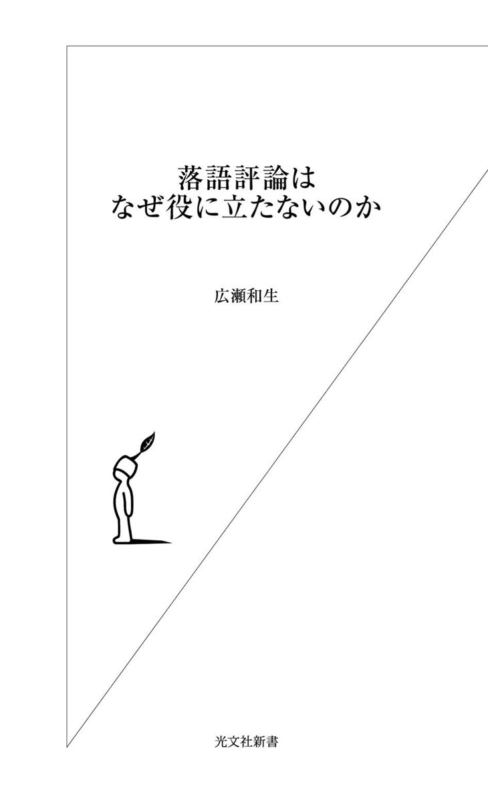
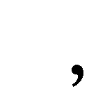

| 落語評論はなぜ役に立たないのか | |
| 広瀬 和生 | |
| (2011) | |

目次
二〇〇八年、僕は『この落語家を聴け！』（集英社文庫）という本を出した。二十世紀末から現在に至る落語界の流れを総括し、二〇〇五年以降の「落語ブーム」と呼ばれるものの実態を解き明かした上で、数多く存在する「金を払って観るに値する」魅力的な落語家たちを具体的に紹介した「ガイド本」である。
なぜそういう本を出したかと言えば、「必要とされていた」からだ。
二十一世紀に入り、それまで落語に関心の無かった層が、新たな観客としてどんどん落語の世界に参入してきた。彼らの多くは音楽、映画、演劇といったエンターテインメントと同じ感覚で落語を楽しもうとする、娯楽に貪欲な若い人たちだ。当然、彼らは他のエンターテインメントにおいて存在している「ガイド」の類を、落語にも求めた。
しかし、落語評論家は、彼らの求める情報を与えなかった。
エンターテインメントにおける評論家の役割とは、表現者と受け手の間の架け橋となることだ。音楽で言えば、評論家のくだす「評価」はミュージシャン本人に対してではなく、その音楽の消費者予備軍たるリスナーに向けて発せられている。評論家の存在意義は、音楽なら音楽という「表現」の、当事者としてではなく、第三者として、その表現の受け手（もしくはその予備軍）に対し、わかりやすく「説明」することにある。
落語をこれから知ろうとしている人たちが必要とする情報は、有名な古典落語のあらすじでもなければ、落語の歴史でもない。「誰を聴けばいいか」ということ。それに尽きる。なぜならば、落語とは、それぞれの演者がそれぞれの言葉を用いて目の前の観客に語りかける芸能だからである。
落語は各演者の個性を楽しむ芸能だ。普遍的な「落語」というものは存在しない。ただ具体的な「誰某の落語」が個々に存在するだけである。それぞれの演目は、伝承されるべき物語として独立した価値を持つのではなく、演者が聴き手を愉しませるための素材に過ぎない。だから、同じ演目でも、演者によって内容は大きく異なる。落語を聴いて面白ければ、それは「演者が面白い」のだ。
エンターテインメントとしての落語を楽しむには、演者を選んで聴かなければいけない。才能の無い人間が演る落語は退屈だし、時には苦痛ですらある。
入門者にとっての不幸は、たまたま最初に「つまらない演者」に出会って「落語って、つまらないね」と思ってしまうことだ。
「面白い演者とつまらない演者がいる」という事実を認識していれば、「ああ、コイツの落語はつまらないんだ。今度は違う人のを観てみよう」と考えることもできる。しかし、今の「落語評論家」は、そういう知識を与えてくれない。彼らは初心者に対して極めて不親切だ。
現代には「面白い演者」が大勢いる。その「面白い演者」それぞれがファンを増やすことで、総体としての落語界の隆盛がもたらされた。毎日のように落語の現場に足を運んでいる僕には、「今こそが落語の黄金時代」と思えるほどだ。
入門者には、その現実をありのままに教えてあげるだけでいい。「落語評論家」と名乗るほど落語を愛している者であれば、「こんなに面白い人たちがいるのに、知らないのは損ですよ！」と訴えかけたくなるはずである。
なのに、彼らはそれをしなかった。
いったい、どうしてなのだろう。
僕が一九七〇年代に落語を聴き始めた頃は、評論家は頼りがいのある存在だった。鋭い分析と豊富な知識で啓蒙してくれた矢野誠一氏、洒脱な文章で落語の魅力に目を開かせてくれた江國滋氏。『現代落語家論』に代表される川戸貞吉氏の一連の著作は、「誰が、どういう風に面白いのか」を具体的に教えてくれた。
だが、今、そういう「評論家」はいない。
優れた落語評論の書き手なら、作家の吉川潮氏や堀井憲一郎氏といった人たちがいるが、吉川氏は小説が本業であって「評論家」ではないし、堀井氏は落語に関しては僕と同じ「客の立場」の人。他にも演芸プロデューサーの木村万里氏や放送作家の松本尚久氏など、リアルな「落語の今」を語れる人材は何人か思い浮かぶが、いずれも肩書きは「評論家」ではない。
もちろん今でも「落語（演芸）評論家」を堂々と自称する人たちは存在する。彼らは、落語の歴史や文化的背景などの薀蓄は豊富だ。昔の名人についてなら饒舌に語る。しかし、「今の落語」については甚だ心もとない。普通の落語ファンのほうが、よっぽど「今の落語」に詳しかったりする。
なぜ、こんなことになってしまったのか。それを解き明かそうというのが、この本の狙いだ。
本書では、まず第一章で「落語」というジャンルそのものについて述べている。
評論するためには、そのジャンルの有りようを理解していなければいけない。現代の落語評論の歪みは、「落語」というエンターテインメントの本質から目をそらしていることから起きている、と僕は考える。「落語評論」を論じるには、まず「落語とは何か」を知らなくてはいけない。
それを踏まえて、第二章では「落語評論とは何か」について考えてみた。
落語に評論は必要なのか。必要だとすれば、それはどういうものであるべきか。なぜ落語評論は一般社会のニーズに応える能力を失ったのか。これらの問題に正面きって取り組む「評論」論は、本書が初めてである。
「落語評論はなぜ役に立たないのか」――これは二十世紀の終わりからずっと、僕が抱いてきた疑問だ。本書で、ようやくその解答が見つかった気がしている。
落語とは何か。
厳密な定義付けをするのは難しい。正確に答えようとするなら、落語という芸能のそもそもの発祥まで遡り、辿ってきた歴史を考察することが必要になるだろう。
そういうことを研究しようという学者はいるだろうし、優秀な研究者なら「落語とは何か」という考察を興味深く読ませてくれるはずだ。
だが、さしあたって僕たち観客が落語を楽しむためには、「落語とは何か」を考える必要は無い。
落語の歴史や演目の時代背景といった予備知識も要らない。たとえ江戸時代を扱った噺であっても、テレビで時代劇や大河ドラマを観るのと同じように、気軽に触れればいい。
「落語入門ガイド」だの「落語のお作法」だのといった読み物は、あたかも「落語を聴くためにはその歴史を知り、江戸の文化に興味を持たなければいけない」かのごとき錯覚を植えつけようとするが、いったい何のために「入門」のハードルを上げるのか、理解に苦しむ。
落語は高尚な芸術ではない。それぞれの時代の「今の観客」に向けて演じられる大衆芸能だ。だから、普通の観客にわからないような演じかたをしている落語家はダメな演者である。一般人に背を向けてマニアだけを相手にする落語家がいるとしたら、それは「趣味として落語を演っている」に等しい。
もちろん、落語という芸能には深みも奥行きもあるから、いったん好きになれば、過去に遡ってあれこれ「勉強」したくなる。昔はどんな名人がいたのかも気になるし、音源が残っていれば聴いてみるだろう。噺の文化的背景も知りたくなり、江戸時代や明治、大正の風俗について調べたりするかもしれない。
だがそれはあくまで「落語ファンとしての愉しみ」の一つとしてあり得る、というだけであって、必須ではない。
映画を観るために、「まず映画の発祥と進化の歴史を勉強してから」と思う人はいないだろう。落語も同じこと。どうやって落語という芸能が発生し、どのような歴史を辿ってきたかを知る必要は無い。僕たちが生まれたときにはもう「落語という大衆芸能」が存在していた。江戸時代にはもうあって、滅びることなく今もある。だから、興味があれば聴けばいい。
落語は日本固有のエンターテインメントとして、そこにある。それだけのことだ。難しく考える必要は無い。
現代のバンドを入り口としてロックに魅了された音楽ファンが、より深くロックを知ろうとして時代を遡り、一九八〇年代、七〇年代、六〇年代......とルーツを辿っていくことはよくある。その逆は、あまり聞かない。今のロックを知るために、まずデルタ・ブルースの発祥まで遡り、ロックン・ロールが生まれた一九五〇年代、ビートルズやジミ・ヘンドリックスが登場した六〇年代......と歴史を追ってきたら、いつまで経っても現代に辿り着かないし、第一、途中でイヤになってしまうだろう。今の音楽を聴きたいのに、何で古臭い音楽から始めなくちゃいけないんだ、という気になって当然だ。落語だって同じことである。
落語家が着物姿で座布団に正座して喋るという「様式」にも深い意味は無い。大相撲を初めて見た人が「何でチョンマゲ？」「何でフンドシ？」と不思議に思ってもおかしくないが、やがて「あれはああいうもの」と受け入れる。なぜなら、それが「様式」だからだ。「様式」の意味を問うことに意味は無い。「ミュージカルは、何でいきなり唄い始めるのだ？」と問われても、「それはミュージカルだから」としか言いようが無い。なぜ落語家が着物を着て座布団に正座するのかといえば、それが江戸以来の落語の様式だからなのであって、それ以上考えるのは時間の無駄だ。落語はそういうものとして受け継がれてきた。それだけのことである。
もちろん、先鋭的な落語家なら「現代に着物で正座して演る意味は有るのだろうか」と疑問を抱き、別なスタイルを試そうと思いつくかもしれない。また学究的な立場で落語に対峙する「落語研究家」であれば「現代でもなお着物で正座スタイルであることの意味」をあれこれ考察することだろう。だが、客にとっては、「江戸時代に始まった芸能だからああいう姿」であり「今もああいうスタイルで演るから『伝統芸能』と言われている」という程度の認識で事足りる。
「落語とは何か」という定義は、客が無理に考えることではない。落語家が「これは落語だ」と意識して高座で客に向かって語るものが落語だ。それでいい。「じゃあ落語家の定義は？」なんて厳密に考えるまでもなく、落語家は自分で「落語家」と名乗っている。（「噺家」でも同じことだ）
ロックの定義を知らなくても、ロックは聴ける。プレイしているミュージシャンが「これはロックだ！」と宣言し、聴き手が「ああ、ロックだね」と納得すれば、それはロック・ミュージックなのだ。
落語も、そういういい加減な態度で聴けばいいのである。
落語は文学ではない。話芸だ。
多くの場合、落語は演者が何らかの物語を伝えるような形式を取っている。地の語りをも交えつつ、大半が登場人物の台詞で進行していくその形態は、小説に類似している。ゆえに、その「小説のような形式で展開する物語」を落語だと誤解する向きがある。
そして、その「誤解」を助長するような「落語を読む」本が、昔から存在してきた。落語の高座を文字で再現して、それを読むことで落語を体験するという趣旨の本だ。
「読む落語」の始まりは、明治時代の三遊亭圓朝の口演を書き記した速記本で、これが人気を博したことから、落語の速記本は明治の大衆文学の一ジャンルとなった。その後、テクノロジーが発達し、録音や録画で高座を記録できるようになってからも、「落語を読む本」は出版され続けており、そういうものを読んで落語を知った気になる人も少なくない。
だが、落語は「読む」ものではなく、演者のライヴ・パフォーマンスを楽しむべき「話芸」だ。演者の声のトーンやリズム、表情や仕草、そして独自の演出といったすべてをひっくるめたものが「落語」である。
「古典落語」というような言いかたが普及したことで、あたかも落語には古典的な「演目のテキスト」が存在し、それを師から弟子へそのまま伝承すべきものであるかのような誤解が生じてしまったが、落語はそういう意味での「伝承芸能」ではない。
確かに落語家はそれぞれ先人から『道灌』とか『明烏』とか『寝床』といった様々な噺を「教わる」という手順を踏んで「持ちネタ」を増やしていくが、そういった噺それぞれに普遍的なテキストが存在しているわけではないし、各演者は教わった噺を「型どおりに」演じるわけでもない。
例えば『道灌』と呼ばれる噺にも様々な演りかたがあるが、それは歴史の中でいろんな演者が独自の工夫を凝らして演出してきた中で生じたものだし、そもそも『道灌』だの『明烏』だのといった呼称は仲間内の符牒のようなものであって、決して「作品のタイトル」ではない。同じ呼称が使われていても、細部は色々と相違があって当たり前なのだ。
「噺を教わって、それを自分の持ちネタとする」という過程を必ず経るがゆえに、工夫の無い落語家が「教わったものをそのまま演っている」場合もある。実のところ、そういう落語家の数は実に多い。だがそれは、単にその落語家が「工夫する才能」に欠けているというだけのこと。習ったことをそのまま演じているのは伝統の継承として賞賛されるようなことではなく、演者の怠慢として糾弾されるべき行為だ。
噺という「形式」に、演者それぞれの工夫とか個性という「命」が込められて、初めて落語は落語になる。
演者の個性や工夫は、文字として記録できる種類のものとは限らない。速記で書き起こした場合の字面は同じでも、演者が違えばまったく違って聞こえる。文字面ではそれほど面白くない台詞でも、ある演者が語ると、この上なく面白かったりする。
つまりそれが「落語は文学ではなく話芸である」ということだ。「知っている噺を何度聴いても面白い」のは、そこに理由がある。
落語ファンにとって、知らない噺に新たに出会うことは、そんなに大した喜びではない。演目としては知っているものを、この人はどんな風に演るのか。そこに落語ファンの愉しみがある。同じ『道灌』、同じ『明烏』、同じ『寝床』でも、演者が違えばまるで違って聞こえる。だから落語は面白い。
落語は、「演者その人」の魅力が問われる芸能である。端的に言えば、落語の面白さは演者の中にある、ということだ。演者不在の「読み物」としての落語速記本は、落語の「形式」をコピーしたものではあるが、落語そのものではない。
落語は、演者と観客の関係によってのみ成り立つ。
落語の本質は「同時代の観客の前で演者が語る芸能である」というところにある。あくまで「同時代の」観客である。時代を超越した、普遍的な「落語」というテキストは存在しない。個々の落語家が、「それぞれの噺」をライヴで語る。それが落語という話芸なのである。
「落語を読む」本には二種類ある。
一つは演者不詳の落語を列挙するもの。もう一つは『圓生古典落語』『志ん朝の落語』『古典落語 小さん集』等といった、特定の演者の高座を再現する速記本だ。
特定の演者の高座を再現する速記本は、資料としては確かに意味がある。良く出来た速記本は、当の演者をリアルに知っているファンが読めば脳裏に高座が生き生きと蘇るように工夫されている。だが、所詮は落語という話芸の「文字として記録できる」要素を切り取ったものに過ぎない。そしてそれは、落語の魅力の中であまり大きな部分を占めていない。
演者不詳のままズラッと落語の演目を並べているものは、単なるカタログだ。いくら「落語のような体裁」をつくろっていても、それは落語ではない。落語には「普遍的なテキスト」は存在せず、個々の演目は、「八代目桂文楽の『明烏』」とか「五代目古今亭志ん生の『火焔太鼓』」というように、演者を特定しなければ意味をなさないのだ。
立川談志が自ら書籍化した「書いた落語」は、読んで面白いように工夫されている「談志の文学」ではあるが、「談志の落語」そのものではない。安藤鶴夫が自らの愛する名人たちの落語を再構成した『落語鑑賞』は、あくまで「安藤鶴夫の文学」として名著なのである。
確かに「読むだけでも面白い落語」は存在する。名作と言われる人情噺を速記本で読めば、それなりの感動があるかもしれないし、演者不詳の滑稽噺を大量に集めた本で「落語って面白い！」と思う人もいるだろう。だが、それは「落語そのもの」ではない。落語「のようなもの」だ。
先に「演者の工夫が必要だ」と述べたのは、必ずしも台詞や演出を変えなければいけない、ということではない。教わったままの台詞、教わったままの演出であっても、そこに「自分の語り口」という個性を加えることが、その演者の「工夫」となる。
文字として再現できる「落語のようなもの」は、生身の演者が「語る」ことによって、初めて生きた「落語」となる。いくら作品として面白く出来ている噺でも、演者なくして命は宿らない。落語という形式に生命の灯をともすのは、演者の生き生きとした語り口なのである。
演者不在の「落語というテキスト」は存在しない。「誰がどう演るか」がすべてのライヴ芸。それが落語だ。
共有財産としての「古典落語」も、特定の作者が書いた「新作落語」も、単なる素材に過ぎない。個々の落語家がそれをどう料理するかによって、その素材はどうにでも変わる。
落語家が演じる演目のことを「ネタ」と言う。「ネタ」という言葉自体は一般の会話でもよく聞かれるが、もともとは「種」を引っくり返して「ねた」という、一種の符牒だ。「寿司ネタ」「記事ネタ」といった言いかたからわかるように、「ネタ」とは要するに「素材」のことである。
この「ネタ」という言葉に、「落語の演目」の持っている意味が集約されている。落語家のネタとは「話の種」、素材ということだ。
作者不詳の古典落語なるものには、もともと『船徳』だとか『粗忽の釘』といったような「決まったタイトル」は無かった。「勘当されて船宿の二階に居候している若旦那の徳さんが『船頭になる』と言い出して、さあ大変」という内容を、落語家が共有財産として「ネタ」にしていて、それを仲間内でいつしか通称『船徳』と呼ぶようになった、というだけのことだ。
寄席には一日に数多くの落語家が登場し、いろんなネタ（素材）を高座に掛ける。今日は誰が何を演ったのか、ということを把握しておかなければ、後から出た落語家が、また同じネタを用いてしまうかもしれない。それは客にとって迷惑だ。だから、寄席の楽屋には、ネタを記録する「ネタ帳」が置かれ、その日にどんなネタが出たかを記入するようになった。道灌公の歌を真似する噺だから『道灌』、粗忽な男が釘を打つ噺だから『粗忽の釘』。こうして演題のようなものが生まれた。
楽屋で通じれば事足りるのだから、落語の演題は実にいい加減に命名されている。同じ噺に何通りもの演題が付いていたり、『夢金』みたいに「タイトル自体がネタバレ」なものもある。もちろん「ネタバレ」でいいのだ。「ネタ」を知るためのものなのだから、短い一言でネタがわかればそれでいい。客に対して「今日は『夢金』というお噺を申し上げます」と宣言して演じるために考案されたタイトルではないのである。
古典とは違って作者がハッキリしている「新作落語」においては、その誕生の瞬間から演題が作者によって確定されていてもおかしくない。実際、落語作家が作品として書き下ろして誰かに提供する場合など、それが普通だ。
しかし、次々に新作落語を自分で作って演じている落語家の場合、ネタ下ろし（初演）の段階ではまだタイトルまで考えてなかったり、仮タイトルを付けたものの何度か演るうちに変わったり、ＣＤ化に際して初めて正式タイトルが決まったり、その正式タイトルもやっぱりまた変わったり......ということはザラにある。ここには、「演題はもともと符牒のようなもの」という事実が色濃く反映されている。
新作落語であろうとも、要するに落語家が高座で語るための「ネタ」であって、文芸作品ではない、ということだ。
落語において演題に「記号」以外の意味は無い。「誰某の新作落語はタイトルのネーミング・センスが素晴らしい」なんて指摘してみせた演芸評論家がいたが、落語の演題に意味を見出そうとするなんて、落語がわかっていないとしか言いようが無い。こういう人種が「評論家」を名乗るあたりに現代の落語評論の貧しさが象徴されている。
落語とは、「古典落語」とか「新作落語」といった「作品」を語るものではない。古典も新作もひっくるめて、そうしたネタ（素材）を演者がどう表現するかを楽しむ芸能だ。
落語は作品ではない。落語家が、目の前に集まっている観客に対して語るという行為そのものが「落語」なのである。先代林家三平の「小咄を羅列するだけ」の高座が『リズム落語』という「ネタ」として捉えられたのも、落語という話芸の本質からすれば、むしろ当然のことだった。
つまるところ落語とは「落語家が高座で客に向かって語るもの」すべてである。だから当然、寄席で噺家が語る漫談も、落語になり得る。角界出身の三遊亭歌武蔵が寄席を沸かせる鉄板ネタに『支度部屋外伝』という演目があるが、これは要するに「相撲漫談」のことで、『支度部屋外伝』という「作品」が存在するわけではない。巨漢歌武蔵が自身の体験を踏まえて「相撲ネタ」を高座で語る、という状況そのものが『支度部屋外伝』という落語なのだ。
歌武蔵の師匠である三遊亭圓歌の『中沢家の人々』も、いつも演る漫談ネタにそういう演題が付いたというだけのこと。亡き古今亭志ん朝が晩年よく寄席で演っていた漫談は、その内容から『山田吾一』もしくは『男の勲章』と呼ばれたが、「いつものあの漫談」という意味がそこにはあるだけだ。柳家権太楼が船旅での苦労譚を寄席で何度も話しているうちに「ネタ」として定着した漫談は『ジャンバラヤ』と呼ばれているが、こういった「漫談の演題」は「ネタ帳に書くために演題がある」という真実を何より雄弁に物語っている。
落語は「作品」ではない。「演者」そのものが落語である。演目は、素材に過ぎない。同じ噺でも、台詞回しや構成が演者によって違うのは当たり前のことなのである。
落語家は高座に登場すると、大抵の場合、客に対して語りかけるような雰囲気で、世間話をしたり、いくつか軽く小咄を披露したりしてから、落語の演目に入っていく。この、本題に入る前の部分を「マクラ」と言う。
演者がいきなり本題に入らず、マクラから語り始めるのはなぜか。
それは、落語が「目の前の観客に対して語りかける芸能」だからである。
演目イコール落語、ということなら、演者は単に落語を語って帰ればいい。だが落語の本質は「演者」にある。観客は演者に会いに来ているのだ。人と会って、いきなり本題から入るのはおかしい。唐突だし、失礼だ。初めて来た客だって大勢いると考えれば、まずは自己紹介のようなことも必要かもしれない。だから落語家は、自分に会いに来てくれた客に対して、軽い挨拶をする。マクラには、そういう意味がある。
いくつかの小咄を語って落語への助走とするのも、時事ネタの漫談やとりとめのない随談から入るのも、あるいは噺の中に出てくる言葉をさり気なく説明しておいたり、時代風俗に関する薀蓄を語ったりするのも、すべては目の前に来ている観客に対しての「私の噺の世界へようこそ」という演者からの自己アピールだ。
若き日の立川談志が落語と関係のない時事マクラで人気を博した当時、「演目と無関係な漫談をマクラとして語る」落語家は極めて特殊な存在だったが、近年ではマクラの長さ、面白さが評判の落語家が増えた。それは邪道でも何でもなく、むしろ当然の流れだ。「マクラの面白さ」とはイコール「演者の魅力」なのだから。
高座は「マクラ」と「演目」の二つのパートに分かれるのではなく、その二つが一体となって「落語」だ。マクラだろうがネタだろうが、あるいは新作だろうが古典だろうが漫談だろうが、落語家が観客に向かって語りかけることは、すべて落語なのである。
観客は、演者を観に行くのであって、演目を聴きに行くのではない。
これは、落語ファンだったら、誰でも知っている。
だが、昭和三十年代に「古典落語」という概念が広まったことで、その「当たり前のこと」がわかりにくくなる土壌が生まれた。
落語は「古典」をそのまま守っていく芸能ではない。
確かに、落語というエンターテインメントは江戸時代以来の「伝統」を踏まえた芸能である。伝統の中に生きるからこそ「落語」という芸能のアイデンティティは保たれるのであって、伝統を完全に否定してしまえば、それはもう落語ではなくなる。
しかし、伝統の中に身を置きながら「現代の観客」を相手にするのが、落語という大衆芸能の本質である。時代が変われば落語も変わる。落語家は、時代に取り残されてはいけない。観客との「同時代性」こそ、落語が落語であるために無くてはならない「核」となる要素だ。
時代を超越した「普遍的な落語」というのは存在しない。常に「その時代の観客のための落語」でなくてはいけない。そこを見失ったときに落語は滅んでいく。
若き日の立川談志が歴史的名著『現代落語論』の中で「このままでは落語は能のような存在になっていく」と言ったのは、そういう意味だ。
確かに、落語の発祥は遥か昔に遡り、その伝統を継承してきた。それゆえ、「素材」としての落語は、時代設定が江戸だったり明治だったりする。だが、それはあくまで「素材」である。演劇や映画や小説が、昔の時代設定の中でドラマを展開して現代人の心を掴むのと同じことだ。
落語は、「古典落語」と「新作落語」とに分けられる。
簡単に言うと、不特定多数の演者が現代に至るまで連綿と受け継いできて、落語界の共有財産となっている演目が古典であり、特定の演者もしくは作家が創作し、「同時代限定」で演じられるのが新作だ。
古典落語の多くは「作者不詳」だが、作者が明確にわかっていても「不特定多数の演者が連綿と受け継いだ」ことで古典落語となっている演目は少なくない。有名なところでは、幕末から明治に掛けて活躍した初代三遊亭圓朝による『文七元結』『牡丹灯籠』『真景累ヶ淵』『死神』『双蝶々』などといった一連の作品群だ。自作の噺を自ら演じて名声を博した圓朝は、いわば「明治の新作落語家」だが、今や圓朝作品は最も正統な古典落語の一つと位置づけられている。
明治生まれの益田太郎という実業家が「益田太郎冠者」のペンネームで書いた『かんしゃく』『宗論』『堪忍袋』といった噺も、時代を超えて何人もの落語家が演じ続けて今に至っているという意味では、古典落語と言ってもおかしくない。
ある時代に創作された落語が、その時代の演者よりも下の世代に受け継がれ、そこからさらにまた一つ下の世代へと継承されていく。こうした過程を経て「落語界全体の共有財産」となっている噺は、すべて古典落語だ。その意味では、漫画『のらくろ』で有名な田河水泡が創作した昭和の新作落語『猫と金魚』なども、もはや古典落語である。
古典と新作。そんな分類が一般的になったのは昭和三十年代以降のことだ。
当時、落語を「伝統芸能」と位置づけて地位向上を図る一部の評論家たちが、「古典落語」という目新しい言葉を用い、「古典落語と新作落語」という線引きを行なった。この「古典落語」という造語は、昭和三十年代から四十年代に掛けての「ホール落語」の定着と共に広く普及した。
ホール落語とは、三越劇場や東横劇場、イイノホールといった「ホール」で、選りすぐりの演者が、それぞれ充分な持ち時間を得てみっちりと語り、それを観客はじっくりと「鑑賞」するという趣旨の落語会で、普段の寄席やラジオ・テレビでは味わうことの出来ない「落語の真髄」を堪能させてくれるのが「売り」だ。
「もはや戦後ではない」と言われた昭和三十年代。日本人のライフスタイルは大きく変わり、江戸や明治を舞台とする落語の世界は「昔のこと」になっていた。多くの名作の舞台となっている吉原の遊郭も、昭和三十三年に廃止されている。それでもなお江戸や明治のライフスタイルを描くのであれば、「古典」と呼んだほうがわかりやすい。昭和三十年代に「古典落語」という言葉が普及したのは、そんな理由もあっただろう。
しかし、安藤鶴夫に代表される評論家・作家たちが殊更に「古典落語」なる言葉を用いた理由は、それだけではなかった。彼らは「古典落語」という言葉で「格調の高さ」というニュアンスを強調し、「古典落語こそ正統」、即ち「新作落語は邪道」であるという主張をも盛り込んだ。「古典落語」という言葉は、彼らの「美意識」の象徴だったのである。
そして、その「古典落語」という言葉に込められた美意識の具現化が、「選りすぐりの演者が名作落語をみっちりと語り、客はそれを行儀よく座って鑑賞する」ホール落語という形式だった。だからこそ、「古典落語」という言葉は、「ホール落語」とセットとなって普及したのだ。
高度成長期の日本において、ライフスタイルの変化と共に人々が求める娯楽のありかたも変わった。そんな中で、「ホールで古典落語を鑑賞する」という形式は、それまでの寄席の常連客とは異なる客層にアピールした。（その背景にはまず民放開設によるラジオでの落語人気、次いでテレビ演芸ブームがあったことは見逃せない）
「暇潰しに寄席で落語でも聴こうか」という庶民の「日常」とは別の、「劇場へ古典鑑賞に行く」という次元に落語を引き上げたホール落語推進派は、落語界の発展に大きく貢献したことは間違いない。
彼らの「古典落語こそ正統である」という「啓蒙」の出発点が、たとえ「自分の好み」に過ぎなかったにしても、落語という芸能が伝統の中で育んできた「美学」を死守しようという気持はわかるし、そのために「格調の高さ」を殊更に強調したのは、当時としてはやむを得なかったと思う。
ただ、「古典」という部分を強調するあまり、落語の演目を一種の文芸作品のように論じたのは問題だった。彼らは、「落語って実はこんなに奥が深いんですよ」ということを、あえて逆説的な意味合いを込めて主張したのかもしれないが、それを真に受けて、本気で「落語とは伝統を継承する古典芸能である」と信じ、落語は「文字に書かれない広義の文学」の一形態であると誤解する人々を生んだ。
そうした誤解は「古典の遵守こそ絶対」という誤った価値観を生み、落語という芸能を矮小化させるネガティヴなパワーの源となった。二十世紀末に落語界が衰退し、世間から忘れ去られていったのは、その歪みのせいだ。
そして、その「古典遵守」絶対思想が「間違った考え」であるという認識が広まった二十一世紀、落語は健全なエンターテインメントとして再び勢いを取り戻すことが出来たのである。
「古典落語」という言葉が昭和の評論家たちによって広められた背景には、彼らが「低俗」であり「邪道」だと見なす落語が一般大衆に人気を博していたという「現実」があった。
終戦後の三遊亭歌笑、その急死の穴を埋めるように売り出した柳亭痴楽、リズム落語の林家三平といった人気者が大衆に提供していたのは、磨き抜かれた名人芸とは正反対の刹那的な「お笑い」だったが、彼らが人気を得たのは、要するに「一般大衆のニーズに応えた」だけのこと。落語に即効性の「笑い」だけを求める人たちには、「江戸落語の美学」なんてどうでもいい話だ。
落語の歴史を眺めると、戦後から昭和三十年代の落語界は一種の「新作落語ブーム」だったと言える。敗戦による「リセット」から高度成長へと転じる中で日本人のライフスタイルは激変した。落語は「演者が現代の観客に語りかける芸能」なのだから、当然、新しいスタイルの落語が求められる。「現代の風俗」を取り入れた「今の噺」としての新作落語が生まれるのは時代の必然であった。
ただし、「同時代の観客」に向けて演じるからといって、「素材」即ち「ネタ」は、必ずしも「現代」が舞台である必要は無い。昭和の演者が江戸時代を語って昭和の観客を満足させれば、それでいい。落語史上に名を残す古典落語の名手たちは皆、その時代に合う「自分の古典落語」の創造に秀でていた。
戦前に活躍した名人の四代目柳家小さんは「創作力の無い者は噺家ではない」と言ったという。ここでの「創作」とは、新作落語を創ることではない。先人から教わった噺をひたすら磨き上げても、そこにその演者独自の「工夫」が加わっていなければ意味が無いという意味だ。
落語は時代と共に変化する。その「変化」とは演者の「創作力」によって生み出されるものであり、ゼロから新作落語を生み出すのも、伝承された噺に「オリジナルの演出」を加えるのも、「自分一代の落語を創作する」ということにおいては等価である。
新作落語と古典落語、どちらが正統でどちらが邪道かなどという議論には意味が無い。「時代が変わったのに古臭い江戸時代の噺を演っても共感を得られるはずが無い」と決め付けるのは、「新作落語は低俗であり邪道である」と決め付けるのと同じくらい間違っている。落語には「面白い落語」と「つまらない落語」があるだけだ。そして、その違いは素材（ネタ）によって生じるのではなく、演者によってもたらされる。堂々と「つまらない落語」を演じている落語家は、「面白い落語」を提供する才能が無いのだ。
だから、「古典落語こそ正統であり新作落語は邪道」という主張は、理論的には「とんでもない偏見」だ。演者が語る噺が古典であるか新作であるかは本質的な問題ではなく、大衆芸能たる落語において重要なのは「その時代の観客に喜ばれるか否か」である。
だが、実のところ、「古典落語」という言葉が普及した昭和三十～四十年代において「新作落語は邪道」という主張には説得力があった。当時の新作落語は総体として、あまりにレベルが低かったからだ。初めて聴いたらそこそこ笑えたとしても、何度も聴く気がしないようなシロモノに対して「あんなものは落語ではない！」と声高に主張したくなる気持はよくわかる。
当時、邪道であると糾弾された新作落語は、「新作」だから邪道だったのではなく、「落語として面白くない」から邪道だったのだ。それは、現代の優れた新作落語を聴けば、よくわかる。立川志の輔の『みどりの窓口』は現代の新作落語でも屈指の名作だが、何度聴いても面白い。「知っている噺」なのに、繰り返し聴いて新鮮に笑える。それが落語の「あるべき姿」だ。
当時「あんなものは落語ではない」と糾弾された新作は、単純に「駄作」だったのである。
中途半端な存在だった新作落語に革命をもたらしたのが、昭和五十年代の三遊亭圓丈である。
圓丈が出現するまでの新作落語の大半は、時代背景が現代であることが自己目的化していて、語られる「内容」があまりに貧弱だった。当時は落語作家が新作を書くのが主流だったこともあって、「どうしてもこの噺が語りたい！」という演者の情熱が伝わってこなかったし、単なる「古典の焼き直し」も珍しくなかった。
だが圓丈が自作自演した実験的な作品群は、それ以前の新作落語の生ぬるい世界とは全く異なる、新たな表現形態だった。圓丈の演じる物語には「新作である必然」が明確に主張されていた。
新作落語とは圓丈にとって「自己表現」そのものであり、消極的な「古典落語の代替物」ではなかったのである。
圓丈がそれまでの新作落語の古ぼけたイメージを払拭し、「先鋭的な表現形態」としての新作落語を提示したことは、その後の新作落語の潮流を完全に変えた。
圓丈は、自らの作品で新作落語の世界に革命を起こしただけでなく、自ら主宰する落語会において、新作落語を志す後進たちに「実践の場」を与え、叱咤激励し、進むべき道を示した。東京の新作落語の世界において、圓丈は「教祖」に近い存在である、と言ってもいい。
圓丈の新作に衝撃を受け、「自分に合った落語は自分で創ればいいのだ」と悟って新作落語を志した後輩たちは、自らを「圓丈チルドレン」と呼ぶ。例えば、春風亭昇太、柳家喬太郎、三遊亭白鳥、林家彦いちといった気鋭の落語家たちだ。彼らは、それぞれ強烈な個性を発散する「自分の落語」を確立した。
彼らの新作落語は、舞台設定が現代かどうかが重要なのではなく、「物語としての面白さ」が最優先されている。「古典」と対立する概念としての「新作」ではなく、新たな噺を自ら「創作」する、という部分にこそ意味がある。
現代の観客が聴いて面白い噺であれば、時代設定がいつだろうと関係ない。新作落語は「新しいから」良いというものではなく、「面白い噺が新しく作られた」ときに初めてその新作落語には聴く価値が生まれる。逆に、古典落語も「古典だから良い」のではなく、現代の観客が聴いて楽しめるからこそ意味がある。
昭和三十年代以降、「古典落語」という造語が定着していく過程で生じた「落語は先人の型を踏襲する古典芸能である」という誤解は、いつしか「常識」となっていった。この「誤った常識」こそが二十世紀末に向けて落語が衰退していった元凶であった。
落語は文学ではないし、古典を型どおり伝承するだけの芸能でもない。噺を「伝承する」というのは、落語の伝統の中で「ネタ」を共有する、ということであって、その共有財産を個々の演者が「自分独自のネタ」に育てていかなければならない。それが落語だ。
しかし、「古典落語」という造語が定着したことは、「古典芸能としての落語」という概念を生み出し、これが演者と観客の双方に悪影響を及ぼした。
四代目小さんの「創作力の無い者は噺家ではない」という戒めの言葉は凡庸な落語家には届かず、ひたすら「型を先人から受け継ぐ」ことに専念した。それは、「古典を守る」という大義名分に隠れて、独自の演出を工夫することを放棄しただけだ。
本来、そうした落語家は淘汰されてしかるべきだが、観客側にも「古典」という言葉に惑わされ、「先人の型を受け継ぐことこそ落語のあるべき道」と誤解する向きが増えていった。
本来は自由な大衆芸能であったはずの落語が、「古典芸能愛好会」的なマニアに支持されるものになっていく。昭和三十年代以降顕著になっていったこの風潮に対し、警鐘を鳴らしたのが、立川談志だ。
一九六五年に発行した『現代落語論』で、談志は「この頃、落語を聞いていると、『湯屋番』なら『湯屋番』が、誰が演じても、その内容がほとんど同じだ、という不満を持つことが多い。とくに『古典を守る』という姿勢。若手はほとんどこういった立場なんだが、それでも『粗忽長屋』を演じるとすべてが小さんであり、『蛇含草』なら三木助、『錦の袈裟』は圓生、ってなもんになる」と嘆いている。
落語が厳密な意味で「古典を守る」伝承芸能だとすれば、守られるべき「型」や「テキスト」は、江戸時代にまで遡らなくてはいけないはずだ。だが、談志が名著『現代落語論』を書いた当時の若手が「普遍のテキスト」として継承しようとしたのは、「昭和の名人」世代の落語だった。
では「昭和の名人」たちは、江戸や明治から伝わる「古典」をそのまま受け継いで、テクニックだけを磨き上げたのか。そうではない。「昭和の名人」と言われる世代の落語家は、研鑽努力の積み重ねで独自の落語を創り上げ、それが大衆に支持されたことで、後に「昭和の名人」と呼ばれるような存在になったのである。
八代目桂文楽、五代目古今亭志ん生、六代目三遊亭圓生、五代目柳家小さん、三代目桂三木助といった「昭和の名人」たちがそうであったように、それに続く「下の世代」の落語家たちも、それぞれ「自分の噺」として古典落語を練り直さなければいけない。それが、「自分の時代の観客に語りかける芸能」としての落語の、あるべき姿だ。
だが、「昭和の名人」が活躍した時代こそ、まさに評論家たちが「古典落語」という言葉を世間に浸透させていった時代であり、その「古典落語」なるものの理想形を提示しているのが文楽や志ん生といった特定の演者であるのだと評論家は主張した。ここに、誤解が生じる余地があった。
先述したように、江戸落語の美学と伝統の重みを「古典落語」という言葉に集約した昭和三十年代の評論家たちは、当時の風俗を取り入れた新作落語を「あんなものは邪道だ」と否定するだけでなく、「ホール落語」という新たな形式を用いて「これが落語の真髄だ」というものを、一般大衆に提示した。その「真髄」こそ、文楽、志ん生、圓生ら、「昭和の名人」たちの落語だった。
だが、「昭和の名人」と呼ばれることになる、この一握りの演者たちは、あくまでも「古典落語という言葉が広まった時代」のトップクラスであって、落語の全歴史を通じてのオールタイム・ベストというわけではない。
昭和三十年代に「落語オールスター」を選抜すれば、確かに文楽、志ん生、圓生、小さん......といったラインナップになるだろう。
だがそれは、例えば巨人が九連覇した時代の日本プロ野球オールスターを選ぶようなもの。戦前活躍した沢村栄治投手も現代の名手イチローも、時代が違うから、そこには入らない。それと同じで、文楽も志ん生も、「古典落語」という言葉の普及した時代の限定的ベストなのである。
古典落語なる言葉が普及した時代に、ズバ抜けて優秀な演者が数人いたのは事実だ。だからといって、その時代の演者が落語にとって永遠の理想形だということにはならない。冷静に考えれば、そんなことは誰でもわかるはずだ。「昭和の名人」の前の世代には、彼ら自身が「自分なんて足元にも及ばない」と崇める名人たちがいたし、その前にはもっと伝説的な名人がいた、とされる。文楽や志ん生の世代に落語の理想を集約するのはとんでもない暴挙である。
だが、評論家は「古典落語」を語るうえで、わかりやすい例として具体的な演者を挙げる必要があり、それは当時の現存する落語家から選ぶしかなかった。それ以前の「名人」たちの芸をリアルに録音・録画したものが無いからだ。
そこで便宜上選ばれたのが、たまたまその時代の頂点にいた演者たちだった。
それは、あくまで「便宜上」である。それ以前の五代目圓生が、三代目小さんが、四代目橘家圓喬が、初代三遊亭圓右が、初代談洲楼燕枝が、初代三遊亭圓朝が、「昭和の名人」たちより劣っていたわけではない。ただ「昔の人なので音源が残ってない」ので、「ほら、このとおり凄いでしょう」と提示できないだけだ。
だから、本当なら評論家は、「古典落語という言葉は使うけれども、それはコケ脅しのようなもので、実際には落語は演者によっても時代によっても変わるもの。『古典』を型として正確に伝承する芸能ではなく、共有財産としてのネタを伝承することが出来る芸能なのだ」という事実を、きちんと説明すべきだった。
いや、厳密に言うと評論家の中でも矢野誠一氏は一九七〇年に『落語――語り口の個性』でそれを明確に述べているし、立川談志はそれより前の一九六五年に『現代落語論』の中で指摘しているが、それら正鵠を射た分析はむしろ例外で、多くの「落語評論」なるものは、その点を曖昧にしていた。
それゆえ、「昭和の名人」たちの個性を「継承すべき古典そのもの」とする誤解が、昭和三十年代以降、「常識」として根付いていくことになる。
江戸時代から連綿と続く伝統芸能であるはずの「古典落語」の普遍的テキストを、昭和三十年代の一部の演者の落語に求めるのは無理がある。落語は各々の演者の個性によって変化するものであり、「昭和の名人」たちの落語は、あくまでもその時代の観客に向けて、彼らが完成させた「新たな型」だからだ。
「昭和の名人」は先人の物真似が上手いから名人と呼ばれたのではなく、「自分の落語」を確立したから支持され、名人と謳われるようになった。だから、それより下の世代は、彼らの創り上げたそれぞれの落語の型ではなく、その創造性をこそ真似るべきなのだ。談志の言う「伝統を現代に」とは、そういう意味だ。
そして事実、「昭和の名人」の弟子の世代である立川談志や古今亭志ん朝は、伝統を受け継ぎながら、先人の誰とも違う独自のスタイルを創り上げた。談志も志ん朝も、あるいは五代目三遊亭圓楽も柳家小三治も、先人に対するリスペクトと伝統に生きる誇りをバックボーンに、自分の個性で染め上げた「自分の落語」を観客にぶつけた。
江戸時代から続いている落語という芸能の「伝統」を、現代の観客に相応しい話芸で受け継いでいく。それこそが「古典を守る」ということである。先人の演じた型を、時代を無視してそのまま真似することを「古典を守る」と言い換えるのは、欺瞞以外の何ものでもない。
「物真似落語」を賞賛する評論家は志ん朝や談志のような傑出した落語家の存在を「別格」の一言で棚上げし、「古典を守るという欺瞞」を擁護した。
彼らにとって志ん朝の個性は「新たな普遍的テキストの追加」として処理された。彼の場合、志ん生の実子であるという事実がそのまま「伝統の継承」という言葉に置き換えられたという側面もある。実際には志ん朝の落語は「昭和の名人」の誰とも似ていなかったのに。
談志は一九八三年に落語協会を脱会して「落語立川流」を創設、寄席の定席には出演しなくなったため、それ以降は「別格」というより「異端」と見なされることになった。当時の落語協会の会長は談志の師匠である五代目柳家小さん。師匠であり昭和の名人である小さんに背いた形の談志とその一門は、落語協会を中心とする寄席の世界にとってはタブーとなり、もともと談志の異質な才能を受け止めかねていた古典芸能愛好会的な価値観の人々は「アンチ談志」を鮮明にし始めた。
先述したように、談志は一九六五年の『現代落語論』で、「この頃、『湯屋番』なら『湯屋番』が、誰が演じても、その内容がほとんど同じだ、という不満を持つことが多い」と、先人の物真似に終始する古典落語の状況に警鐘を鳴らしていたが、矢野誠一氏は一九七〇年の『落語――語り口の個性』の中でこの談志の指摘を引用したうえで、「といった不満は、なにも談志ばかりでなく、落語のきき手にとって共通のものといってもいい」と述べている。
一九七〇年の段階では、矢野氏のように「演じられかたが画一化していくこと」に対して強い違和感を持つ落語ファンは多かった。当時はまだ、努力を怠る落語家たちの演じかたが画一化していくのは「嘆かわしい傾向」と見られていたのだ。
しかし、その画一化の動きはその後ますます強くなっていき、落語の世界において「保守本流」となっていく。
もちろん、そうした「画一化された落語」が面白いはずはない。だから落語の人気は低迷していった。残ったのは、古典芸能愛好会のようなマニアだけ。彼らは「昭和の名人」の型の踏襲のみを偏愛し、その価値観を共有しない者を（演者であれ一般の聴衆であれ）認めようとしなかった。
こうした歪みが頂点に達したのが、一九九〇年代だった。
二十世紀最後の年である二〇〇〇年、春風亭小朝が『苦悩する落語』という本を出した。ここで小朝が表明していたのは、「このままでは落語はダメになる」という危惧を通り越した、「こんなことだから落語界はダメになったんだ」という苛立ちである。
「昔から熱心に落語を応援してくれた人たちでさえ、今はもう落語が面白くないと感じている」「落語は世間で相手にされていない」といった小朝の指摘は、落語界の保守本流を自認する人々が見て見ぬふりをしていた「真実」だ。
古典芸能愛好会のような排他的な世界でのみ珍重されるようになってしまえば、大衆芸能としての落語に、未来は無い。そして小朝は、この時点では、この流れに歯止めを掛けるのはきわめて難しいと、かなり悲観的な見方をしていたようだ。
ただし、この小朝の『苦悩する落語』の中には、落語界の未来に光明をもたらすのは何か、ということに関する、非常に重要なヒントが含まれていた。
それは、「この十年間、落語が話題になるのは立川流が絡んでいるときだけ」という指摘だ。
落語協会の一員である小朝の立場で、当時これを正面きって言うのは、実に大胆なことだった。先述のように談志は師匠の小さんに反旗を翻すような形で「落語立川流」なる新団体を設立した。落語協会はこの立川流の存在を公には認めず、「寄席の定席に出ない落語家はプロではない」と公言する落語家さえいたし、古典芸能愛好会的な「落語通」たちも、立川流の存在には背を向けていた。
だが、「寄席に出演する落語家だけを認める」という価値観を持つ古典芸能愛好会的「保守本流」とはまったく別のところで、後の「落語ブーム」をもたらす土壌が着々と耕されていた。その中心にあったのが、談志率いる立川流である。
「教わった落語をそのまま演ることこそ落語のあるべき姿」という欺瞞を象徴する現象に、「本寸法」なる言葉の流行がある。
「古典落語をきっちりと演じる」ことを「本寸法」と称するのが、いつ頃から始まったのか。少なくとも昭和期の名だたる評論家たちは、そのような言葉を用いて演者の芸を評することは無かった。
江戸落語に登場する単語としての「本寸法」なら、話は別だ。
安藤鶴夫の『わが落語鑑賞』（一九六五年）には、三代目桂三木助が演じた『へっつい幽霊』が収められているが、その「語釈」に「本寸法」という項目があり、「うまい手順。ものごとの、正しいはこびかた」という意味だと説明されている。（ただし、読みかたは「ほんずんぽう」）
では『へっつい幽霊』のどこに「本寸法」という単語が登場したのかというと、三木助がマクラで幽霊について語る中での「手が七三のところへいって、うらめしイーというのが、こりゃアまア幽霊の本寸法とでも申しますかな」という箇所だ。
柳亭左龍が二〇〇八年に出版した『使ってみたいイキでイナセな江戸ことば』という著書の中にも「本寸法」という項目があって、古典落語『味噌蔵』の中の「酢の物をいただきやしょう」「うーん、本寸法だねぇ」という会話が例として挙げられている。
つまり、対象は何であれ、江戸っ子の「こうでなくっちゃいけねぇ！」みたいな「こだわり」を、ちょっとシャレっぽく表現する言葉が「本寸法」なのだ。
落語に出てくるフレーズを日常でも使いたくなるという心理は落語ファンにはありがちだし、芸人同士の会話で冗談ぽく「いよっ、本寸法だね！」と言ったりすることもある。
もともと、幽霊から酢の物まで広く使える江戸言葉だった「本寸法」。それが、ある時期から「正統派の古典落語」みたいな意味の用法に特化されていったのはなぜか。
僕の見るところ、「本寸法」は、先人の型をそのまま受け継ぐ伝統遵守の演者を偏愛した二十世紀末の寄席マニアの間で、「どういう落語が好きか」を言い表わす便利な合言葉のように流行り、それをそのまま評論の場に持ち込む人が現われたことで、より広く伝播していったようだ。
つまり、もともと「マニアの間での流行」だったのが、二十一世紀に「落語」にスポットが当たったときに、外に漏れ始めたのである。こういうのはよくある現象で、たとえば「オタク」なんて言葉は、評論家が用いるずっと前から使われていたが、評論家が使い始めたことで広く知られていった。
「正統派」と言うより「本寸法」と言うほうが、何となく「粋」で「オツ」な感じがするし、言葉そのものに「江戸落語の本格」をイメージさせる響きがある。落語通を自認する人々の間で「本寸法」が流行った理由はそんなところだろう。
一番の問題は、その程度のレベルで落語を語りたがる人間が「評論家」を自称して公の場で発言するようになった、ということだ。やたら「本寸法」を振りかざす「落語（演芸）評論家」に一流のプロはいない。偏屈なマニアが発言の機会を得て「評論家ごっこ」をしているだけだ。
「本寸法」という言葉が、正統的な古典落語を指す表現として一般に浸透し始めたのは、二十一世紀の初めだった。
たとえば二〇〇一年、古今亭志ん朝の死を悼むコメントの中で、ソニー・ミュージックの京須偕充氏は「いろんな個性がある落語家の中で、明るくて、達者で、本寸法を外さない芸。古典落語があるべき最大公約数の『型』を表現する最大の存在でもあった」と述べている。説明不要で通じると判断したからこそ、京須氏は、こういう場で「本寸法」なる単語を自然に用いたのだろう。
落語通が「本寸法」という言葉を誉め言葉として使うときに評価の対象となるのは「伝統を遵守する姿勢を見せる」というアティテュードである。「古典にしっかり取り組んでいる」イコール本寸法であって、「その古典で人気がある」という成果は問われていない。だから、「古典を懸命に演ってるけど、下手だし、面白くないし、売れない」という落語家でさえ、「それでも本寸法だ」と擁護することが可能だ。
実際、「本寸法」は、先人の型を踏襲するだけで創意工夫の無い退屈な落語を誉めたいときには、実に便利な言葉である。
もちろん、普通の感覚で言うなら、そんな「退屈な落語」を誉める必要は無いわけだが、古典芸能愛好会的な価値観を金科玉条とする「落語通」は、一般人には退屈なだけの落語を「本寸法だね」と誉めたりする。
この、「伝統的な美学に則った正統派の古典落語」という意味合いを凝縮した「本寸法」という単語、実はつい最近まで、辞書には載っていなかった。初めて国語辞書に「本寸法」が現われたのは二〇〇八年発行の『広辞苑』第六版。同じ『広辞苑』でも一九九八年発行の第五版までは収録されていなかった。
二〇〇八年の第六版『広辞苑』には、「本寸法（ほんすんぽう）......本来の正しい基準にかなっていること。落語などの芸を、くずしていないこと。『――の古典落語』」と書かれている。あえて「落語などの芸を」と明記されているのがミソだ。
二十世紀末の古典落語至上主義的マニアたちが、「古典落語の伝統と美学を守り、習った型どおりの落語を磨き上げることに専念するアティテュード」を一言で表現し賞賛する便利な言葉として、さかんに用いるようになった「本寸法」は、二十一世紀に落語を扱うメディアが増えてきたことで落語用語として浸透し、二〇〇八年には広辞苑に載るに至った。
だがそもそも、なぜ古典落語至上主義的な「落語通」たちは、二十世紀の終わり頃から殊更に「本寸法」などという言葉を用いるようになったのか。
「古典を継承することが落語のあるべき姿」だとする価値観が、落語の世界において完全に定着したから、ではない。それならあえて本寸法だとかそうでないとか問題にする必要が無い。
戦後、評論家たちがあえて「古典落語」という言葉を持ち出して「新作は邪道」という主張を試みたときと同じだ。否定したいものが台頭するから、それに反発するのである。
古典芸能愛好会的な「落語通」が、二十世紀末に声高に「本寸法」なる言葉を口にするようになったのは、彼らが「本寸法ではない」と否定したい落語が台頭し始めたのが、この時代だったからだ。
「本寸法」偏愛派が認めたくない落語とは何か。
それは、寄席に出ない立川流を中心とする「自分の言葉で語る落語」の潮流である。「型の遵守」を否定し、現代の観客にとっての「面白い落語」を、自分なりに工夫して提供しようとする落語家たちが、ジワジワと勢力を伸ばしてきた。それに対する反発としての「本寸法」なのである。
若き日に「このままでは落語は能のような存在になる」と警鐘を鳴らした立川談志は、常に「自分の時代の観客に対し、自分の落語を語る」という姿勢を貫いていた。現在、落語が能のようにならずに済んでいるのは、「伝統を現代に」というスローガンを自ら実践してきた談志自身の存在があればこそだ。
かつて談志は自らを、落語という形式を語る「作品派」ではなく、自分を曝け出す「己派」であると称した。そして、その「己派」である談志の弟子たちは、それぞれの方法論を模索しながら、やはり「自分の落語」の確立を目指した。一九九〇年代初頭、まだ若手真打だった志の輔や、二ツ目の志らく・談春といった立川流の弟子たちが、先人の物真似ではない「自分の落語」で新たなファン層を開拓していたことの意味は極めて大きかった。
「型を継承するだけ」の落語は面白くない。その「面白くない落語」が主流を占めるようになったため落語ファンが減少の一途を辿った一九九〇年代に「落語というのはこんなに素敵なものなんだ」ということを一般大衆にアピールし続け、着実にファン層を広げていったのが、立川志の輔だ。寄席経験の無い「立川流生え抜き」の真打第一号である志の輔は、現代的なエンターテインメントとしての「志の輔らくご」を確立し、従来の落語会のマイナーなイメージを払拭した。
志の輔に次いで重要な役割を果たしたのが、立川志らくである。フジテレビ系で一九九三年に放映された『落語のピン』は、立川談志を中心に何人かの落語を放映する深夜番組で、志の輔、昇太といった若手真打や、志らくのような二ツ目にも出演の機会を与えていたのだが、中でも鮮烈な印象を与えたのは「志らくという新しい才能」だった。当時三十歳の志らくは、コントの発想を意図的に取り入れた独特の「現代的な古典落語」を確立し、落語に縁の無かった若い層に強烈にアピールした。
志の輔や志らくが示したのは「落語は、面白く演れば面白いのだ」という当たり前の事実である。落語は演者の魅力を楽しむ芸能であり、演者は落語という「ネタ」を自分で料理して、固有の落語として自分の目の前の観客に提供しなければいけない。それが落語の原点であり本質だ、ということを、志の輔や志らくは身をもって証明したのである。
志の輔や志らくの「面白い落語」とは「自分の言葉で話す落語」だった。つまり、師匠の談志と同じ「己派」である。志の輔も志らくも、実践した落語のスタイル自体は、談志が高座で「己のすべてを曝け出す」のとは違う種類のものではあったが、談志が示した「自分の言葉で話すことの重要性」をきちんと受け止め、それぞれ自分の落語を作り上げた。
才能さえあれば「自分の落語」の世界を築くことは可能であり、それが面白ければ今の世の中でも充分アピールし得る。落語界が低迷しているのは、落語家が面白い落語を演っていないからだ......志の輔や志らくは、それを証明した。この時期の彼らの「面白い落語」の実践が、落語界に与えた影響は極めて大きい。
実のところ、「自分の言葉で落語を語る」演者は立川流だけにいるわけではない。寄席に出ていようがいまいが、優れた落語家は誰でも、「古典を伝承するにしても、それを自分のものにしなければいけない」と知っている。「古典を遵守すべし」という原則論に凝り固まっているのは演者側ではなく、それを取り巻く評論家ら「落語通」気取りの人々だ。
直接、間接を問わず、「自分の落語を創る」という志の輔や志らくの方法論に影響を受けた世代の落語家たちは、それぞれ努力し研鑽することにより、各々の「魅力的な落語」を確立させていった。それが、二十一世紀の落語界だ。魅力的な落語家の数が揃い、それぞれが自分のファン層を確立していて、その総和としての「落語ファン」人口が一九九〇年代に比べてケタ違いに大きくなっている。古典の遵守だけを尊ぶ古典芸能愛好会的な「落語通」は、今の落語ファン人口の中では圧倒的な少数派だ。
「先人の古典落語をそのまま継承すること」を尊ぶ落語通の価値観は、落語の世界を一般人から遠ざけた。マニアにとってはそれはむしろ喜ばしいことなのかもしれないが、真っ当な落語家にとってはそうではない。
「世間には相手にされなくても、自分が好きだった落語を、教わったまま演ってる自分が好き」という落語家がいるとしたら、それはエンターテインメントとしての落語の本質を知らないアマチュアだ。プロの落語家としての自覚があれば、「現代の観客に向き合う」ことを第一に考えるべきである。
しかし、それを自覚している落語家であっても、現実に自分が相手にしているのは「古典をそのまま演ることを望んでいる」ごく少数の偏屈なマニアだけだとしたら、どういうアプローチを取ればいいのか、途方に暮れてしまってもおかしくはない。
一九九〇年代の落語界の「保守本流」は、まさにそういう状況にあった。春風亭小朝の『苦悩する落語』を読めば、当時の「このままではいけない」とわかっている少数の落語家と、それを取り巻く現実とのギャップの大きさが浮かび上がってくる。
世間一般と隔絶してしまい、「古典を愛するごく少数の人たちに、彼らの愛する型どおりの古典を届けるだけ」の世界になっていたのが、寄席を中心とする落語界の、二十世紀末の現実だった。その中で修業時代を過ごす若手には、目指すべき将来像が見えにくかったに違いない。
しかし、志の輔や志らくは、「保守本流」には属していなかった。彼らが所属する立川流は、落語界の保守本流からは「寄席に出られない異端者たち」と見なされ、その存在自体が一種のタブーだったが、だからこそ志の輔や志らくは、余計な雑音に煩わされず、純粋に「面白い落語」を追究できる環境にあった、とも言える。
「自分の言葉で話す」のは、同時代の観客に対して「面白い落語」を提供するために必要な条件である。先人が築き上げた古典落語の美学は「美学として」自分なりに消化し、それを基盤としつつも、現代に相応しい「新たな落語」を「自分の言葉で」創り上げることこそが、落語家に求められる正しい「伝統の継承」だ。
「昭和の名人」は皆、それを行なったし、談志や志ん朝、圓楽、小三治、小朝といった「次の世代の人気者」も、「昭和の名人」の物真似をしなかったからこそ確固たる地位を築くことが出来た。それを志の輔や志らくも実践したのだ。
そしてこの時期から、「志の輔や志らくの成功を認めない」という形で「アンチ立川流」の色を鮮明にする評論家の存在が明らかになってくる。
もともと「立川流は異端」という立場を取る人々にとって、志の輔や志らくは「寄席に出ていない」というだけで「本当の落語家とは認められない」存在である。それが、寄席ファンとは明らかに別の客層に向かって「現代人のための落語」を自分の言葉で語ってウケているとしても、所詮そんなものは「本当の落語ではない」というのが、保守派評論家の言い分だ。
しかし、いくら立川流を異端と決め付け、「あれは本当の落語ではない」と主張したくても、志の輔や志らくが現実に多くの観客を集めているのは、正面切って否定は出来ない。
そこで持ち出されたのが「本寸法」という価値観だ。「伝統の継承と遵守」だけで精一杯な無名の落語家たちを、「その態度こそ正しい」と擁護するためには、「本寸法」という言葉は実に便利な言葉だった。
世間一般から隔絶された秘密クラブみたいな場所で、古典落語マニアを相手に、教わった噺をそのまま再現することに汲々とする落語家の大半は、「上手くも面白くもない落語」を演っていた。それを誉めるには、「本寸法」と言うくらいしかない。
昭和の名人たちが健在だった頃の評論家にとっては、「上手い」とか「面白い」は当たり前で、論じるのはその先にあるものだった。だが、一九九〇年代になると、「古典を遵守すべし」という価値観に沿った落語は「上手くも面白くもない」ものになっていた。であるならば、評論家は「古典を遵守するという価値観が間違いである」と主張しなければいけない。ところが、保守本流に寄り添う評論家たちは、古典落語絶対主義の観点から、「上手くも面白くもない古典落語を演っている落語家」を擁護した。
「古典をそのまま工夫せずに演っている姿勢」を偏愛する平成期の落語マニアが保守派の評論家を囲んで形成したサークルの中で用いられた「本寸法」という言葉は、「習ったことを再現するだけ」の落語家にとっての心のよりどころとなった。「古典落語に一生懸命取り組む」という態度であれば、たとえ面白くなくても、売れてなくても「本寸法」なのだ。成果も質も問われないのだから、考えてみれば何とも巧妙な「造語」である。
先に、「本寸法」という言葉がマスコミで使われた例として、二〇〇一年の京須偕充氏の、志ん朝の死を悼むコメントを引用した。曰く「明るくて、達者で、本寸法を外さない芸。古典落語があるべき最大公約数の『型』を表現する最大の存在」......。
「本寸法」の頂点が古今亭志ん朝。本人がどう思うかはさておき、これは「本寸法」を擁護する立場にとって最強の「錦の御旗」だ。志ん朝こそ、台頭する立川流の「家元」談志に対抗し得る唯一の存在だったのだから。もちろん、「古典に取り組んでいる」ことと、「志ん朝のようになれるかどうか」は、まったく別の話だが。
伝統を遵守する落語を賛美する偏屈なマニアや、その価値観を擁護する評論家の思惑がどうあれ、現実に一九九〇年代の落語は、一部の例外を除き、世間一般とは隔絶した秘密クラブのようなところで少人数を相手にするだけの存在になっていった。
もちろん、「それでいい」と思う落語家ばかりであるはずがない。古典芸能愛好会のような落語通だけを相手にしていても仕方ない、もっと広いファン層にアピールしたい、と思う意識的な落語家が、若手の中から出てくるのは必然であった。
寄席の世界に客が来なくても、立川流の志の輔や志らくは独演会をコンスタントに行ない、満員の観客を爆笑させている。彼らの姿は、志を高く持つ若手にとっては「具体的な目標」となる。
そして、そういった若手を積極的に応援したのが、一九九二年に「関東高田組」の旗揚げを宣言した高田文夫氏、一九九三年に「三派連合落語サミット」を開催した吉川潮氏らだ。（吉川氏は世話人として一九八七年に新作落語の若手の会「らくご倶楽部一〇九」も旗揚げしている）
「関東高田組」は昇太、勢朝、竹丸、志らく、談春といった落語家だけでなく、浅草キッドや松村邦洋、大川豊、松本明子他のヴァラエティに富んだメンバーによるユニット。志らくと談春は各協会の若手落語家を起用した深夜テレビ番組『平成名物ＴＶヨタロー』に「立川ボーイズ」として出演、爆笑コントで人気を得ており、「関東高田組」にも「立川ボーイズ」として参加した。
高田氏や吉川氏のように、「落語の世界を活性化させたい」と昭和の終わりから平成に掛けて積極的に動いた人たちは、昇太や志らく、談春といった若手世代の落語家を起用する様々な企画を立ち上げた。そこに協会の垣根は存在せず、昇太や志らくの「自分の言葉で語る」落語に直接的に影響を受けた落語協会の若手もいた。
「協会の壁を越えて刺激し合う若手落語家」の具体例として挙げられるのは、一九九三年に結成された若手落語家のグループ「らくご奇兵隊」だ。スタート時のメンバーは昇太、志らく、談春、柳家小緑（現・花緑）、三遊亭新潟（現・白鳥）、橘家文吾（現・文左衛門）、横目家助平（現・柳家一琴）の七人で、後見人が立川談志と、立川流顧問の山藤章二氏。「上手い落語家と言われるより面白い落語家と言われるようになること」を目標とした彼らの姿勢は、二十一世紀に入ってからの「落語ブーム」を生む下地を作っていたと言える。
＊落語協会の動き
一九九〇年代も後半になってくると、「立川流の活気」と「寄席の衰退」とのギャップの大きさは無視できないレベルに達してくるが、落語協会においては、一九九六年に副会長に就任した志ん朝の肝煎りで「二ツ目勉強会」が始まったのは重要な出来事だった。志ん朝や小三治といった大物が直接アドヴァイスを与えるこの勉強会で磨かれた若手の中から、二十一世紀の落語界の隆盛を支える落語家が出てきているのは間違いない。
同じく落語協会では、プロデューサー的な動きを始めていた小朝も「小朝の特選若手会」と銘打つ興行を企画、有望な若手の育成に力を入れた。
「落語界の将来を担うべき若手の育成」に力を入れた志ん朝、そして「このままではいけない」と改革を目指す小朝。当時の落語協会の二ツ目が今の落語界でいかに重要な位置を占めているかを考えると、この二人の果たした役割の大きさがよくわかる。
どんなジャンルであれ、「中堅が最も元気で、有望な若手が次々に登場する」というのが健全なシーンのありかただ。ベテランが最も元気で、中堅は伸び悩み、新人は小粒......こういうシーンは必ず衰亡する。
今の落語界の隆盛が一時的なものでなく、しっかりした基盤に支えられているのは、一九九〇年代後半に、立川流に負けじと研鑽に励んだ落語協会の若手と、彼らを引っ張り上げた志ん朝、小朝らの存在があったからでもある。
また、新作落語の世界においては、「実験落語の会」を一九八七年に解散していた「教祖」三遊亭圓丈が、一九九一年から「応用落語の会」を始めた。この「応用落語」のレギュラーだったのが昇太、新潟（現・白鳥）、喬太郎、彦いちといったメンバー。彼らが、二〇〇四年から「ＳＷＡ（創作話芸アソシエーション）」としての活動を通じ、「落語ブーム」の中心的な存在になっていくことも見逃せない。
落語の世界がかつてないほど低迷する中で、「立川流という異端」で純粋培養された「寄席知らず」の落語家が目覚しい成果を挙げた一九九〇年代。意識的な若手落語家たちは飛躍のときに備えて着々と実力を蓄えていた。
二十一世紀に入り、落語界は大きく変わり、落語ファン人口は増加して「落語ブーム」と呼ばれる状況が訪れる。そのための準備は、実は一九九〇年代に整っていたのだ。
昭和五十年代の三遊亭圓丈が示した「自己表現の積極的な手段としての新作落語」という方法論は「圓丈チルドレン」を生んだ。
圓丈自身は、それ以前の「古典至上主義」に対するアンチテーゼとして、「新作至上主義」とも言える態度を取っていたが、「圓丈チルドレン」世代においては、すでに古典も新作も等価である。
圓丈が古典至上主義に対して戦いを挑んだ時代には、「もう古典なんか演っててもダメ！ 新作こそが必要だ！」というアジテーションが必要だった。しかし、現代では、もはやそのようなアジテーションは不要だ。観客側が、古典も新作もフラットに受け入れる態勢を取っているからだ。
新作落語がごく当たり前に受け入れられるようになったのは、もちろん昇太や喬太郎、あるいは志の輔といった演者がクオリティの高い魅力的な新作を演じているからでもある。
だが、かつて圓丈が必死に戦いを挑まなくてはいけなかった古典至上主義が過去のものとなったのは、単に「新作落語の演者が頑張ったから」というだけではない。もっと根本的な理由がある。
それは「自分の言葉で語る落語」が、現代において当たり前のこととなっているからである。
二十一世紀に入り、「古典を伝承する落語」から「自分の言葉で語る落語」へのパラダイム・シフト（その分野で前提となる共通認識が変化すること）が起こったのだ。
パラダイム・シフトは、同時多発的な諸々の要因が絡み合って起こるもので、理屈だけでは説明できない。天動説から地動説へのパラダイム・シフトも、天動説が完全に破綻したから起きたわけではなく、ただ「地動説こそが正しい」という空気が支配的になった、ということだ。
パラダイム・シフトとは「人々が共通して持っている世界観が変わる」ことであり、あえて言うなら「空気が変わる」とか「風が変わる」という表現こそ似つかわしい。
二十一世紀に入り、落語の世界において「自分の言葉で落語を語るのは当たり前のことだ」という風潮が広まった。それは、ジワジワと浸透していったというより、「二十一世紀に入った途端にパッと変わった」というムードに近い。
それが、僕の言う「古典を伝承する落語から自分の言葉で語る落語へのパラダイム・シフト」である。
二十世紀の終わりまで、「古典を遵守すべし」という価値観が支配的だった落語界において、二十一世紀に入ると途端に「落語は自分の言葉で語るべきもの」であるという価値観が当たり前のものとして根付いたのは何故か。
きっかけは、様々だ。直接的に志の輔や志らくに影響を受けた落語家もいただろう。昇太の新作落語の影響かもしれない。もともとそういう考えかたを持っていた若い落語家が、一九九〇年代に蓄えた実力を二十一世紀に開花させた、ということもあるだろうし、志らくや昇太に影響された後輩がグングン成長するのを目の当たりにして、「自分もやらなければ！」と煽られた落語家もいる。
二〇〇〇年に春風亭小朝が『苦悩する落語』を、立川志らくが『全身落語家読本』を出版したことも、意識的な落語家を触発したかもしれない。前者は、落語協会の「改革派」として様々な問題提起をし、「立川流と高田文夫さん絡みでしか落語がマスコミに取り上げられることが無かったのは事実」と、あえてタブーに触れていたし、後者は「形式を守るだけの古典は面白くないのは当然。自分の言葉で自分の落語をこしらえれば面白くなる」と訴えた。
二〇〇一年に落語界最大のスター古今亭志ん朝が、二〇〇二年に人間国宝柳家小さんが亡くなったことで、特に落語協会において、ある種の「危機意識」が生まれたのも大きい。「これからは自分たちが落語を盛り上げていかなくてはいけない」という責任感から、「自分の落語」に目覚めた演者もいただろう。あるいは「重しが取れて自由に演れるようになった」中堅層もいたかもしれない。
志ん朝の死は「本寸法」派の最強の錦の御旗の喪失でもあった、と見ることも出来る。「本寸法の頂点」としての志ん朝が亡くなり、「あれが理想」という具体例が「本寸法」派から失われ、そこに残ったのは「己派」の談志。その談志の志ん朝没後の活躍は目覚しく、それによって立川流の存在感も一段と増した......。
だが、きっかけはこの際、どうでもいい。二十一世紀を迎えたとき、同時多発的に、いろんな落語家が殻を破って「自分の言葉で」落語を演るようになった。
「風が変わった」のである。
落語界を取り巻く「気分」が変わったのだ。
二十一世紀初頭、才能ある落語家たちが「落語は型の模倣じゃなく、自分の言葉で喋るべきものなんだ」と思い、実践した。それは「時代の要求」であった。
このパラダイム・シフトにより、「自分の言葉で古典を作り変える」立川流の方法論や、「自分の言葉で自分が創った噺を語る」新作落語が、当たり前に受け入れられる土壌が形成された。
その「自分の言葉で語る落語を受け入れる土壌」に、これまでに無かった様々な種がまかれ、すくすくと育ち、見事に花開いた。それが近年の、いわゆる「落語ブーム」なるものを生んだのである。
二〇〇五年頃から「落語ブーム」なる言葉がマスコミに取りざたされたものの、結局、本当に「ブーム」と呼べる状況にはならなかった。もしも「ブーム」ならば、どのメディアも落語家だらけになり、テレビでも落語番組が花盛りとなるはずだが、そんなことは起こらなかった。
二〇一〇年に入ると、「落語ブームは終わった」という言いかたをする評論家もチラホラ出てきたが、始まってないものは終わりようも無い。
十数年前まで、落語というエンターテインメントの存在は、世間一般からはまったく忘れられていた。だが、今は、ごく普通に「あまりメジャーではないエンターテインメント」として存在している。
「落語ブーム」とは、落語という娯楽の「再発見」だった。
この「再発見」の直接のきっかけを作ったのは、二〇〇五年に話題となった「林家正蔵襲名イベント」の仕掛け人である春風亭小朝、及びテレビドラマ『タイガー＆ドラゴン』他を仕掛けた高田文夫氏の二人だ。
それはあくまで「きっかけ」であり、落語そのものに魅力が無ければ、人はすぐに離れていってしまっただろう。しかし、二十一世紀の落語界には、落語という「未知のエンターテインメント」に興味を持った入門者を捉えて離さない魅力が備わっていた。
二十世紀末に支配的だった「古典落語は先人の型を遵守すべし」という思想が、「落語は自分の言葉で語っていいものである」という思想に取って代わられた。このパラダイム・シフトにより、落語は現代人のためのエンターテインメントとして復活した。
志らくは著書『立川流鎖国論』の中で、「立川流は鎖国していたからこそ優れた文化を生んだ」と分析した。だが僕から見ると、鎖国していたのはむしろ、一九九〇年代の立川流の活躍を見て見ぬふりしてきた落語界である。
立川流は、寄席の世界の外側に広々としたマーケットが広がっていることを告げる「黒船」だった。
落語協会にも小朝のように開国論を唱える落語家はいたが、二十世紀の間は攘夷派が優勢だった。しかし、二十一世紀に入り、志ん朝、小さんが相次いで亡くなると、流れは一気に「攘夷から開国へ」と傾いていった。
この時期の談志の活躍も、大きな意味を持っていた。「志ん朝が死んで落語の灯が消えた？ 冗談言うな、まだ俺がいるじゃねェか！」とばかりに、大観衆を相手に「芸術の神が降りてきたような」名演を立て続けに披露した談志の存在感は、圧倒的だった。
志ん朝没後の五年間ほどが、談志の落語家人生の中でも絶頂期だったように僕には思えるが、この談志の活躍は、どんなアンチ立川流をも黙らせた。
そして立川流はさらに活気づき、志の輔、志らくに続き、「将来の名人候補」として立川談春が名乗りを上げることになる。
志の輔、志らく、談春らは、現代人のための「自分の言葉で語る落語」で人気を博した。だが、立川流だけが「自分の言葉で語る落語」を実践していたわけではない。「落語というのは、個々の演者が自分の落語をこしらえるもの」というのは、優れた演者にとっては大前提であった。
例えば、柳家小三治。彼の『落語家論』という著書には、一九八二年に書いた「愚の骨頂」なる一文が収められており、そこには、ハッキリこう書かれている。
「教わった通りやって一流といわれたり大家と言われた噺家、いや一人前と言われた噺家はどこにもいない」
そして、こうも言っている。
「題材だけが古典で、いつも新作落語だったんだ」
つまり、設定や大まかな構成は伝承されるけれども、その時代その時代で、演者が「自分の噺」に作り変えていた、ということだ。
さらに小三治は、「台詞は教わったままでもいいが、お手本をなぞる段階を終えたら、自分の感情を込めて、自分の口調で話さなければいけない」ということも付け加えている。
一九八二年に小三治がこう言っているのに、それを実践する演者がその後なかなか出てこなかったのだから、落語界が低迷するわけだ。
だが、一九九〇年代の立川流の躍進を直視していた若手は、「自分の言葉」で落語を演ろうとし始めた。そして、未熟だった彼らが二十一世紀になる頃、成熟し、開花して、それぞれの「自分の落語」で、新たなファン層を落語に引き入れた。
パラダイム・シフトを経て何年も経った今、立川流かそれ以外かといった区別は、もはやあまり意味を持たない。どの協会にも、現代人のための「自分の言葉で語る落語」を実践する魅力的な落語家たちがいて、それぞれ自分のファンを増やしている。
所属団体はどこであろうが、才能があって面白い演者は人気を集め、面白くない演者は客を呼べない。そういう「当たり前」の状況になっているのが、現在の落語界だ。
かつて筒井康隆は著書『乱調文学大辞典』の中で、星新一の「どうも調子が出ないと思っていたら、調子が出ていないようだと批評に書かれた。調子が戻ったなと思ったら、調子が戻ったようだと書かれた。批評っていったい何なのだ」という発言を引用し、「批評は作家のためにあるのではなく、読者のためにあるものだ」と書いていた。
評論や批評は、対象となった表現者のためにあるのではなく、読者のためにある。
当たり前のことだが、筒井康隆がそれをあえて言ったのは、「この作家のこういうところがいけない。これはこのようにすべきだ」と、作家に対する提言や苦言を書くというスタイルの「文芸批評」が存在するからだろう。
音楽や映画、演劇といったエンターテインメントの世界において、「評論は読者のためにある」ということは自明のこととして定着している。「今、観に行くべき面白い映画はどれか」とか「誰某がリリースした最新作のＣＤはどの程度の出来か」といった情報を求めて人々は評論を読む。
新聞・雑誌の映画評やＣＤレビューといった即効性のあるわかりやすい例だけでなく、個々の作品なりアーティストなりを掘り下げて「論じる」場合や、そのジャンルに現在どんなムーヴメントが起こっているかを解説する場合でも、それぞれの読者が、その評論の対象についての知識を得るために読むものである、というのは変わらない。
消費者に対する情報の提供が、エンターテインメント産業における「評論」の存在意義である。身も蓋も無い言いかたをしてしまえば、「どれに金を使うべきか」を読者に考えさせる判断材料を提供するのが、評論家の仕事だ。
落語は文学ではない。そこを誤解して、文芸批評のような方向に傾きがちな評論家がいるが、落語評論とはあくまでも音楽や映画と同様のエンターテインメントの評論であるということを忘れてはいけない。
落語とは、演者の魅力を楽しむ芸能である。観客は演者に会いに行くのであって、演目を聴きに行くのではない。落語が面白いというのは、即ち「その演者が面白い」ということだ。
だとするなら、落語というエンターテインメントの評論が読者に提供すべき最大の情報は「誰が面白いか」ということになる。
そしてまた、落語の本質は同時代性にある。落語は時代を超えた古典伝承芸能ではなく、それぞれの演者が自分の目の前にいる「同時代の観客」に語りかける芸能だ。
だから、落語評論は「今の観客にとって誰が面白い落語家か」を教えるものでなくてはいけない。
したがって、落語の評論を行なうための最低条件は、現代の落語家に対する知識を広く所有していることだ。「昔の落語家には詳しいが最近の落語はたまにしか観ない」というのは論外だし、「寄席には足繁く通うが立川流の落語はあまり観に行かない」というようなタイプも評論家の資格は無い。「深いが狭い」知識では、読者の求める情報を提供できない。「深い」と共に「広い」が要求される世界なのだ。
音楽ビジネスの世界では、音楽全般を評論するという意味での音楽評論家は存在しない。広いマーケットがジャンルごとに細分化されている世界であるから、「クラシック音楽評論家」「ジャズ評論家」「ロック評論家」といった大きな括りのみならず、ロックならロックの中でもさらに洋楽か邦楽か、ヘヴィ・メタルかパンクかプログレかといった評論ジャンルの棲み分けはもはや自明のこととなっている。
だが落語のマーケットは非常に小さいから、「広く」といってもたかが知れている。その気になれば「今の落語」全般を一人の評論家がすべてカヴァーすることは可能だ。逆に言うと、「今の落語」全般をしっかり観続けていない人物は、落語評論家を名乗る資格は無い。「志の輔や談春は年に数回しか観ないが寄席の定席には頻繁に通っている」というタイプは「寄席評論家」と名乗るべきだ。
落語は月に数回程度しか観ない「演芸評論家」が落語を語ることもあり、それを一概に否定するものではないが、そういう場合は「現代落語の専門家としての意見ではない」ということを書き手自身が明確にしておかなければいけない。
例えば、エラリー・クイーンやアガサ・クリスティの生きた時代の推理小説全般には非常に造詣が深いが、近年の作家によるミステリーはあまり読まず、特に日本の作家はほとんど読んだことがない、というような人物が、東野圭吾の数ある作品の中から「たまたま読んだ一冊」を論評したとする。「そういう人物の目にその作品がどう映ったか」という意味では興味深いが、書評としての正確さには欠けると言わざるを得ないだろう。
現代の落語全般を熟知していない書き手による現代落語の評論は、演芸評論家であろうが演劇評論家であろうが作家であろうが、「専門外のことについて書いている」という意味においては同じこと。落語における自分の守備範囲が「過去の文献の研究」だったり「昭和の名人まで」だったりする演芸評論家は、それをきちんと表明すべきだ。
どんなジャンルにおいても、完全に客観的な評論というのはあり得ない。面白いかどうかというのは主観的な問題であり、結局のところ「好きか嫌いか」というところに帰着せざるを得ない。そこが、評論という行為の難しいところだ。
個々の評論家が主張する「この演者が優れている」とか「この演者は凡庸である」といった価値判断には、客観的な裏づけが無い。評論家は自分の判断基準に照らし合わせて「自分の下したジャッジメント」を表明するだけだ。「オマエの言うことが正しいと信じるべき根拠は何だ？」と問われても、評論家が自己の正しさを「証明」することは不可能である。
それでも評論は読者の判断材料として必要とされており、評論家は「証明は出来ないが、自分は正しいことを自分は知っている」という立場で、自己の価値判断を表明する。「自分が正しいことは自分が知っている」とは、神にでもなったかのような傲慢な態度だが、論理的に言えば評論家とはそういう存在だ。
評論家を名乗ることは誰でも出来る。そして、エンターテインメントにおける評論とは、つまるところ「好きか嫌いかを表明する」に過ぎない。
だとすれば、評論家に必要とされるのは何か。
それは、「自分は『自分の意見』を言っているに過ぎないのだ」という自覚を持ちながら、それでもなお「この『自分の意見』は世の多くの人々にとって必要な情報となり得るのだ」と確信できるだけの研鑽努力を重ねることだ。
神ならぬ身でありながら、他者に対して評価を下すという僭越な行為を行なう以上、そこには大きな責任を伴う。自分にはそんな資格があるのかと常に問い質し、その資格を失わないよう知識と経験を積み上げて、自他共に認める「そのジャンルの第一人者」となれるよう、怠り無く努力を続ける者だけが、「自分の意見」を評論と称する資格を持つ。
だが、実はそれだけでは不充分だ。
評論家となる人物には、大前提として、自分が評論する対象となっているジャンルへの「無償の愛」とも言うべきものが備わっていなくてはいけない。
評論は、読者のためにあるものだ。では、なぜ読者に情報を提供するのか。そのジャンルの魅力を正しく人々に伝えるためだ。「良いものがきちんと評価されること」によって、そのジャンルの魅力をより多くの人々に伝えたい、何が良くて何が良くないかを正しく伝えることによって、そのジャンルが正当な評価を受け、発展し、栄えていくことを望む......それが、評論という行為の動機であるべきだ。
「落語の評論」ということに限定して言うなら、評論する動機は「落語の面白さを、より多くの人に伝えたいから」でなくてはいけない、と僕は思っている。
落語の魅力は演者の魅力であり、同じ演目でも、演者が違えばまったく面白さが異なる。だから、もしも落語の面白さを知らない人たちに「面白いものなんですよ」と伝えたいのであれば、まず最初に「誰の落語を聴くべきか」を指南してあげるべきだ。
もちろん、落語はパーソナルな芸能であるから、ある人にとって最高に面白い落語家が、他のある人にとってはそれほど面白く思えない、ということは充分にあり得る。そのことを踏まえたうえでなお「落語を聴くプロ」との自負のもとに、「まずはこの人たちを聴いてみてほしい」と、より普遍的な魅力を持つ落語家を、様々なタイプを取り揃えて、紹介する。それが、落語評論家のやるべき仕事だ。そのために、評論家は日々「現代の落語の最前線」を追いかけて落語会に通い詰めなければいけない。
「観るに値する落語家を具体的に紹介する」ということの意味は、二つある。
一つは言うまでも無く、観客（もしくはその予備軍）にとっての、効率の問題。魅力的な演者も多いが、つまらない落語家の数はそれを遥かに凌駕するという現実を知っていれば、「面白い落語を聴きたいなら演者を選んで聴きなさい」とアドヴァイスするのは当たり前だ。
「個人の好みの問題なんだから、余計な先入観を初心者に与えるのは良くない。まずは色々な落語を体験してみて」などと訳知り顔で言う「落語通」もいるが、それは的外れの世迷言。面白いかどうかもわからない落語に金と時間を費やす「初心者」こそ、「どれを聴けばハズれないか」を知りたいわけで、そのために彼らは評論を読むのである。
もちろん、「自分の好みの落語家」を見つけるには、ある程度の試行錯誤は必要だ。ただ、その効率は適切なアドヴァイスによって著しく高まる。
例えば、まったく落語を聴いたことが無い人に「どこから始めたらいいですか？」と個人的に訊かれたとき、僕は「まずは立川志の輔の独演会に行ってみるといいですよ」と助言することが多い。
志の輔は現代人にとって親しみやすい高品質のエンターテインメントとしての落語を「より広い人たちに」提供している演者だ。彼は新作も古典も演り、爆笑噺も泣かせる人情噺もある。独演会ではいくつかの種類を組み合わせて演る。彼の落語の、どの部分に最も感銘を受けるかは人それぞれだろう。「笑える新作落語」がもっと聴きたいと思った人には「新作落語の演者には他にこういう人がいますよ」と教えてあげれば参考になるだろうし、「古典落語にハマった」というのであれば、いろんなタイプの「現代の古典落語の名手」を紹介してあげればいい。
「入門者に先入観を持たせるのは邪道だ。自分で判断すべきである」という意見は、娯楽の選択肢が非常に多い現代人にとって非現実的な「助言」だ。何の助けにもなっていない。
「教育の意味」を端的に示す有名な逸話がある。家が貧しくて小学校までしか教育を受けられなかった少年が、学校には行かず本も読まずに小学校までの知識だけで数学の研究を続け、何十年も経って二次方程式の解法を「発明」した。中学校へ行けば普通に授業で教わる公式を......。
真偽の程も定かでない「伝説」だし、これをそのままエンターテインメントにおける「評論の意味」に置き換えるわけにはいかないが、「学習」イコール「効率化」であるというのは間違いない。何の予備知識も無いまま毎日あらゆる落語家の高座に接し続けた結果、五年後にようやく「自分にとって最高に面白いのは立川志の輔だ！」ということを「発見」するのも、それはそれで一つの生きかただが、すべての人に適した「落語の聴きかた」ではない。
マイナーなエンターテインメントの一ジャンルである「落語」なるものに興味を持った入門者が、「面白くなくても、経験値を高めるためにとにかく聴き続ける」という行為に意味を見出すだろうか。仕事ではなく娯楽として接するのであれば、普通の人はたいてい、まず最初に何か「自分にとって面白いもの」に接したことで興奮し、その快感に病みつきになって、「もっと、もっと」と、のめり込んでいく、という過程を辿る。最初に「面白いものがある」ということを実体験として「知って」いるから、同じジャンルに「何かもっと面白いものがあるかもしれない」という可能性を信じることが出来る。自分にとって面白いかどうかも皆目わからない未知のものに膨大な時間と金を費やすのは、あまり一般的な感覚とは思えない。
だから、もしも「落語の魅力をもっと世に知らしめたい」と思うのであれば、入門者に効率的に「まずはここから」と、いくつかの「面白いと感じるであろう最有力候補」を示してあげなければいけない。無計画に落語の実演に接すると、「面白くない落語」に接する確率は非常に高い。現実に、面白くも上手くもない凡庸な演者は数多いからだ。
もっとも、大半の面白くない演者も淘汰されず落語家を続けていられるくらいだから、この業界はかなりユルい。そんな落語業界のぬるま湯的な体質にも、それはそれで意味はあるのだろうし、ひとたびマニアの域に入ってしまえば「面白くない落語を聴くのもまた面白い」という倒錯した心理に至る可能性だってある。
問題は、「下手でも面白くなくてもみんな落語家」という馴れ合いの世界を、そのまま垂れ流す評論家がいることだ。そういう評論家は、外向きに発信せず、業界内部に対して発信しているとしか思えない。（この場合の「内部」というのは、「落語なら何でも好き」という倒錯した「自称落語通」をも含んでいる）
閉ざされた内輪の世界に向けて発信している評論家は、彼自身がその業界の中にいる。内輪から内輪に向けての発信だ。そこに厳格な批判精神があればいいが、業界内での保身を優先して批判精神を放棄する輩がいる。それが落語評論をダメにした。
アンチ立川流の評論家が立川流を非難するのは、その評論家自身が所属する「内輪」の中に、立川流が存在しないからだ。立川流を認めない評論家は、「寄席に出ないから」とは表向きの理由、本当は「ぬるま湯的な体質を共有できないから」という理由で、立川流を「外部」と捉えているのである。
そうした「落語業界の内輪」である評論家にとって重要な「落語家を計る物差し」は、落語協会や落語芸術協会といった団体や寄席における序列であり、内部でどう評価されているか、である。彼らは決して、「まだ内輪に入ってきていない一般人」が面白いと思うかどうかを第一には考えない。そもそも、落語の面白さを広く知らしめようとしていないのだ。
当然、そういう評論家の「評論」は、これから落語を聴き始めようという人たちにとっては、役に立たない。面白い演者を教えてくれるどころか、そもそも「落語の世界は、一部の優れた演者と大多数の凡庸な演者によって成り立っている」という事実を教えてくれない。そんなことを公に言ってしまうと、ぬるま湯的な内輪の「和」を乱してしまうからだ。
初心者が落語を聴こうと思って評論家の書いたものを読む。そこに「人の好みは色々だから、寄席に行って自分で好みの芸人を探そう」などと書いてあるだけで、「選ばずに行くとたいていはつまらない」という事実がひた隠しにされているとする。それを鵜呑みにした人は、「じゃあ寄席に行けばいいんだ」と、何の取捨選択もせず、適当に寄席に行ってみるだろう。だが、その人がその日たまたま「面白い落語」に次々と遭遇する、という確率は低い。曲芸や紙切りの印象は残っても、「落語は面白くなかった」というのが、「寄席初体験」の感想になってしまう。
するとどうなるか。「落語は、同じ噺でも演者によってまったく違う」ことも、「本当に面白い落語家の数は限られている」ことも知らない人は、「今回はたまたま面白くない演者ばかり観てしまった」とは思わない。落語全般が面白くないと思ってしまう。「あんなに何人も出てきたのに、誰も面白くないんだから、自分には落語を聴く素質が無いんだろう。もう落語を聴くのはやめた」ということになって、また一人、落語ファン予備軍が脱落する。「面白い落語」を知らないまま、入り口から引き返して外に出てしまうのだ。こうして、落語はマイナーな芸能になっていく。
入門者が、膨大な金と時間を浪費して試行錯誤する必要が無いように、「効率的な聴きかた」を指南するという行為は、「面白くない落語家」の存在を浮き彫りにする。業界の大多数を占める「凡庸な落語家」にはベテランも多く、業界内ではそれなりに影響力があるかもしれない。だから業界内で心地好く生きたい評論家は、「誰が面白い落語家か」なんて危険な話題には手を出さない。
その結果、「落語は誰を聴いても同じ」という誤解が生じ、たまたま聴いた落語がどれもつまらなかったという経験を持つ人にとって、落語は「どこが面白いのかわからない」ものになってしまうのである。
下手な演者、面白くない演者を殊更に取り上げてこき下ろす必要は無い。そんな辛口批評を必要とするほど落語はメジャーではないし、落語評論の世界も成熟していない。まずは「面白くない落語もある」ことを明確に表明し、そのうえで「誰が面白いか」の情報を、的確に発信する。そこからだ。それが出来ない評論家は無益などころか、有害だ。
「面白い落語家を具体的に紹介すること」には、「落語は誰が演っても同じ」という誤解を防ぐ以上に、もう一歩踏み込んだ、もっと積極的な意味がある。それは、評論の読み手に対して「そんなに面白いのか！ ならばひとつ、その落語家を聴いてやろうじゃないか」というモチベーションを与えることだ。
「聴いて損しない演者」の具体的な名前を挙げることは、落語評論の大前提である。業界のしがらみや自らの不勉強などが原因でそれが出来ない評論家は、今すぐ落語評論家の看板を下ろさなければいけない。かつてはそれが出来て今は出来ないのであれば、「元評論家」であり「研究家」ではあっても現役の落語評論の人ではない。（そして実際、優れた評論家は皆、自分が同時代の落語に興味を持たなくなった時点で「私はもう現役の落語評論家ではない」と表明している）
だが、「今、この落語家が面白い」というリストを挙げることは、評論の出発点に過ぎない。重要なのはここから先だ。
「面白い落語家の面白さを、いかに上手く世間にアピールするか」ということ。これが、評論家に求められている資質であり、落語評論の存在意義である。
一般に、何かを評するとき、貶すのは易しいが、誉めるのは難しい。
評論家を標榜する人間でなくても、「自分はこれが好きでない」ということを語るときには、実に饒舌になれる。不勉強による誤解や感性の鈍さに基づく「暴論」であっても、いや、「暴論」であればあるほど、何かを貶そうという情熱を燃やす人は、様々な語彙を駆使して斬りまくる。
だが、何かの良さを人に伝えようとするときには、その人の書き手（あるいは語り手）としての力量が大いに問われることになる。何かを誉めるときの語彙の豊富さ、的確さは、その語り手の知性を計るバロメーターとなる。評論のプロになれるかどうかの境界線は、「貶すことではなく誉めることで人々の心を掴むことが出来るか否か」であると、僕は思っている。
実のところ、どのジャンルにおいても、評論家を自称する人種には、「貶すのは得意だが誉めるのはヘタ」というタイプが必ずいる。確かに的確な「毒舌批評」は痛快だし、ウケはいい。当たり障りの無い「業界の顔色をうかがう」評論より、ずっと役に立つ。問題は、知識も感性も乏しいのに、勝手に言いがかりをつけて非難するのが「毒舌批評」だと勘違いしているタイプで、こういう「自称」評論家は、自身に才能が無いことに気づかないまま、あらゆるものに難癖をつけて悦に入り、毒舌評論を撒き散らす。
評論家として適格か不適格かを見分けるには、その評論家が「何をどう誉めるか」に注意して読むといい。誉めるのが上手いのが、上等な評論家だ。優れた評論家が何かの魅力を語るとき、読み手にはその「魅力」が鮮烈に伝わってくる。
落語の評論家に求められる資質、それは「落語家の魅力を語る才能」である。僕が好きだった名だたる評論家は皆、「魅力を語る」ことに長けていた。その人が書いた評論を読んで、「そんなに面白い落語家がいるのか！ じゃあ今度、観に行かなくちゃ！」という思いに駆り立てられる......そういうものが書ける人物こそ、「優れた落語評論家」なのである。
評論家に書き手としての力量があり、その「紹介記事」が、落語家それぞれの魅力を生き生きと描くものであれば、それを読んで「この人の噺を聴いてみたい！」と思う読者が必ず出てくる。様々に取り揃えられた個性豊かな「落語家のカタログ」を見て、「この人は面白そうだ、ぜひこの人の高座を観てみたい」と読者が誰かに興味を持ち、落語を聴きに行くようになれば、落語界は活性化する。
沈滞したシーンに優れた才能は集まりにくいが、活性化したシーンには連鎖反応的に優秀な人材が集まり、さらにそのシーンを豊かなものにする。だから、落語という芸能が世間から注目され、ビジネス的にも活気に満ちた業界になれば、落語という芸能そのものがさらに発展していく。
広く世間に訴えて落語という芸能に対する興味を掻き立て、落語界の興隆に寄与することは、落語評論の大事な使命だと僕は思う。
落語は、音楽や映画、演劇などと比べると、実にマイナーなジャンルのエンターテインメントであり、マーケットは非常に小さい。二十世紀末には、ごく一部のマニアしか、落語会に足を運ぶ客はいなかった。
マイナーであるがゆえに、有能な人材が流入してくる環境も整っていない。にもかかわらず、落語家の絶対数だけは、やたらと多い。必然的に、大半の演者が凡庸である、という状況に陥っていく。優秀な演者も多いが、無作為に寄席に足を運べば、「つまらない落語」に当たる確率は高い。
この状況は、世間に「落語の魅力」を知らせるには、あまりに大きなハンデとなった。
音楽にしても映画にしても、世間で広くその魅力が語られているからには「何か素晴らしいもの」がそこにあるだろう、ということは、たいていの人は何となく受け入れる。まったくの初心者であっても、周りに音楽好きや映画好きの人が存在する確率は高く、その人たちの話に耳を傾ければ、たまたま自分が出会った音楽や映画が退屈に思えても、それだけでそのジャンルのすべてを否定するようなことは、まず無いだろう。
しかし、何かのきっかけで初めて接した落語が「つまらない落語」だった場合、初心者は「たまたまつまらない演者に出会ったのだ」とは思わず、落語というジャンル全体に対してネガティヴな印象を抱いてしまう。「つまらないから、マイナーなんだ」と判断するわけだ。
「つまらない落語に出会った初心者」の身近に熱心な落語ファンがいて、その人に「この前初めて落語聴いてみたけど、面白くないね」とでも言おうものなら、「誰を聴いたんだ？ ああ、そいつは面白くないんだよ。今度、この人を聴かせてやるから」と親切に（というよりムキになって）教えてくれるだろう。だが、残念ながら落語ファン人口が少ない以上、そういう偶然はなかなか起きない。
だからこそ、「案内人（ガイド）」としての落語評論家が必要なのだ。「落語は、現代の日本人が楽しめる素晴らしいエンターテインメントである」ことを強く訴えながら、「でも現実にはつまらない演者も多いから気をつけるように」と注意を促し、「現代にはこういう素晴らしい演者がいる」ということを具体的に教え、それを読んだ初心者に「じゃあ、その人を聴いてみよう」と思わせる。それが落語評論家の役割だ。
だが、ジャンルとしてマイナーであり続けた落語の世界においては、評論のありかたが成熟していない。「成熟していない」とはどういうことかというと、「外向きに発信する能力の欠如」である。
落語は三百人のキャパを満員に出来れば「人気落語家」と言われる世界であり、もともと都市部の小さな寄席を本拠地とする、閉鎖的で限定的な芸能だ。それゆえ、ビジネスとしての「落語マスコミ」が確立されていない。
例えば音楽の場合、何万人動員のコンサート、何十万枚のヒットといった規模で動く巨大なマーケットがそこにあるから、音楽専門誌を含めた「音楽マスコミ」がビジネスとして確立されている。それゆえ（儲かるかどうかは個人差があるにせよ）「音楽評論家」なる専門職が伝統的に成り立っている。新たな人材が育つ土壌もあるし、ダメな評論家は淘汰されていく。
落語は、そうはいかない。自ら「落語評論家」を標榜することは誰にでも可能だが、ビジネスの観点から見れば明らかに需要は少なく、落語評論専業で他に仕事をせずに食べていけるような人がいるとすれば、それは大変な資産家であるとか、スポンサーがいるとか、つまりは「特殊な人」である。職業として確立されているとは言い難い。
一般メディアの中で落語に関してのコメントや論評が必要な局面はある。新聞ではそういうときのために演芸担当の記者がいるし、演芸全般を対象とする評論家や落語に詳しい作家、「落語という文化」を研究する学者、さらには放送業界やレコード業界の「落語好きとして知られる人」まで駆り出されたりする。
そういった「落語についてモノを書く人」を便宜上「落語評論家」と見なす、もしくは彼ら自身が「落語評論家」を標榜することによって成立しているのが「落語評論家」という肩書きの実態で、言い換えると、「メディアにコネクションがあって、落語を一般の人よりは詳しく知っているけれども、落語評論が専門というわけではない」人たちなのである。
もちろん、そういう人たちの中にも極めて優秀な落語評論家としての資質を持っている人材がいる可能性はある。だが、そもそも落語ファン人口が極端に少ないので、「落語を詳しく知っている」というだけでも「狭き門」なのだ。そのうえ「メディアにコネがある」ということになると、有資格者は極端に限定されてしまう。その有資格者が「自分にも落語評論が出来る」と自ら認定すれば、その人物は、資質を問われることなく「落語評論」の道に足を踏み込んでいける。
評論家を標榜することは、誰にでも出来る。それは、どんな分野でも同じだ。ダメな「自称評論家」は淘汰されていけばいいだけのこと。問題は、その「淘汰」が行なわれない場合だ。
こと落語においても、ある程度マーケットが大きくなって、評論に対するニーズが高まれば、ダメな評論家が淘汰され、落語評論の世界が成熟していく可能性はある。
昭和三十年以降、ホール落語の普及と人々の生活様式の変化、テレビ・ラジオによる落語の全国放送といった要因により、江戸落語という、本来「東京の都市部限定」だった芸能が、日本全国に広く普及していった。この時代、落語評論の世界に優れた書き手が何人も現われたのは偶然ではない。明らかにこの時代、落語の評論には「ニーズ」があった。
「昭和の名人」たちの時代、演者は同時代の観客に向けて個性的な落語を演じ、その魅力が落語のマーケットを拡大していった。東京だけの局所的な芸能であった江戸落語が、「日本の」エンターテインメントとして広く認知されたのである。良質な評論が必要とされたのは当然だ。
しかし、全国の人々を楽しませる現代的なエンターテインメントとなっていったことは、落語という芸能のありかたを変化させ、その後の落語界にある種の歪みを生じさせた。
江戸落語は、江戸（東京）の文化としての伝統を持ち、「江戸っ子の了見」を共有する狭い世界でのみ通用する美学、もしくは笑いのセンスといったものが基盤となっている。つまり、本質的に狭量かつ排他的な芸能なのである。それが日本全国で普遍的に楽しまれるものになるためには、「江戸っ子の了見」なるものを落語が放棄するか、強引に「江戸っ子の了見」を全国に浸透させるか、どちらかしかない。
二十一世紀の現在、落語界はかつてないほどの活況を呈している。落語という芸を受け止める姿勢が、全国で均一化してきているのは、どうやら事実のようだ。そして、それを立川談志は「もはや落語の風が違う」と嘆いている。彼は、落語の世界が「江戸っ子の了見」を放棄する道を辿っている、と分析しているのだ。
若き日から「自分は作品派ではなく己派である」と主張し、美学を守ることより現代の観客を相手に「己を表現する」ことを優先してきた革命児、談志。彼は二十一世紀の今、落語とは「江戸っ子の了見」で、「江戸の風の中で演じる」ものであると主張する。
談志が二〇〇九年に出版した『談志 最後の落語論』で、彼が一貫して最も強調しているのは、「江戸っ子の了見」であり「江戸の風」である。これまで数多くの著作を出し、有名な「落語とは人間の業の肯定である」を筆頭とする、鋭い落語論を様々な角度から繰り広げてきた談志が、「最後の落語論」と銘打って強調したのは「江戸の風という伝統」だった。
それは、同じ「伝統を現代に」でありながらも、その感覚が、江戸落語という局所的な文化から離れて、「日本全国どこでも通じるエンターテインメント」へと変容していこうとする落語の運命に、昭和の名人と共に生きた世代として、たまらない寂しさ、やるせなさを談志が感じているからだろう。
近代の日本における東京は、「江戸の美学」を受け継いではいない。「江戸っ子の了見」に基づく落語の世界での「江戸っ子」「田舎者」という分けかたをするならば、東京を含めた日本の大部分が「田舎」である。だから、落語がエンターテインメントとしての普遍性を獲得するには、「江戸」を放棄するほうが、「江戸の美学をそのまま全国に浸透させる」よりも、ずっと簡単だ。
『文七元結』という噺は、三遊亭圓朝が東京に来た薩長土肥の人々に「これが江戸っ子の了見だ」と示すために創った噺だ、という説がある。真偽はさておき、このエピソードは、明治新政府以降の近代において「江戸っ子」が反主流の少数民族であり、「江戸の粋」は滅び行く美学であることを端的に物語っている。
それでも、昭和初期までは、江戸落語の描く「庶民の暮らし」は、現実社会とそれほどかけ離れたものではなかったから、その「滅び行く美学」に共感する聴き手なら、たとえ自身が江戸っ子でなくても、身近な芸能として楽しむことが出来た。
ところが、戦後の高度成長期、東京の落語が描く「江戸っ子の日常」は、現実の日本人の生活様式と著しく乖離した「昔の話」になっていく。その過程で、身近な笑いを求める一般大衆に対して安直な発想で迎合する「低俗な落語」がもてはやされる傾向に危機感を感じた一部の文化人が、「江戸落語の粋」を守るために「古典落語」という新しい概念を定着させ、「江戸っ子の美学」を体現する落語の演者を意識的に称揚した。
それが、「昭和の名人」の時代である。
落語が描いてきた「庶民の日常」が「単なる昔話」になりつつあった時代、初めて「落語の伝統」というものが強烈に意識された。古き良き落語の伝統を愛する「落語通」は、「これが江戸落語の美学である」というものを、この時期に意図的に「定義」した。
まずは文楽、そして志ん生。さらに圓生、三木助、小さん。こういったところが、当時の落語通の認めた「昭和の名人」だ。「落語通が認めた」というのは、「江戸っ子の了見」「江戸の風」「江戸の粋」といったものを背景とした芸、ということである。
文楽も志ん生も、当時の観客にとっては「現代の落語」の語り手だった。古き良き伝統を最も理想的な形で受け継いでいる演者ではあったが、伝統そのものではない。当時の落語通にとって、それは「言わずもがな」のことだっただろう。低俗化しつつあった落語界の流れを変えるべく、評論家が「落語はこうあるべき」と示すための「わかりやすい具体例」として挙げたのが、文楽や志ん生といった人たちだった。
当時、「この人たちこそ理想形」と評論家が示し、さらに、「なぜ素晴らしいのか」を解説してみせたことは、「優れたエンターテインメント」としての落語の普及に寄与した。「江戸の美学」に縁の無かった一般大衆は、評論家が与えた「昭和の名人という指標」をよりどころにして、江戸落語の世界を身近に楽しむことが出来た。
この時期、「指標」を提示する存在としての評論家が必要とされていたのは間違いない。この「指標」があったからこそ、落語は日本人の生活用式の変化を経てなお、大衆芸能として発展することが出来た。
だが後世、その実情をリアルタイムで知らない世代が、「単なる指標」だった昭和中期の名人を、オールタイム・ベストな「永遠の理想像」と誤解してしまったため、「型」を踏襲する面白くも何とも無い落語が蔓延することになった。一九九〇年代の落語界の低迷の原因を辿れば、そこに行き着く。
文楽・志ん生の世代の落語家で、一般大衆に圧倒的に支持された「古典落語の名手」に、三代目三遊亭金馬がいる。戦前から多くのレコードを吹き込み、ラジオの寄席番組で大いに人気を得た三代目金馬。昭和三十年代までは、子供の頃にラジオで金馬を聴いて古典落語の面白さに目覚めたという人が多かったと聞く。
金馬の落語のテクニックに関しては、文楽をはじめとする超一流の同業者が、口をそろえて認めるところである。「わかりやすく、上手い」古典落語の演者であり、圧倒的な人気を誇っていた三代目金馬。だが、当時の「落語通」、とりわけ評論家筋からの評価は低かった。
金馬は新作落語や漫談で売れたのではなく、古典落語の名手として人気を得た。だから、今の視点で「昭和の名人」を特集するときに、金馬もそこに入ることはある。だが、明らかに「文楽・志ん生・圓生」あたりに比べると、リスペクトが足りない。「金馬は大衆に人気はあったけれど、初心者向けの芸」というニュアンスがつきまとう。「文楽・志ん生こそ江戸落語の真髄」とする評論家の影響を受けた人々の間では、「金馬を認めない」ことが落語通の証しであるかのような風潮さえ生まれた。
昭和の評論家や落語通が金馬を過小評価した、その理由は何か。
それは、金馬の芸が、「江戸」という狭い世界から離れ、落語を知らない子供をも魅了するほどの普遍性を獲得してしまったからだろう。金馬自身は本所の生まれの江戸っ子であり、演じていたのも間違いなく江戸落語。でありながら、その芸の「大衆性」は、江戸落語が本質的に持っている「よそ者には通じない、閉鎖された世界特有の価値観」を放棄したところから生まれた。少なくとも、「当時の落語通がそう思った」のである。
江戸落語の伝統を守ることと、現代性を獲得すること。この二つを両立することは可能だ。談志の言う「伝統を現代に」である。同時代の観客に対して演じるからといって、完全に「江戸っ子の了見」を放棄する必要は無い。ただし、演者それぞれの個性により、その「伝統」と「現代」の比重は異なってくるし、芸の厚みや人間的魅力などにより、普遍性の獲得の仕方もだいぶ異なってくる。
桂文楽は「江戸の美学」を剥き出しにしていた。志ん生は存在そのものが「江戸っ子」であるという、その人間的魅力が日本人の心性に訴えた。圓生の場合は、「江戸」という核を包み込む「芸の厚み」が、ことのほか巨大だった。ともすれば「江戸の粋」を逸脱しかねないほど懇切丁寧な「説明」を加える、という圓生の芸質は、普遍性を獲得したいという欲求の表われというより、彼自身の完璧主義的な性向によるものだろうし、圓生はそれを「野暮」と言わせないだけの高度なテクニックを持っていた。
日本人の心の奥底には、「江戸の美学」的なものに対する憧れ、もしくは郷愁のようなものを感じる部分が、共通して存在しているのではないだろうか。「江戸っ子の了見」を、あくまでカッコ良く表現してくれる芸には、日本人であれば皆、どの地方の観客であろうと、理屈抜きに快感を覚える。そんなＤＮＡが日本人には備わっているように思える。
例えば、古今亭志ん朝だ。志ん朝の江戸落語は「日本人の心の故郷」とでも言うべき心地好さがあった。彼が体現した「江戸っ子の了見」には、日本国中どこの観客であろうが「惚れ惚れとする」魅力があった。これぞ「伝統を現代に」の理想形だろう。志ん朝には、「江戸っ子の了見」を全国どこででも押し通せる天性の魅力が備わっていた。
ただそれは、逆に言うと、現代の日本で「江戸の美学」をそのまま保持して普遍性を得ることは、志ん朝のような天才にして初めて可能になる、ということなのかもしれない。
「江戸っ子」の了見ではなく、落語史上ほかに類を見ない「強烈な自我」と独自の美意識を全国で押し通し、普遍性を獲得する努力は放棄しながらも、結果的に「普遍的な存在」となった稀有な例が、立川談志だ。これは、「普遍的に嫌われる」ことを厭わない、談志という唯一無二の個性によってのみ為し得たことである。
江戸落語の美学を体現した「昭和の名人」の時代が終わっても、次の時代に「落語の伝統」は継承されなければいけない。伝統とは即ち、談志の言う「江戸の風」であり、「江戸っ子の了見」だ。
一方で、落語という芸能が、現代日本のエンターテインメントの一ジャンルとして栄えていくためには、狭い世界での限定された価値観の共有ではなく、「普遍性」を獲得しなければならない。
現代の落語人気は、「伝統を現代に」を、それぞれのスタンスで体現している落語家たちに支えられている。その「伝統」と「現代」のバランスは人によって異なり、伝統をある程度犠牲にすることによって「普遍性」を獲得しているケースも少なくないが、完全に伝統を捨て去っているわけではない。自己の個性を活かす「伝統と現代のバランス」を見極める才能がある演者だけが、多くのファンを獲得している。
立川志らくは著書『全身落語家読本』の中で兄弟子の志の輔の芸を「圓生に近い」と分析したが、これは卓見である。落語の背後にある伝統を、「江戸っ子」ではない落語初心者でも無理なく受け入れられるように、「説明」に工夫を凝らしたという点で、両者は似ている。
初心者でもわかるように説明するという行為は、ある意味「野暮」である。つまり、「江戸っ子の了見」の部分的放棄だ。だから圓生の芸を「無駄が多い」と評する向きもある。だが、圓生は「江戸」を日本人にとって普遍的な「心の故郷」に変換するという作業に取り組んだのである。そして、それは見事に功を奏した。
圓生の落語は、現代人が聴いても充分に面白い。文楽や志ん生よりも共感できる。それは、圓生が長生きした分だけ現代に近いからではない。圓生の落語は江戸の中に普遍性を持ち込んだ。だから今なお、古びて聞こえないのである。
伝統の中に程よいバランスで現代を入れる、というのは実に困難な作業である。圓生や志ん朝は、それを完璧に行なった。そして志の輔は二十一世紀にあってその困難な作業に果敢に挑戦し、道を切り開いた。
それは誰にでも出来ることではない。突出した才能を持つ限られた演者が、たゆまぬ努力と精進を重ねてこそ為し得ることだ。
現代においては、「自分たちが落語の世界を盛り上げなくてはいけない」という自覚を持った意欲的な落語家たちが、志の輔の切り開いた道に続こうとしている。
それは、必ずしも志の輔ほど見事な成果を挙げるとは限らない。それでも諦めずに「自分のやりかた」を模索し続けることが重要なのだ。
凡庸な落語家たちは安易な道を選ぶ。それは今も昔も同じだ。自分の落語を探すなんて大変なことをせず、教わったことをそのまま演るだけでも、それなりに落語家人生をまっとうすることが出来る。
オリジナリティが無くても磨きぬかれた芸なら、それはそれで価値がある、という価値観を共有する狭い世界の中で生きる落語があってもかまわない。それもまた、落語だ。それを喜ぶのは、本当に限られたマニアだけであるとしても、当事者が幸せなら、実に結構な話である。
エンターテインメントとしての普遍性を求めない、「一部のマニアのための落語」があってもいい。内輪で楽しむサークルはどんな世界にもある。
問題は、その狭い世界こそが落語である、というマニアの視点を、そのまま評論の世界に持ち込む輩の存在だ。
落語マニア同士の内輪話として「世間のヤツらにゃあ、この良さはわかるめぇ」とサークルの会報に書いている分には罪が無い。同人誌の楽しさは、僕にもよくわかる。
だが、仮にも「評論」という体裁で世間向けのメディアにおいて発信するのであれば、内輪話だけでは困る。
「マニアだけしか楽しめない落語家もいるし、誰が聴いても面白くない落語家も大勢いますよ」ということをきちんと告白し、「だから、適当に入ってみた寄席が面白くなくても、それは出会った落語家がダメだっただけなんです」と説明した後で、「でも、普通の人が楽しめる落語家もいますよ。具体的にはこういう人たちです」と紹介する。それが、評論家のやるべき仕事だ。
それをきちんとやった上で、マニアの視点ではこういう落語が面白いとか、今の落語家に比べて昔の落語家はどうだったとか、誰某は一般ウケしてるけどマニアにとってはこうなのだとかいう話に進むのなら、アリだろう。だが、いきなり「マニアの視点は神の視点」とでもいうような御託を並べられても困る。
ところが、昭和末期以降、どんどん内輪話の世界に入り込んでいったのが、落語評論の実態だった。
努力を放棄して「教わった落語をそのまま演るだけ」という落語家が増え、落語界が魅力を失っているのに、そんな現状をあえて肯定しようとしたら、そうならざるを得ない。もちろん、そんな評論に意味は無いのだが、それをありがたがる自称「落語通」もいたのだから始末が悪い。
「魅力を失った落語を評論する意味は無い」として、それまで優れた評論を書いていた人たちが、「落語評論家」の看板を下ろして去っていった、という事情もあり、二十世紀末の落語界は、「工夫をしない落語家」と「それを偏愛するマニア」、そして「その歪んだ状況を肯定する評論家」によって成り立つ狭いサークルになっていった。
寄席に出ない立川流は、このサークルには入っていない。閉ざされた「寄席マニアの世界」にとって、一般社会を相手にする立川流は、異端と言うより「あっちの世界の人たち」であって、寄席に出ている「正統派の落語」と立川流を同列に論じることはタブー視された。「あっちの世界」のよそ者は「落語ではない」というのが、このサークルを形成する人たちの論理だった。
この時期、作家の吉川潮氏は立川流をフェアに扱う書き手として孤軍奮闘していたが、寄席マニアのサークルにとって「立川流顧問」の肩書きを持つ吉川氏は「あっちの世界の人」だった。落語界すべてを熱烈に応援している高田文夫氏も、「立川藤志楼」という立川流真打としての顔を持っていたから、当然「あっちの世界」の人。寄席マニアのサークルは、「あっちの世界」で何が起ころうと無視するスタンスを取って、どんどん落語界を矮小化させていく。
こうして二十世紀末、閉鎖された落語の世界は一般社会から隔絶した時代遅れの存在と成り果てた。
同時に、落語評論は成熟する機会を失った。一般に向けてフェアに評論することイコール立川流シンパと決め付ける風潮の中で、まともな評論家が育つはずも無い。
二〇一〇年代に突入した現在においても、実は、立川流の落語家について積極的に言及するのは「立川流シンパ」であると見なす寄席マニアのサークルは生き残っていて、そのサークル構成員たる評論家もいまだに「狭量なマニアの視点」での言論活動を続けている。現代の落語をきちんと追いかけることもなく。
アンチ立川流を引きずっている彼らがいまだに落語評論家を標榜していることが、いかに落語界の発展にとって害悪であるか、彼ら自身が気づく気配は無さそうだ。
落語評論の世界は、一部の好事家が表明する「落語に対する個人の思い込み」がそのまま「評論」として通用してしまう、という域をいまだに脱していない。
評論家は、自称すれば誰でもなれるから、必ずしも優秀な評論家ばかりとは言えないのはどのジャンルも同じだ。だが、マーケットが大きく、評論がビジネスとして確立されていれば、ダメな評論はいずれ淘汰されていく。
落語においても、昭和中期に「ホール落語」が台頭し、古典落語なる「造語」が定着していった時期には、マーケットが拡大の傾向を見せ、評論が成熟する兆しはあった。この時期、落語評論の世界には優秀な人材が次々に登場していた。
だが、その後、突出した個性を持つ立川談志が落語協会を脱退して立川流を設立。寄席に出られない彼らは積極的に「外へのアピール」を試みたが、アンチ立川流の保守勢力は内向きに結束、立川流を排除した「落語界の本流」は落語の普遍化の努力を放棄してマーケットを極端に狭めた。
その、極端にマーケットの小さな「立川流を排除した落語界の本流」のみを対象とする落語評論は、内輪の世界では意味を持つだろうが、外向きの発信力はゼロだ。世間的には意味を持たない。
外への発信能力の欠如は評論家にとって致命的だが、落語の世界においては、それが黙認された。もともと、落語の評論は、主として「落語通」を自認する書き手から落語ファンへ向けての意見表明という形で続いてきたからだ。そこで語られていることが信用に値するかどうか、外部の人間には見当がつかない。それが落語評論の「伝統」だ。
だが、「昭和の名人」存命の頃までは、落語における「いい芸」「拙い芸」という価値観を共有する「落語通」同士の内輪話が、そのまま「落語という芸の評論」になっても、まったく問題が無かった。彼らが内輪で「いい芸」と判定したものは、一般大衆にとっても「いい芸」だったからだ。それは、昭和三十年代から四十年代のホール落語の隆盛が、「結果として」証明している。
安藤鶴夫に代表される、昭和期に「古典落語」の美学を主張した一派は、「選り抜きの演者が、充分な時間を掛けて、古典落語の名作を演じる」という「ホール落語」の形式を推奨した。そして、この「ホール落語」という形式が、従来の寄席の客とは異なる客層を、新たに「落語ファン」として取り込んだのは、紛れも無い事実である。
つまり、昭和期の名だたる評論家（イコール「落語通」代表）による「鑑賞に値する落語か否か」という判定は、彼ら「落語通」が共有する美意識に基づくものであったにもかかわらず、普遍的な発信力を持っていた、ということだ。
だが、ある時期から、「落語に対する美意識」を共有する「落語通」の輪が、不自然なまでに矮小化していき、「落語通」から外に対しての発信力が失われた。
立川談志は『談志 最後の落語論』で「いい芸とは、江戸っ子の了見に合うもの」と喝破した。この定義に従えば、「江戸っ子の了見」が通じなくなったとき、「いい芸」に対する共通認識は失われ、伝統を背景にした落語美意識は形骸化してしまうことになる。
落語の本質とは「伝統を背景に、現代の聴衆に向けて語る」ことだ。古典という形式を伝承するだけの演者は、それを理解していない。だが、「いい芸」に対する共通認識が失われたとき、そういう「形式を伝えるだけ」の落語を偏愛する一派が、世間とは隔絶した小さな輪を作り、「自分たちこそが真の落語通である」と主張するようになった。
そんな「世間から隔絶した小さなサークル」の、内輪だけの意見が、世間に対して影響力を持つはずが無い。外への発信力が失われるのも当然だ。
そういうエセ落語通が評論を著しく堕落させたのは昭和末期以降だが、実のところ、エセ落語通と凡庸な落語家による「落語美意識の形骸化」は、「昭和の名人」存命中から始まっていた。
一九六五年に立川談志が『現代落語論』の中で「若手の芸の画一化」について苦言を呈しているのも、それを踏まえて矢野誠一氏が一九七〇年に著した『落語――語り口の個性』において「落語の魅力は演者の自由な語り口にある」と繰り返し強調しているのも、当時の落語界に既に蔓延し始めていた「落語の形式化」の流れに危機感を抱いていたからだ。
それでも、当時はまだ文楽や志ん生を「自分の時代の芸人」と感じることの出来る「本当の落語通」が睨みを利かせていたので、まだ「エセ落語通」が御託を並べることは難しかった。「エセ落語通」が落語美意識の形骸化を推し進めたのは、昭和の名人が世を去り、彼らの同時代人としての落語通が「画一化した世代の落語」に興味を失っていってからである。
昭和の名人が「名人」たり得た理由は、彼らの個性豊かな語り口にこそあった。同時代の落語通はそれを知っていたし、そこに落語の美学を見出した。ところが、それよりも一つ下の世代になると、優れた演者の口演をそのまま模倣することが「伝統の継承」であると誤解した凡庸な演者が大勢を占め、そうした没個性の落語を「これこそが古典落語のあるべき姿」と誉めそやす「エセ落語通」が幅を利かすことになる。
教わったことを表面的にコピーするだけで「自分の落語」を提示できないような演者の落語が面白いはずは無い。そういうものに出っくわした一般人は、どこがいいのかまったくわからない、と悩む。そのとき、落語をよく知る先達から「これは落語の中でもダメなものなのだ」と言われれば納得するだろう。ところが、矮小化した「古典芸能愛好会」的な世界に住む「エセ落語通」は、型を踏襲するテクニックさえ備えていれば、「これが落語というものだ。古典の伝統を受け継ぐ立派な芸人だ」と賞賛する。だから、普通の人はその輪に入っていこうとしない。
昭和が終わり、平成に入る頃には、こうした歪みが著しく増大し、落語ファン人口が極端に減少した。昭和の名人と同時代を生きた落語ファンが次々に「今の落語には興味が無い」と去っていき、先人の型を受け継ぐ画一化した落語を偏愛する人々が「落語ファン」の中核となっていった。
形骸化した落語を偏愛する古典芸能愛好会的な人々は、マニアならではの屈折した選民意識で凝り固まっていく。「世間にとって面白くない落語」を愛する人々が、「世間を面白がらせる落語は邪道である」という思想を持つに至るのは、ある意味、自然な流れではあった。もともと「古典落語」という言葉を昭和三十年代に提唱した落語通たちは、「大衆に迎合した邪道な芸を排除する」という意識を持っていたのだから。
問題は、平成初期に幅を利かせたのが「エセ落語通」だったことである。
彼らは、落語が本来持っていたはずの「自由な語り口」を否定し、一種の「様式美」を落語に求めた。それは、志ん生の芸の真髄が「自由な語り口」にあったとする矢野誠一氏のような「落語通」とは正反対のアティテュードだ。
平成に生きる「エセ落語通」は、昭和の名人たちより遥かに年下であり、彼らにとって昭和の名人とは落語を聴き始めたときには既に「権威」であった。戦後のテクノロジーの進歩により、昭和の名人の芸は、レコードやビデオによる「後追い」が可能だ。平成の「エセ落語通」は戦前の名人も、大正の名人も、明治の名人も語ることは出来ないが、文楽以降の「昭和の名人」についてなら知ったかぶりが出来る。
昭和の名人と共に育った世代の「落語通」は、戦前にも名人がいて、大正にも名人がいたことを理解している。だからこそ、自分の世代の文楽や志ん生にエキサイトしたのだ。ちょうど僕のように文楽にも志ん生にも間に合わなかった人間が、志ん朝や談志といった「自分の世代の名人」にエキサイトしたように。
だが何故か、文楽も志ん生も「後追い」でしか知らない世代に、「昭和の名人こそが落語の理想郷」であるとする一群の人々が現われた。もちろん、そういう思い込みは個人の自由ではあるが、彼らは「昭和の名人の落語を模倣することが江戸落語の伝統を受け継ぐことである」と誤解した。
これが「誤解」であることは言うまでも無いことだ。昭和の名人の落語がその前の世代の落語と同じではないのだから。
戦後のある時期に人気を得た演者の落語が「江戸以来の伝統そのもの」だとするのは妄想である。
だが何故か、江戸から連綿と続く落語の伝統の終着点が昭和であると結論付けた平成の「エセ落語通」は、落語のそれ以上の進化を嫌い、昭和、それも戦後のある時期の落語をそのままコピーすることが落語のあるべき姿だという間違った信念を持つに至った。
落語の変化を嫌い、昭和の名人たちの落語を「様式美」として偏愛する、伝統芸能愛好会のような「エセ落語通」たち。彼らはやがて、「本寸法」なる言葉を錦の御旗とすることになる。
形骸化した古典落語に固執するエセ落語通による、伝統芸能愛好会のような矮小化した形式主義的サークルが、「落語界の保守本流」であるかのような顔をし始めた頃、かつての「落語通」は、落語美意識の崩壊を直視するに忍びない、とでも言うかのように、落語の世界の最前線から遠ざかっていった。彼らにとっては、確かに「昭和の名人がいなくなったとき、落語の灯が消えた」のだろう。
だが、当の「昭和の名人」桂文楽が、一九六六年「談志ひとり会」の対談において、「この先、（落語の世界は）大して進歩しそうもない」と言う若き日の立川談志に向かって、「いや、この先どんな人が出てくるかわからない。そのときの、その時代の上手い人なんですよ」と答えたように、どんなに時代が変わっても、「落語の伝統」は続いていく。
だから、本来なら、文楽・志ん生らの没後は、古今亭志ん朝や立川談志、三遊亭圓楽といった世代を「自分の時代の芸人」と見なし、彼らと美意識を共有する人々が、新たな「落語通」として、正しい価値観を守っていけばよかった。彼らは、談志言うところの「江戸の風」の中で、同時代人に向かって伝統を語っていたのだから。
だが、ここで問題となったのは、立川談志に対する評価が大きく分かれていたことだ。いや、「評価が分かれた」というより、「上手いかどうかしらんが談志は大嫌いだ」という「アンチ談志」が、落語ファンを自認する人々の中にやたらと多かった。これが、「落語通による価値観の共有」を妨げ、「エセ落語通」を跋扈させることになった最大の原因だ。
ハッキリ言うが、「エセ落語通」の大半は「アンチ談志」である。本当のところ「大半は」ではなく「全員が」と言ってもいいくらいだ、と僕は思っている。
落語評論が捻じ曲がり、幼稚なまま成熟せず、役に立たないシロモノになったのは、「アンチ談志」の「エセ落語通」が、自らの非論理的な「ただの感情論」を、落語というエンターテインメントを論じる際の中心的な尺度として用いたことに主な原因がある。
文楽・志ん生・圓生・小さんらの下の世代において突出している演者は、談志・志ん朝の二人であった。好き嫌いは別にして、まずその事実くらいは認識しなければ、マトモな評論など出来ない。
だが「アンチ談志」論者は、「とにかく生意気でイヤだ」という感情論を表に出さないようにしながら評論の真似事をしようとするから、極めて不自然であまりに不完全なものになる。
もちろん好き嫌いは人それぞれだから、「談志が嫌い」という評論家がいても全然かまわないのだが、問題は、彼らがそれを「単なる好き嫌い」だと認めようとしないことだ。
つまるところ、単なる好き嫌いを表明するしかないのが評論というものだ、ということは前にも述べた。だから評論家は、自身が何を根拠にどういうことを主張しているのか、客観的に反省してみる態度が常に必要とされている、と。
ところが「談志は嫌いだ、あんな落語家は認めない」という感情に囚われた評論家は、そういう自己に対する反省が無い。そもそも、それが感情論だという自覚に欠けている。
「昭和の名人」の次の世代では最大の巨人、少なくとも古今亭志ん朝と並び称されるべき存在である立川談志を、正面切って論じることの出来ない落語評論など何の役にも立たないし、いくら落語通を気取ったところで、それは「エセ」でしかない。
昭和末期以降に「落語通による価値観の共有」が阻害された理由として、「落語」という狭い業界の中で二度の「協会分裂」が起きたことが挙げられる。
まずは一九七八年に三遊亭圓生が落語協会を脱退したことに端を発する五代目圓楽一門の孤立、そして一九八三年に落語協会を脱退した談志による落語立川流の旗揚げである。特に後者は、その後の落語界に決定的な影響を及ぼした。
圓生没後も落語協会に戻らず「圓楽党」として独自の道を歩んだ五代目圓楽一門も、師匠五代目小さんに反旗を翻した形の談志が率いる立川流も、東京に四軒ある寄席の「定席」（通常の興行）には出演しない。
戦後の東京落語界は落語協会と落語芸術協会の二大団体が共存する形で安定し、東京に四軒ある寄席は、この両団体を交互に出演させる形を取っていた（現在の上野鈴本は落語協会のみ）。圓生や談志が落語協会から脱退して新団体をスタートしたとき、この四軒の寄席は二大協会の既得権を守るため「新団体は出演させない」ことで一致したのである。
「寄席に出ない」ということは、世間的には大した意味を持たない。落語の歴史は寄席と共にあり、「落語家は寄席で育つもの」という伝統が落語の世界の中にあるのは事実だが、エンターテインメントとしての落語を享受する一般客にとっては、寄席で修業したかどうかは関係ない。
落語の歴史を支えた「業界の権威」としての寄席には意味があっても、ライヴ会場として見れば、寄席は「毎日やってる小屋」という特殊性を持つ、落語協会と芸術協会のホームグラウンド、というだけのこと。そこで育った人にとって既存の寄席はノスタルジーの対象であっても、他にもっと別のライヴ会場があれば、「落語を演じる場所としての寄席」にこだわる必要は無い。
だから圓生の立ち上げた落語三遊協会、その残党である圓楽党、そして談志率いる立川流は、寄席に出ない代わりに、独自のライヴ会場を開拓し、落語会を催した。実力がある者は、協会の壁が無いホール落語にも出演した。「寄席以外の場所で落語を観る」という行為は、昭和三十年代にホール落語が定着して以来、落語ファンにはむしろ当たり前のことだったから、何の違和感も無い。
ただ、落語協会と芸術協会の二大団体を中心とする東京の落語業界では、「寄席に出ない落語家はドサまわりである」という偏見が根強く、特に落語協会は、落語三遊協会と立川流の存在を公式には認めていなかった。
今は、なし崩し的に落語家同士の交流が盛んになっているが、まだ落語協会は、団体として正式に圓楽党や立川流と友好関係を結んでいるわけではない。楽太郎改め六代目円楽の襲名披露興行を、芸術協会が圓楽党と協力して新宿末広亭、浅草演芸ホール、池袋演芸場などで行なったにもかかわらず、落語協会は非協力の態度を貫き、上野鈴本演芸場での六代目円楽披露興行が実現しなかったのは、いまだに「落語協会は公式に圓楽党を認めていない」ことを再認識させた。（二〇一〇年当時）
芸術協会は圓楽党とは友好関係にあり、立川流とも対立していたわけではない。ただ、「二大協会」とは言っても落語協会の勢力は芸術協会を圧倒していたし、寄席の席亭の権威は絶大だ。その落語協会と寄席が「認めない」二つの独立団体は、落語界においては「公には認められない」存在とならざるを得なかった。
それだけなら圓楽党も立川流も同じ立場である。しかし、決定的に違ったのは、トップの個性だ。
圓生の遺志を継いで独立を守った五代目圓楽は、古典落語の演者としては一九八〇年代前半にピークを迎えた後、健康上の理由で急激な衰えを見せ、一九九〇年代にはもはや第一線にはいなかった。テレビ番組『笑点』の顔として知名度は高かったが、落語界に対しての影響力は持たなかった。
一方、立川談志は、独立後も圧倒的な存在感を放ち、その影響力は絶大だった。ただし、先述のように「アンチ談志」も多かった。「才能は認めるけど嫌い」という明確な「アンチ」の多さは、談志が伝統的な落語界の枠には収まりきれない存在であることを物語っている。
要するに「異分子」だ。
師匠の小さんが「最も才能があった弟子」と公言して憚らないほどの実力を持ち、若くしてマスコミで売れて人気と知名度は抜群、芸能界でのステイタスは磐石で、元国会議員としての幅広い人脈もある。そんな正真正銘の「大物」である談志は、毒舌で鳴らす特異なキャラの持ち主だった。
世間のあらゆる事象を自在に斬りまくる奔放な発言は、最もよく知られている「談志の個性」だ。そして、その「アブナい発言」は政治や社会、時事問題などに限らず、落語の世界の同業者にも容赦なく向けられる。「俺が一番上手い」と平然と言い放ち、才能の無い同業者を「バカども」と斬り捨てる談志を快く思わない人々は多かった。彼ら「業界内アンチ談志」派は、その「異分子」が立川流を設立して寄席の世界の「内輪」から自ら出て行ったことを歓迎した。
談志に対して「芸人のくせに生意気だ」とか「自分だけが偉いと思ってやがる」といった反感を持っていた「アンチ談志」は、立川流の創設でようやく「正当な攻撃材料」を得た。「師匠の小さん会長を裏切って破門された」「寄席の世界に出られないドサまわりだ」「弟子から金を取るなんて」等々......。
当時の立川流に対する落語協会の反応は、「非友好的」というより完全に敵対的で、そこには「協会を脱退した人間による新協会の旗揚げ」という以上の根深い感情のしこりがあることが明らかだった。
立川流創設から二年後の一九八五年に談志が出版した『あなたも落語家になれる』には、「このままでは落語はダメになる」という危機感と、「これからの落語はどうあるべきか」という談志の主張が書かれていた。そこには、旧来の体制を守っている落語界に対する挑戦とも取れる文言が並んでおり、それはまったくもって「正論」なのだが、「正論」であるがゆえに不快に感じる保守派も少なくなかったはずだ。
ただ、協会を脱退した談志がいかに一般社会に対して影響力を及ぼそうと、寄席を中心とする「落語界」にとっては、「よその出来事」であった。「寄席に出てない団体はドサ」という理屈で立川流の存在を無視することは、伝統芸能愛好会のような世界に安住したい人々にとって最も心地好い「自己正当化」だった。
当時の落語業界において支配的だった気分をひとことで表わせば、「うるさいヤツがいなくなってせいせいした」といったところだろう。「異分子」談志は外に出て行った、これで落語界の秩序は保たれ、内輪だけで楽しく生きていける、と。
「伝統を現代に」と声高に主張する談志がいなくなったことで、寄席を中心とする落語の世界は、どんどん「伝統偏重」に傾いていった。
「現代の観客に向けて自分の落語を語る」ことこそが落語のあるべき姿だと、談志が主張すればするほど、アンチ談志の勢力は「それは勝手に立川流でやってくれ、俺たちは落語の伝統を守る」という態度で、落語界の「伝統芸能愛好会」化を促進した。
何度も言うように、伝統は大事だが、型を踏襲することが伝統なのではない。文楽や志ん生がそれまでに無かった「自分の落語」を確立したのと同じように、そして談志が実践しているように、寄席の世界に生きる落語家たちも、「現代人のための、自分の落語」をそれぞれ確立すべきなのだ。
それを怠ったから、一九九〇年代の落語界は活気が無く、魅力の無い世界になってしまった。
口喧しい存在が去った解放感でダラケてしまう、ということはよくある。立川流創設後の落語界も、まさにそれだった。型を踏襲するだけの古典落語がどんどん時代遅れになり、ファンの数は減る一方。江戸っ子の了見を共有する「落語通」も去っていき、残ったのは落語の本質を見失った野暮な「エセ落語通」だけ。
それが一九八〇年代後半から一九九〇年代までの「落語の不毛時代」である。
立川流を「認めない」人々によって構成される形式主義的「落語愛好サークル」が落語の世界を不自然なまでに矮小化していったこの時代、「よその世界」では立川流が着々と新しいマーケットを開拓していた。
だが、その事実を「認めたくない」アンチ立川流の人々は、立川流の若手の台頭を「見て見ぬふり」せざるを得なかった。つまりそれが「立川流タブー」であり、現実にファンを集めている立川流を無視しながら落語を語るという無理を通そうとして「評論」のありかたが捻じ曲がっていくことになる。
一九八三年に落語協会を脱退した立川談志は、古今亭志ん朝と並び称される「当代随一の落語の名手」としてのステイタスは維持しつつ、「芸能界の大物タレント」として広く活躍し、「寄席に出る必要は無い」ことを自ら示した。
伝統の継承という名の「古典落語の形骸化」によりどんどん矮小化されていった落語界に安住している人々は、外の世界で談志が何をしようと「アレはもう無関係」と無視すればよかった。談志自身、すでに自分は落語の世界の住人ではないと主張していたからだ。
もちろんそれは落語を演らないという意味ではなく、「形骸化した古典落語を何の疑いも持たずに憶えたとおりに寄席で演ってる連中と一緒にしないでくれ」という意味だ。
立川流の中で談志一人が突出して活躍している分には、「落語界」と「それ以外」との境界線を引いて、立川流や圓楽党を「それ以外」扱いしても、それほど大きな矛盾は生じなかった。
だが、一九九〇年代になって、そこに矛盾が生じた。
談志の弟子から、立川志の輔という人気落語家が出現したからである。
一九五四年生まれの志の輔は大学卒業後、社会人生活を経て一九八三年に談志に入門。一九九〇年に、寄席を経験しない「立川流生え抜き」として最初の真打となった。
彼は、落語ファンでなくても楽しめる、現代日本人のための普遍的エンターテインメントとしての「志の輔らくご」を創り上げ、精力的なライヴ活動でマーケットを開拓した。落語人気が最も低迷していた一九九〇年代、志の輔は狭い「落語ファンの世界」ではなく、その外側の「世間一般」に対して「落語っていう面白い娯楽がありますよ」と訴え続けたのである。
志の輔は一九九一年から客席数三百の渋谷東邦生命ホール（現クロスタワーホール）での月例独演会「かってに志の輔ＣＬＵＢ」をスタート、一九九四年からは「志の輔らくごの場合」と名称を変え、会場を客席数五百三十の青山草月ホールに移した。この時代に、そんな規模の独演会を月例で行なえるほどの集客力を持つ落語家は、師匠の談志を除けば、古今亭志ん朝や柳家小三治、春風亭小朝といった、ごく一握りの人気者だけだった。
さらに志の輔は、一九九六年には年に一度の特別興行として渋谷パルコ劇場（客席数四百五十八）で「志の輔らくご ｉｎ ＰＡＲＣＯ」をスタート。当初は三日連続だったこのパルコ公演は大人気で年々興行日数を増やし、二〇〇六年からは正月一ヶ月公演となっている。
今挙げたのは東京での公演だが、志の輔は全国を精力的に廻り、各地でファンを着実に増やしてきた。いまや志の輔こそ、落語界で最も観客動員力がある落語家だ。
志の輔に続いたのが、一九八五年に談志に入門した立川志らく。彼は兄弟子の立川談春（一九八四年入門）らと共に一九八九年放送開始の深夜テレビ番組『平成名物ＴＶヨタロー』に立川ボーイズを名乗って出演、コントで人気を得た後、一九九三年のテレビ番組『落語のピン』では本業の落語で俄然、注目を集めた。
『落語のピン』は立川談志をメインに落語をきちんと放送する貴重な番組で、立川志の輔や春風亭昇太といった若手真打、志らくを含む有望な二ツ目も登場していた。
放送開始の時点では人気者の春風亭小朝が主要メンバーとして当てにされていたようだが、いざ放送が始まると、談志に次ぐ重要な役割を果たしたのは志の輔で、昇太と志らくがそれに続いた。
当時、昇太はフレッシュな新作派として一部の若者に人気を得ていたが、志らくはコントで少々売れたとはいえ落語家としては未知数。その志らくがテレビで満天下に示したのは、「古典落語は面白いヤツが演れば面白い」という、当たり前と言えば当たり前の方法論で、これはまさに「コロンブスの卵」だった。
志らくは、古典落語の骨格は崩さず、そこに現代のセンスを投入した。現代人のような江戸っ子が、江戸を舞台に暴れるのだ。一九六三年生まれと、志の輔より一つ下の世代である志らくが立川流で頭角を現わした意味は極めて大きい。
一九五九年生まれの昇太は芸術協会所属で、一九九二年に寄席の席亭推薦による抜擢で真打に昇進しているが、その型破りな高座スタイルが「古典芸能愛好会みたいな落語ファン」に嫌われ、いくら人気が出ても「あんなものは落語じゃない」と言われていた。
志の輔、昇太、志らくがそれぞれの「自分の言葉で語る落語」を『落語のピン』で披露し、偏狭な落語ファンとは無縁の「外の世界」で人気を得た一九九三年は、現代落語史のターニングポイントだった。
国立演芸場での月例独演会「志らくのピン」を成功させて一九九五年に真打昇進した志らくに後れは取ったものの、「将来は名人の器」とまでその才能を称えられていた逸材が、立川談春だ。彼が一九九七年に真打昇進する際、師匠の談志に「こいつの『庖丁』は俺より上手い」とのお墨付きをもらったという事実は、落語界において最大級のインパクトを持っていた。
キレのいい口調で演じる談春の正統古典落語が「若手らしからぬスケール感」を持っていることは、古典芸能愛好会的なスタンスの伝統偏重派から見ても、否定しようが無かった。古典に正面から取り組んでいて、テクニック抜群の談春を否定するとすれば、理由は「談志の弟子だから寄席に出ていない」ということしか見当たらない。
一九九〇年代に従来の落語ファン以外の層を取り込んでマーケットを拡大した志の輔、それに続いた志らく、そして古典の王道を突き進む「未完の大器」談春。彼らが談志の一門から「寄席を知らずして」育ってきたことは、保守派の「寄席業界ベッタリ」評論家にとって、困惑すべきことだったに違いない。
「立川流は認めない」という思想を共有する内輪の中だけで語るのであれば、外で何が起ころうと関係なく、立川流以外のことを論じればいい。だが、一般の読者に向けて「今の落語界」について語るのであれば、志の輔や志らく、談春といった「立川流の落語家」に触れないのは無理がある。
フェアに書いてプロの評論家としての矜持を守るか、それとも「立川流は認めない」という思想に殉じるか。
一九九〇年代にその選択を迫られた「アンチ立川流」の書き手は、後者を選んだ。評論家としての公平性ではなく、内輪の世界で安楽に暮らすことを望んだのである。
読者に正しい情報を与えることよりも「アンチ立川流」という思想を優先した評論家は全員、その時点で評論家としての資格を失っている。それでも彼らは開き直って「評論家でござい」という看板を出し続けた。
二〇〇五年頃、「落語ブーム」と騒がれるようになって、雑誌などで落語の特集が組まれたりすることが増えると、編集部は当然、「落語（演芸）評論家」を頼りにした。だが「アンチ立川流」を引きずった書き手は、当然触れなければいけない「談志、志の輔、志らく、談春」らについて積極的に書く気は無く、そもそもちゃんと観ていないので、知識も無かった。
そこで彼らは何をしたか。「今はこういう素敵な落語家がいる」と具体的に紹介することを放棄したのだ。
一般人に「この落語家たちを聴くといい」と勧めようとすれば、必ず立川流に触れなければいけない。二〇〇五年の段階で、談志や志の輔に触れないで済ますのは無理だった。
だから勧めなければいい、そのほうが「内輪」も揉めないで済む......それが、アンチ立川流の評論家が選んだ道だった。「みんな素晴らしい。それぞれの個性を尊重しよう。誰が良くて誰が悪いなんてないんだよ」という欺瞞に満ちた平等主義。
「みんなそれぞれ面白い」なんて嘘っぱちだ。「つまらない落語を聴かされるのは苦痛だ」と堂々と言う勇気が無いなら評論なんてしないほうがいい。
つまらない落語家を名指しであげつらう必要は無い。ただシンプルに、上手い落語家、面白い落語家、聴く価値のある落語家を積極的に推せばいい。それが評論家の仕事だ。
「いま、誰が面白いか」を知らなければ、正々堂々と「自分は過去の落語に詳しい『研究家』であるが、今のことは知らない」と言えばいいのだ。
現実に落語のライヴに立ち会うつもりが無く、書斎で落語という伝統芸能を「研究する」のであれば、「落語研究家」であって評論家ではない。
もちろん、そういう人たちがいることは落語にとって大いに意味がある。
だが「落語評論家」を名乗るのなら、現在の落語界の最前線に常に身を置いていなければいけない。
評論家のような顔をして「とにかく寄席に行ってみよう」と言っている書き手は信用してはいけない。その書き手は「評論家」ではなく、「寄席に行こう」キャンペーンの宣伝マンに過ぎない。そして実は、「寄席に行けばいい」と言う評論家は、寄席そのものにロクに足を運んでいない。現実を知らないから、そんな無責任なことが言える。
「寄席は面白くない」のではない。「面白いときもあるし、そうでないときもある」という寄席の現実を、彼らはロクに知らない、という意味だ。
寄席が面白いかつまらないかは、出演者によって決まる。面白い演者が見事な連係プレイを見せれば、寄席は最高の「落語ライヴ会場」となり得る。
寄席に頻繁に通っていたら、今、誰が面白いかは、ハッキリわかる。そして、「こんなに面白い落語家がいるんだから、この人を追いかけて、番組を選んで寄席に行こう」と言うはずだ。
実際、寄席に頻繁に足を運び、誰よりも寄席の現実に詳しいであろう新聞記者の長井好弘氏は、「今、この演者が面白い！」という情報をきちんと届けてくれる。
落語の世界にとって有益な評論があるとすれば、それは現代の落語界の最前線についての具体的な情報を的確に与え、落語の熱心なファン以外の一般人を、「じゃあ今度、それを観に行ってみよう」という気にさせるものだ。
それが出来ないのであれば、評論家は必要無い、というより邪魔である。せっかく落語に興味を持った人たちに誤った情報を与えるダメ評論は、マーケットをひたすら矮小化していくだけだ。
「落語ブーム」なる言葉が喧伝されてから五年以上経つ現在、もはや「ブーム」などという言葉を口にする落語ファンはいない。だが、落語界を取り巻く状況は当時よりもさらに良くなっている。
落語家があらゆるメディアを占拠するような「ブーム」は訪れなかったが、ごくあたりまえの芸能として認知され、それなりに活気がある。人気のある落語家は多くの観客を集め、つまらない演者は客を呼べない。エンターテインメントとして、ごく健全だ。
そして、その「人気のある落語家」のヴァラエティが豊富であり、「自分の言葉で落語を語る」魅力的な落語家が、立川流以外の団体に多く存在している。今では、立川流か否かなどということを殊更に問題にする必要は無い。いま、最も勢いのある「若手」を挙げろと言われれば、桃月庵白酒や柳家三三、春風亭一之輔といった、落語協会の一員として普通に寄席に出ている芸人の名前が並ぶ。
集客力という点では志の輔や談春が突出しているが、落語協会にも柳家小三治や春風亭小朝といった「大物」がいるし、柳家喬太郎の人気は特筆モノだ。柳家さん喬、柳家権太楼、古今亭志ん輔、柳家喜多八、柳亭市馬、橘家文左衛門、三遊亭白鳥、林家彦いち等々、落語協会は多士済々である。落語芸術協会にも春風亭昇太がいるし、圓楽党からは三遊亭兼好という有望な若手が現われた。
立川流だけに勢いがある、という時代は終わった。ごく普通に、「いいものはいい、ダメなものはダメ」という観点で評論すれば、立川流に偏ることなく「お勧めの演者」を選ぶことが出来る。
だが、一般人にお勧めの落語家を紹介することを拒否してきた「アンチ立川流」の評論家は、立川流がマーケットを開拓した一九九〇年代、エセ落語通で構成される世界に閉じこもっていたせいで、知識も感性も「現代」についていけなくなっている。
彼らは、「プロの評論家らしさ」を気取って、「わかりやすい芸人ばかり『この落語家を聴け！』なんて勧めてるヤツとは一味違う」と言わんばかりの態度で、「本当の落語の真髄」を啓蒙しようと試みたりするが、相変わらずの「古典芸能愛好会」的なスタンスで、まったく参考にならない。
僕が『この落語家を聴け！』を出して一年後くらいから、保守系の落語評論家は「志の輔だ、談春だと人気のある落語家をありがたがっているのは素人。地道に寄席に出ている玄人好みの落語家を聴くのが本当の落語ファンだ」という論調で一致し始めた。
彼らは志の輔や談春の落語を実際にはよく知らないまま「人気がある」という事実だけ認めておいて、「でも本当の落語ファンはそんな『わかりやすい面白さ』には背を向けるべきだ」と、上から目線で決め付ける。
そんな落語評論家の、「今どきのファンは踊らされているだけ」という後ろ向きの論調は、いったい何のためにあるのか。もちろん、「古典芸能愛好会」的なガチガチの保守派ファンに向けて書いているのである。
「わかりやすい面白さに飛びつくのは本当の落語ファンじゃない」とか「本当の落語はもっと地味でわかりにくいもの」という彼らの言い分は間違っている。間違ってはいるが、仮に正しかったとしても、「だからどうした」と言うしかない。「だったら別に自分は落語ファンじゃなくていい」というだけのことだ。
もしも「わかりにくくてつまらない」のが落語だったら、それは廃れるしかない。でも、現実にはいつの時代も、優れた演者は「わかりやすくて面白い」落語を提供してきた。志ん生も圓生も小さんも志ん朝も、「わかりやすくて面白かった」からウケたのだし、だからこそ「名人」と言われた。
大衆芸能に「人気の無い名人」は存在し得ない。その時代の観客が「あれは名人だ」と認める存在こそ、「名人」である。
例えば、「九代目の團十郎は名優だ」「五代目の菊五郎こそ名人だ」などというのは、観客の共通認識として生じるものであって、誰か一人のオピニオンリーダーが唱える評価ではない。
もちろん、個々の観客の芸能に対する理解度や知識は様々だ。誰某は名人だ、誰某は上手いといった評価を自信たっぷりに下すのは、その中でも「通」を自認する人たちであろう。ただし、その「通」の評価に大衆が同意するとき、初めてその「通」の評価が定着して「誰某は名人だ」ということになる。
逆に言うと、大衆が「名人だ」と認めれば、一部の「通」が認めなくても「名人」となる。
例えば「昭和の名人」と言われる文楽、志ん生、圓生らの芸について、その上の世代の「戦前の名人」や「大正の名人」、さらに「明治の名人」を知るような古老からは、「あんなもの、とても名人とは言えない」という評価が下されていた、という話がある。
そもそも「昭和の名人」たちはこぞって、やれ四代目橘家圓喬こそが名人だった、五代目の三遊亭圓生は上手かった、四代目の小さんは凄かった等々、「ああいう人たちこそ名人だった」と上の世代を引き合いに出し、「私らなんぞ、とてもとても」と発言していたものだ。
だからといって、文楽や志ん生が名人だったという評価は色あせるかと言うと、そんなことは無い。ある世代にとっては「文楽・志ん生こそ名人」なのである。それはもう仮説ではなく事実だ。
仮に現代の評論家が文楽や志ん生の音源をすべて収集し、仔細に分析した結果、「名人と言えるほどの芸ではなかった」という結論に達したとしても、そんな分析にはまったく意味が無い。
現代の評論家が何を言おうが、あるいは世代を遡って「昔の名人に比べたらあの程度、とてもとても」と古い落語通が言おうが、昭和三十年代にリアルタイムで聴いた落語ファンにとって「文楽・志ん生は名人」というのは論証不要な「公理」であり、永久不滅の真実だ。
「名人」とは、観客の間に生じた「共同幻想」なのである。理屈ではない。
亡くなった古今亭志ん朝にとって「名人」とは神様のような存在であり、自分など「名人」とは呼ばれるレベルではないと、本人は思っていたようだ。しかし、志ん朝の芸を愛した同世代の大衆が「志ん朝は名人だった」と声を大にして主張することによって、文楽、志ん生、圓生、小さんと続く「昭和の名人」の系譜に連なる存在となった。
もしも立川談春の芸を観て育った世代が「談春は名人だ」と言い続ければ、「オマエらは志ん朝や談志を知らないから、そんなことが言えるんだ。本当の名人は志ん朝と談志だ」と古い世代がいくら主張しても、「談春は平成の名人」という評価が定着する。
ある演者が「名人」であるかどうかというのは、論じても意味が無い。「名人と呼ばれた演者が名人」というのが唯一の定義なのだから。
大衆芸能における「名人」とは、その芸能で最もテクニックが優れている存在のことではない。皆が名人と認める存在のことだ。
大衆芸能において、どの程度「上手い」のか、という客観的な尺度は存在しない。
ただし、その道を究めた一流のプロなら、同業者の芸を見て「この人のこの芸は、こういうところがこう上手い」という観点からの分析は出来る。
いわゆる「芸談」というヤツだ。
五代目小さんが「四代目（小さん）は......」「デブの圓生（五代目）さんは......」と語り、六代目圓生が「（四代目）橘家圓喬というかたは名人で」と語り、八代目文楽が「（三代目）三遊亭圓馬という師匠は」と語る。そういった「芸談」は、実に面白い。プロの中のプロでなくてはわからない「その道ならでは」の技術論がそこにはある。
「上手い」とか「下手」とか断定的に評論する資格があるのは、「その道のプロ」だけなのだ。
プロ野球の一流選手が現役を引退して「野球評論家」となる。彼らが行なっている「解説」は、言ってみれば「芸談」だ。一流のプロには自らの経験に基づく「技術論」があり、その内容はそれぞれ違っていたとしても、各自が「自分の信じる技術論」を語る資格を持っている。
「誰がどう上手いか」を、純粋にテクニックの面から語る落語評論が成立するためには、一流の落語家が行なうしかない。
だがスポーツと異なり、活躍している落語家は「引退」はしない。誰より上手く、まだまだ現役でやれるのに引退して落語評論家を名乗る、という例は今のところ存在しないし、未来もあり得ないだろう。
自分が現役である限り、芸人はあまり他の芸人を「評論」しない。例外中の例外が立川談志という異能の天才である。談志は「評論家」としても超一流だ。
談志の弟子である志らくも「芸人でありながら評論する」という稀有な例ではあるが、他人の芸に対しては当然のことながら遠慮気味で、むしろ「異例な積極性をもって芸談を頻繁に発表する落語家」と言ったほうがいいかもしれない。また春風亭小朝も評論家的な切り口で大胆に発言できる珍しいタイプの落語家だが、その才能はむしろ「プロデューサーとしての実践」にこそ活用されている。
現代の「芸談」の語り手としては、柳家小三治がいる。彼が時折インタビューで答えたり、高座で話したりする「落語論」の奥深さは当代随一と言ってもいいかもしれない。ただ、それはほとんどの場合、自分の芸について語る文脈での話だ。
広岡達朗、野村克也、衣笠祥雄、江川卓といった人々の野球解説の面白さ、あのユニークな切り口や抜群の説得力を、もしも落語評論に求めるのであれば、今で言えば談志や小三治クラスの大物が、現役を離れて「落語評論家」を名乗るしかない。
もちろんそんなことは起こらないが、もしも談志、小三治、小朝らが「評論家」となるのであれば、「コイツは上手い」とか「こういう落語はダメだ」とか断定的に語ってもらっても構わない。「芸談」として、充分に説得力がある。
だが、落語の一流の演者だった経験も無い、自称「評論家」には、「芸談」は語れない。あくまでも門外漢としての「感想」に過ぎないのであって、上手いか下手かを「決める」資格は無い。
もしも評論家自身がどれだけ知識が豊かで「俺には上手いか下手かを決める資格がある」と主張しても、それは思い込みに過ぎない。評論家に出来るのは、観客の代弁者になることだけだ。言い換えると、「最も優秀な観客である」と自負することまでしか、評論家には許されない。
プロのような「芸談」は観客の立場では出来ない。だが、「芸談」は出来なくても、知識と才能と努力があれば、読む価値のある評論を「観客の立場から」書くことは出来る。
例えば、スポーツライターの二宮清純氏は、元プロ野球選手ではないけれども、極めて優秀な「面白くて役に立つ」野球評論の書き手である。二宮氏には、経験者としての「芸談」は書けなくても、その「芸談」を一流選手から引き出して読ませてくれたり、観客としていかにプロ野球を楽しむべきかを僕たちに教えてくれたりする。
二宮氏に代表される、現代の優れたスポーツライターは、あくまでも「外から見る立場」として取材を行ない、熱心な観客として、そのスポーツがいかに面白いか、その魅力の真髄を多くの読者に訴えている。彼ら自身はアスリートではなくても、「超一流の観客」であるから、説得力がある。
落語評論家も、こうあるべきなのだ。
自ら芸談を語ろうと無駄な努力をするのではなく、芸談はプロに語ってもらえばいい。観客には観客しか語れないものが、ほかにある。
プロの書き手として優れたインタビューを行ない、一流の演者から価値ある「芸談」を引き出して、落語ファンに伝える。最前線の落語を観続ける「最強の観客」として落語の魅力を広く訴える。
それが、落語評論家の務めだ。
落語は、演者の個性を楽しむ芸能である。観客は、個々の演者にそれぞれの魅力を見出すからこそ、その演者の落語を聴きに行こうと思う。落語とは、演目を聴きに行くのではなく、演者に「会いに行く」ものだ。
音楽も、「上手いからいい」というものではないように、必ずしも技術的な「上手さ」が落語家の魅力とは直結しない。
そもそも、落語という芸能には客観的な「上手さ」の尺度は存在しない。
その点については立川談志が二〇〇九年末に出した著書『談志 最後の落語論』で鋭く本質を突いた。「上手い芸とは何か」は分解できない。あえて言うなら、自分の育った時代の落語通たちは、桂文楽の芸を「上手い芸」とする価値観を共有していた、というのである。
さすがに談志が「最後の」落語論と言うだけある。これが「究極の解答」だ。ここに、すべてがある。
何をもって上手いと言うのか、それは分解できない。
それが談志の結論だ。
「文楽師匠の録音を聴いても、どこが上手いのか判らない。もちろん、下手ではない。『落語の世界』というものがあって、その世界を描写するのは上手い。けど、それ以上は私には判らない」
そう、談志は書いた。
談志の言う「落語の世界を描写するのは上手い」というのは、「芸談」としての部分だ。プロの「芸談」の範疇で文楽のどこがどう上手いのかは、もちろん談志にはわかっているし、語ればいくらでも語れるだろう。
だが、談志は「落語論として、普遍的な上手い芸を分析し解き明かすというのは不可能だ」ということを言っているのである。
エラーをしなければ上手いとか、正確にゴールを決められれば上手いというような「答えが出る」世界ではない芸能においては、客観的な「上手さの物差し」は存在しない。
それでも、その芸能に深い関心を寄せる人間は、それを長年鑑賞し続けていくうちに、自分なりの「上手さの物差し」を創り上げ、その「物差し」で芸を計るようになる。
その「物差し」は、人によって様々だし、時代によっても変わる。
だが、共通する部分もある。その「共通する部分」を基準に、人と人は「上手さ」について語る。
それがすべてだ。
ある評論家が「自分の物差しこそ正しい」と主張しても、それだけでは何の意味も無い。つまるところ、「共感できるか否か」の問題になる。
談志が「自分が金を払って落語を聴かなければならないとしたら、志ん朝しかいない」と言い、それを師匠の五代目小さんは「早い話が（志ん朝は）上手いんだよ。あれを『上手い』っつうんだよ」と言ったという。『談志 最後の落語論』での、「上手さは分解できない」という文脈で語られているエピソードだ。
「あれは上手いね」「そうだな、上手い！」これが通じるのは共通の物差しを持つからであり、その共通の物差しの中で語られるのが「上手い」という概念だ。
「志ん朝は上手い」という物差しは小さんと談志に共有されており、その物差しは圧倒的多数の落語ファンと共通するものでもあった、ゆえに「志ん朝は上手い」となった。
「志ん朝は上手くない」という物差しを持つ評論家がいても構わない。ただ、共感は得られず、消えていくだろう。それだけのことだ。
「上手い」の上位に「場違いか、そうでないか」という物差しがある、と談志は言う。上手くても、面白くても、「場違い」な芸はダメだ、という価値基準。
『談志 最後の落語論』に登場する、この「場違い」という物差しを正確に理解するのは、そういう物差しを持たない人間には難しいことではあるが、わかりやすく言えば、伝統の中で育まれてきた美学を共有しているか否か、ということだろう。
誤解を恐れず大雑把な言いかたをしてしまえば、「上等な芸」とでも言おうか。
テクニック的に優れていて落語的リアリズムを見事に出していても、あるいは、現代の大衆の感覚に見事にマッチして大いにウケていても、「落語という伝統芸能として上等ではない」ものがある、ということだ。
そして、その「場違い」という物差しが、現代の落語界から消えようとしているのではないか、と談志は危惧している。
もちろん、場違いであるか否かという「美学」は、先人の落語をそのまま覚えて再現することで得られるものではない。
ただ単に伝統という「形式」を継承するのは、「場違いではない」という美学とは異なる。伝統を真似ることで伝統に近づこうとするのは、落語という芸能の本質に反する。
ここで重みをもって思い出されるのが、談志若き日からのスローガン「伝統を現代に」である。
ただの「伝統」ではないが、ただの「現代」でもない。落語家が追究すべきは「伝統を背景に現代人に向けて語る」こと。結局、すべてはそこに帰結する。
落語評論家を名乗り、自分の「物差し」で芸の善し悪しを語ろうとするならば、当然、「いい芸」とは何かという問題に直面する。だが、その問題に真正面から取り組んだ落語評論家は、今までどれくらいいただろうか。
『談志 最後の落語論』は、その大半を「落語が上手いとはどういうことか」「いい芸、いい落語とは何か」という命題との格闘に費やした、稀有な書物である。
少なくとも、僕が知る限り、『談志 最後の落語論』が出るまで、「落語が上手いとはどういうことか」という問題にこれほどまでストレートにぶつかり、しかも、これほどわかりやすい結論を出した評論にはお目にかかったことが無い。
先述のとおり、談志は「上手い」は分解できない、と結論付け、「上手い」の上位に「場違いかどうか」という物差しがある、と示した上で、「いい芸とは何か」という命題に辿り着く。
「上手くて、場違いでもない、つまり『いい芸』とは、江戸っ子の了見に合うものであり、つまり桂文楽」
「落語は文楽であり、歌舞伎は五代目菊五郎であり、寿司はあそこの店、卵焼きはそこの店...とこだわる伝統、その上に成り立つ、無意識に決めるもの。それが『いい芸』である」
「それ（いい芸）は時代によって変化するのではないかと言ったら、変化する。けど、その背景に伝統芸術がある、という一点は変わらない」
これらは『談志 最後の落語論』からの引用だ。
いい芸とは、落語通が江戸っ子の了見で「いい芸」と定めたもの。具体的に言えば、桂文楽。
明快である。
「江戸っ子の了見」という言葉に込められた美学を、共通の物差しとする者の間で通用する「いい芸」。それは、落語の伝統を背景に、「江戸の風」の中で演じられるものだ、と談志は言う。
「江戸の風の中で演じる。抽象的だが、そうとしか言えない」とした上で、「どこまでを『江戸』とするのか。昔の人はそれを計り、『上手い』『拙い』を見事に決めていた」というのである。
ここで談志が「昔の人は」と言っているのは、その「江戸の風」を理解する、本当の「落語通」のことだ。談志が危惧しているのは、そういう本当の「落語通」がいなくなり、「江戸の風」を感じさせる演者もいなくなったときに、「場違いな落語」だけが残ることになる、ということだろう。
談志が「いい芸とは落語通が江戸っ子の了見で『いい芸』と定めたもの」と言った後に「それは桂文楽」と指摘したのは、ちゃんとした落語通がいた昭和三十年代での具体例である。僕の世代なら「具体的には古今亭志ん朝」と言ってもいい。
では平成二十年代なら、三十年代なら誰なのか。「誰もいない」ということになるのではないか、と談志は危惧している。「落語は、ごくごく線の細いハリウッドでおしまいということになる」と予言し、「昔はいいものもありましたね」という郷愁の対象になる、というのだ。
一九六五年に「落語は、能と同じ道を辿る」と予言した談志は、自らの活躍で、その予言が現実になるのを阻止した。
二〇〇九年に「線の細いハリウッドでおしまい」と予言した談志は、今度は弟子たちに託した。「もう俺の出番ではない。志の輔、談春、志らくがやれ」と。
「今の落語界は、もう風が違う」と、二〇〇九年の談志は嘆いている。『談志 最後の落語論』の中で彼は、ある演者の古典落語を「そこそこきちんとしていて、現代では場違いではないのだろうが」と前置きしながら「私が育った頃なら、先輩も席亭も客も『あれは場違い、ドサだよ』と言ったであろう」と断じている。
談志が育った時代には、きちんとした演者と席亭と「落語通」の客が共有していた「場違い」という物差しが、現代では通じなくなっている。
「だから自分はもうイヤだ」と言いつつ「あとは志の輔、談春、志らくがやれ」と託した、というのは、談志の次の世代の「伝統を現代に」を彼らに期待している、ということである。
もちろん、「立川流だから」ではない。「談志の弟子の世代」が、次の「伝統を現代に」を実践しなければいけない、ということだ。
......こういう分析と提言は、落語評論家を名乗る人間が真っ先に行なうべきなのに、談志しか言わない。いや、言えない。
談志という、「現役落語家でありながら最高の評論家」と共に生きることが出来た僕たちは、実に幸運だった。
演者としての談志が、彼の時代に実践した「伝統を現代に」を、次の時代に実践するであろう落語家は何人もいる、と僕は確信している。
問題は、談志を失った「落語評論」の世界だ。
「次の時代」に、談志のように切れ味鋭く本質を突く「落語評論家」は出てくるだろうか。
「いい芸」の定義は、その芸能をリアルタイムで鑑賞する「通であるところの観客」の共通認識として決まっていく。これが、談志の言う「いい芸とは」の肝である。
これを踏まえて、僕はこう言い換えるとしよう。
「上等な芸かどうかは客が決めるのであって、評論家が勝手に決めるものではない。評論家は『芸談』を語る資格は無く、ただ『最も良い客』であろうとすることしか許されない」
演劇であろうが落語であろうが、大衆芸能において、観客動員力とか収入といった数字で表わされるもの以外の「芸の質」という部分では、客観的な「勝ち負け」は生じない。
それぞれの演者が持っている「個性」を観客がどう受け止めるか。そこには大きな差異が生じて当然だし、観客一人ひとりの「異なる評価」は、論理的には平等だ。
そんな中で、次第に「通の客」がこぞって「この芸はいいね」と、ある特定の演者を非常に高く評価する、という現象が起きることがある。
その「通の客」がこぞって称える演者が、「名人」と言われる存在であり、その「名人芸がわかる」者が「通の客」である。
循環定義となってしまうが、それが真実だ。
桂文楽の芸がわかる人間が昭和三十年代の「落語通」であり、「落語通」は桂文楽の芸を「いい芸」と決めた。談志が言う「分析できない」とは、その「循環定義であること」の発見なのだ。
伝統芸能における「通」とは、「伝統」を熟知しながら、「現代」の知識とセンスも併せ持ち、「上等な芸」の基準を共有する集団の構成員だ。「通」であるか否かは、「共通の価値観を持つもの同士」の認定によって決まる。
談志が「私が育った頃なら、先輩も席亭も客も『あれは場違い、ドサだよ』と言ったであろう」と言うところの、「先輩も席亭も客も」というのが、即ち「私が育った頃」の「落語通」なのだ。
ここで重要なのが「先輩も席亭も客も」という言い方だ。
「先輩」とはプロの落語家。席亭は伝統の担い手であり業界の中核にいる存在。「客」とは「通の客」を意味しており、一般大衆すべてという意味ではないが、それでも「客」は「客」だ。
上手いか下手か、いい芸か場違いかを決めるのは、こういう人たちなのであって、評論家ではない。
技術論としての「上手い」「下手」という判定は、プロ同士の会話においてのみ成立する。
もしも評論家が「自分もプロだ」と言い張るなら、一流の演者や席亭と対等に技術論を語れるだけの蓄積が無くてはいけない。だが現実に、今までの歴史でその水準をクリアした落語評論は、談志や桂米朝といった落語家が書いたものしか存在しない。
評論家は所詮、技術論を闘わせるプロにはなり得ない。
評論に存在価値があるとすれば、あくまでも「観客の側」の視線でありつつ、「演者」と「客」の中間に位置する「媒介」として、客の側に語りかける者として、だろう。
客の立場から語るとき、上手いも下手も、所詮は好きか嫌いかを語るに過ぎない。
どんな芸能においても、多くの客が「上手い」と感じ、「当代随一である」との評価が定着する演者が出てくる。そこには「評論」などというものが存在しなくていい。
江戸の歌舞伎ファンが特定の人気役者を「あれは名優だ」と称え、あるいは歌舞伎通が「人気じゃ引けを取るが、誰某の芸は本物だ、あれが本当の名人だ」と語るとき、歌舞伎評論家などは必要なかった。ただ、「巷の評判」や「通の評価」が自然発生的に起こる。
評価は客が決める。評論家ではない。それは落語も同じだ。
評論家は、「通の客」であればいい。客として「通」と認められる存在が、客全般に対して発信する。それが落語評論のあるべき姿だ。
昔、大和球士という野球評論家がいた。当時はほかに評論家がほとんどいなかったから、ロクに野球をやったことが無い彼が第一人者でいられた。しかし、プロ野球選手が引退して評論家になるというのが当然になってくると、彼は活躍の場を失った――。
この事実を指摘して始まる柳家小三治の「評論家てぇの」と題された一文が、彼の著作『落語家論』に収められている。
一九八三年に書かれた、この「評論家てぇの」には、落語のプロでもないのに勝手なことを書いている落語評論家に対する反発が込められていた。
将来、俺も引退して落語評論をやってやるか。いや、落語評論の評論もやろう、例えばこうだ......と小三治が書いてみせたのが、次の「架空の評論家評」だ。
「○月○日雑誌××の落語評論はお粗末だった。評論というよりは、自分で勝手に作り出したひとりよがりの公式や方程式を、今回もまた正当化しようとしているだけだ。この人は所詮△△の提灯持ち、そして自分が目立ちたいだけだ」
まさに、そう言いたくなる評論が多かったに違いない。
評論で傷つくのは落語家だけ、評論家は安泰なところにいる、そんなのは不公平だ、と言って「評論家てぇの」なる一文は締めくくられていた。
二〇一〇年、僕は週刊誌の取材で小三治にインタビューする機会を得たが、その際、話題が落語評論に及ぶと、彼はこう断じた。
「みんな評論のための評論であって、正論ではない。評論家として認められるための文章を書くから、えてしてヤケクソのことを書いて、注目されようとする。それは評論家じゃなくて、芸人です。評論家で、ちゃんとしたことを言える人は誰もいない」
この言葉に、落語評論家と自称する人たちの問題点が集約されている。
評論のための評論。認められるための文章。そういったものは、読者のために書かれているのではなく、評論家自身のために書かれている。そんなものが正論であるはずが無い。
落語の評論は、落語を愛するがゆえに、やむにやまれぬ情熱をもって、「落語のために」書かれるものでなくてはいけない。
芸能は、演者がいて、観客がいれば成立する。別に評論家などという存在が無くても、落語家は落語を演じることが出来るし、観客は、それをただ楽しめばいい。
でありながら、もしも評論家という存在が意味を持つとするならば、それは、演者と観客の仲立ちをする「仲介役」として、ということになる。評論家は、演者と観客との間にいて、双方の役に立つ仕事をしなければいけない。
「双方の役に立つ仕事」とは、演者側から見れば「落語という芸能の魅力を、わかりやすく紹介すること」であり、観客側から見れば、「落語という芸能を楽しむための情報を与えてくれること」である。
そして、落語の本質が「現代の観客に対して演者がそれぞれ自分の言葉で語りかけること」であるならば、評論家のすべきことは、結局、「同時代に存在する演者の魅力をわかりやすく紹介すること」に他ならない。
この場合の演者の魅力とは、言うまでもなく「観客にとっての」魅力である。
視点はあくまでも観客側にあり、演者を観客の立場で受け止めること。これが、評論家に求められる基本的アティテュードだ。
ところが、往々にして落語評論家は、落語家と観客がいる地平を上から見下ろす超越的な存在として振る舞うか、落語家と同じ土俵に立って論じようとする。
後者は本来的に不可能だ。「芸談」は演者にしか出来ない。演者ではない評論家は、落語家と同じ土俵に立てるわけがない。どれだけ落語に詳しかろうと、「落語に詳しい素人」なのである。素人には素人なりの論じかたがあるとわきまえなくてはいけない。
では前者は？ 演者と観客の地平を見下ろす神の如き評論家がいるのだろうか？
もちろん、当人は「自分はそうだ」と言うのだろう。それは間違いだ、と論理的に証明することは不可能だ。だがそれは、「芸談は演者にしか出来ない」という僕の主張が「証明できない」のと同じこと。だからあえて、断言しよう。
演者と観客を見下ろす「神の視点」での評論は、あり得ない。「あり得る」と信じている評論家は、全部ダメ。これが結論だ。
演者と観客の中間にありながら、観客の視点で演者を観て、そこで得た知識を、観客側にフィードバックする。それが正しい評論のありかただ。
ただし、観客の視点を持つことは、評論の「必要条件」ではあっても「十分条件」ではない。観客はそれぞれ落語に対しての知識も嗜好も愛の深さも異なり、すべての人がそれぞれの主観で物事を判断する。
当たり前のことだが、観客が誰でも評論家になれるはずもなく、観客として書くから何を書いてもいい、というわけではない。それぞれが客として主観を述べるのと、評論とは根本的に異なる。
評論は誰のためにあるのか。
結局、すべての鍵はそこにある。
観客の視点から自分の意見を勝手に書き殴るのは、「評論のための評論」「目立ちたいための評論」に他ならない。
評論は読者のためにある。その読者とは、これから落語を聴こうとする人たちであり、もっといろんな「魅力的な演者」に出会いたいと願う落語ファンであり、運悪くヘタな演者に出会ったために落語が好きになれなかった人たちである。
そういう人たちの潜在的な需要に応えるのが評論家の使命である。そういう仕事をするためにこそ、評論家なる存在があるはずなのだ。
評論家として「演者と観客の中間に立つ」というのは、容易なことではない。
常に「現代の落語」の最前線を把握しつつ、過去の落語についての知識も豊富......そんなものは大前提であり、当たり前。主観的でしかあり得ない自分を充分に認識しながら、それでも「より多くの人たちに有益な情報を伝える」という目的を、あくまでも「落語のために」達成しようとする情熱を持ち続ける。それこそが評論家に求められる資質である。
もちろん、業界的しがらみからは自由でなくてはいけない。評論家ともなればその業界の一員と見なされることになるだろうが、立場に縛られて自由に書けないようでは評論家を名乗る資格は無い。というより、そもそも「自由に書きたいから評論する」のでなくてはいけないのだ。
あるジャンルが健全に発展していくためには、健全な評論が必要だ。演者ではなく、観客でもない、「評論家」という第三の存在が、業界の発展のためにやれることは、たくさんある。
残念ながら、これまでの落語業界においては、評論家は「観客ではない」のではなく、「観客ですらない」人たちだった。彼らは現実を知らない、もしくは、あえて無視していた。そんな評論家が、世間に対して落語の魅力を伝えられるはずが無い。
二十一世紀の落語界は、魅力溢れる落語家たちが活躍し、活気に満ちている。評論家は、その現実を正しく読者に伝えるだけでいい。
今の落語界の魅力を的確に、より広く伝える。この単純な役割をきちんと果たせる人間だけが、必要とされる落語評論家なのである。
本書のテーマには、かなり早くから取り組んでいた。実のところ、アイディアだけは二年くらい前からあった。
光文社新書編集部との打ち合わせで構想がまとまり、いざ執筆を始めてからがまた、長かった。何度も何度も書き直した。
推敲を重ね、ようやく「年明けには原稿を渡せるだろう」と思った二〇一〇年末、編集部から「私的『落語家ランキング』を付け加えられませんか？」と連絡があった。
確かに、ほぼ毎日どこかで落語を観ているから、自分の好みだけで「私的ランキング」を作ることは可能だ。しかし、僕は落語家に順位をつけて「ランキング」として提示するなんて僭越な行為は好きじゃない。
「お勧めする演者の魅力を語る」ことには積極的な意味があるが、「ランキング」はそれとは全然違う。あらゆる落語家を対象にして順位を付けるなんて不遜だし、第一、不可能だ。無理にやったところで、それは絶対「ガイド」にはならない。そんなものをガイドと思われると困る。
そこで「あくまで個人の趣味として、でいいんですか？ たいして参考になりませんよ」と編集担当に言ってみたところ、「いやいや、趣味丸出しの『私的な』ランキングだからこそ面白いんですよ。ガイドじゃなくていいんです」とのこと。
ならば、ということで以下、あとがきにかえて、二〇一〇年に印象に残った「この一席」と、「私的ランキング」なるものを考えてみた。僕の、落語ファンとしての「二〇一〇年の総括」、というようなつもりである。
くどいようだが、これは決して「お勧めの落語家」のガイドではない。あくまで、「客としての」僕の二〇一〇年をリアルに書き残したものだ。
お勧めの落語家については、『この落語家を聴け！』や『この落語家をよろしく』（講談社）といった「ガイド本」にきちんと書いてあるので、それらをぜひ、読んでいただきたい。
二〇一〇年、印象に残った「この一席」ベストテン
（１）立川談志『やかん』～『首提灯』（四月十三日／紀伊國屋ホール）
（２）立川志の輔『江戸の夢』（四月一日／横浜にぎわい座）
（３）柳家小三治『芝浜』（十二月十四日／大田区民ホールアプリコ）
（４）桃月庵白酒『船徳』（五月十九日／内幸町ホール）
（５）春風亭一之輔『あくび指南』（一月二十七日／湯島天神参集殿）
（６）立川談春『居残り佐平次』（九月十二日／神奈川県立音楽堂）
（７）立川志らく『お藤松五郎』（二月十日／神奈川県民ホール）
（８）柳家喬太郎『文七元結』（二月二十八日／日本橋社会教育会館）
（９）柳家三三『お化け長屋』（六月十日／麻布区民センター）
（10）立川こしら『らくだ』～『鰍沢』（十二月三日／お江戸日本橋亭）
二〇一〇年、私的落語家ランキング
（１）柳家小三治
（２）立川志の輔
（３）桃月庵白酒
（４）立川談春
（５）春風亭一之輔
（６）柳家喬太郎
（７）立川志らく
（８）橘家文左衛門
（９）立川こしら
（10）三遊亭白鳥
（11）春風亭昇太
（12）柳家喜多八
（13）立川談笑
（14）柳家さん喬
（15）柳家三三
（16）柳亭市馬
（17）古今亭志ん輔
（18）三遊亭歌武蔵
（19）柳家花緑
（20）柳家小せん
（21）林家彦いち
（22）春風亭一朝
（23）瀧川鯉昇
（24）春風亭百栄
（25）笑福亭鶴瓶
（26）三遊亭天どん
（27）入船亭扇遊
（28）入船亭扇辰
（29）三遊亭兼好
（30）立川左談次、柳家一琴、三遊亭歌奴、柳亭こみち
あくまでも一人の落語ファンとして二〇一〇年を振り返ると、「桃月庵白酒、春風亭一之輔、立川こしらの三人を熱烈に追いかけた年だった」という印象だ。
もちろん、これまで好きで追いかけてきた人たちへの熱が冷めたわけではない。ただ、自分の中で「観たい！」という気持がここへ来て飛躍的に高まったのが「白酒、一之輔、こしら」だった、という意味である。
白酒は、二〇〇五年に真打昇進してから、年を追うごとにグングン魅力を増した。特にこの一、二年ほどの活躍ぶりは目覚しい。
白酒の落語を僕は二〇一〇年に五十四席観たが、まったく「ハズレ」が無く、「ドッコイショと申したな」「いえ、『ドイツの将校』って」「余計怪しいわ！」の『禁酒番屋』や、「飲めないの！」「オマエはオレか!?」の『替り目』をはじめ、『松曳き』『火焔太鼓』『明烏』『付き馬』『井戸の茶碗』『鰻の幇間』『寝床』等々、鮮烈に記憶に残っている演目は数多い。
ベストテンに挙げた『船徳』は五月十九日がネタ下ろしで、その後、何度も演っている。おそらく白酒にとってこの夏一番の収穫だろう。「船を出せよ」と言われて「あやまってくれないとヤだっ！」とスネるワガママな若旦那のキャラの可笑しさは空前絶後だが、船宿の女将が若旦那に「ダメだと思ったら大きな声で『助けてーっ！』って叫ぶのよ」と指示する等、他の登場人物も通常の『船徳』とはだいぶ描かれかたが違っていて、そこが白酒の『船徳』の面白さを余人とはまったく異なる次元に引き上げている。「サオを必死に突っ張ってるのに船が出ない」という仕草だけであそこまで爆笑させる落語家は、白酒をおいて他にはいない。
一之輔はまだ二ツ目だが、真打かどうかは関係なく、僕にとっては白酒と並ぶ「イチ推しの若手」だ。二〇〇九年に僕は一之輔が「化けた」と確信したが、この一年でさらに大きく成長した。独演会の規模は既にそんじょそこらの真打を凌駕している。
一之輔の落語は二〇一〇年に五十七席観た。『鈴ヶ森』『粗忽の釘』『初天神』『青菜』ほか、爆笑させてもらった演目は多いが、何といっても『あくび指南』だ。彼の『あくび指南』は二〇〇九年に二回観ていて、その時点で既にオリジナルギャグ満載の大爆笑編だったが、二〇一〇年は七回。オリジナル演出のバカバカしさにますます磨きが掛かり、もうすっかり「一之輔十八番」の域に達している。あくび指南所の女に「あっしは町内の若いモンで八五郎と申しまして......職業は、大工です......でぇく。家、建ててます。フフフッ。独りモンです」と気取る場面のバカバカしさ、「あくびを習ったことは？」「あるわけねぇだろ、そんなくっだらねぇこと！」「好戦的ですな」といったやり取り等、全編破壊的なまでに可笑しい。
ベストテンに挙げた一月の湯島での『あくび指南』は、サゲが通常版と違い、二人のドタバタを脇で見ていた連れの男が「面白そうじゃネェか、オメェたち！」と割り込んできて「貸してみろって！ 俺、出来るんだ！」と扇子を手にするものの、八五郎と同じく「お......オエッ！ オエッ！」、それを見て先生「あーあ、お連れさんも不器用だ」でサゲ。このサゲはいいなぁと感心した。ただ、その後は全部普通のサゲで演ってたから、あれはあのとき限りなのかもしれない。
白酒、そして一之輔。彼らは、「羊の皮を被った狼のような古典の使い手」だ。伝統的な江戸落語の演者としての上手さを充分に備えていて、古典の骨格は崩さない。でありながら、彼らの落語は全編「自分の言葉」で語られている。その「自分の言葉」の選びかたが素晴らしい。台詞回しの上手さ、演技の巧みさ、抜群のギャグセンスによって彩られた彼らの「現代的な爆笑古典」の魅力はケタ違いだ。
白酒と一之輔のパンチの効いた演じかた、メリハリの付けかたは、落語協会の先輩で言うと、柳家喜多八や橘家文左衛門あたりに通じるように思う。声がよく通り、客を絶対にそらさない彼らの芸を観ていると、「寄席育ち」ならではのしたたかさを感じる。
「真っ当な上手さ」と「強烈な毒」と「センスの良いオリジナル演出」が一体となった白酒や一之輔のような落語を演る若手が、立川流には存在しない。「自分の言葉で語る」という点で言えば、本来、立川流こそ白酒や一之輔のようなタイプを生み出すべきなのだが、今のところその兆しは皆無だ。
しかし立川流の若手には、とんでもない掟破りの秘密兵器がいる。志らくの総領弟子、こしらである。
こしらは落語をよく知らないし、伝統的な意味での「落語のテクニック」のレベルは低い。しかし、とにかく破壊的なまでに面白い！ 二〇一〇年、こしらほど僕を爆笑させてくれた落語家は他にいない。
これから行くというときのワクワク感。聴いている最中の爆笑また爆笑。そして帰り道の「ああ、くだらなかった！」という満足感。どれを取っても僕には最高レベル。ただ、こしらは白酒や一之輔のように、普通の人に対して「イチ推しです」とお勧めはできない。今のところ、こっそり聴く「秘密の愉しみ」のようなものだ。
普通の落語ファンに言わせれば、もはや落語ではないのかもしれないような、規格外の「こしら落語」だが、基本的に扱っている素材は古典だ。新作も演ることはあるが、圧倒的に「古典派」である。古典の枠組みを変えないまま、三遊亭白鳥の新作落語のように破天荒な噺になっていたりする。そこが凄い。
こしらの魅力は「意外性」だ。それは、思いもよらない方向から落語常識を無視した台詞が出てきたり、伝統的な演りかたを完全に崩す独創的な演出で驚かせたり、という意味でもあるし、油断していると想定外の強力なギャグが突然出てくる、というような意味でもあるが、「デタラメなように見えて、実はしたたかに計算している」という「意外性」でもある。
僕はこしら落語を二〇一〇年に二十八席観たが、凡庸なものは一つも無かった。『文違い』『火焔太鼓』『岸柳島』『だくだく』『千両みかん』『船徳』『抜け雀』『短命』『粗忽長屋』『千早ふる』等々、衝撃的なまでに「こしら落語」化されたネタが数ある中で、「この一席」に選んだのは、十二月の独演会で演った『らくだ』～『鰍沢』のメドレー。実のところ、これは仲入り休憩を挟んでの二席だから「この一席」と言うには無理があるのだが、それでも、このメドレーの衝撃は、「私的ランキング」を作るのであれば外せなかった。
『らくだ』や『鰍沢』は、それぞれ前にも観たことがあって、これもまた途轍もない演出で大笑いさせてくれたのだが（そもそも『鰍沢』で大笑い、というのが常識外だ）、この日はメドレーとしての新演出で、これが実に素晴らしかった。『らくだ』は最後に丁の目の半次がらくだの屍骸の処理を屑屋に押し付けたまま吉原に行って、馴染みの花魁（千早太夫）と駆け落ちするという「丁の目の半次一代記の序」。『鰍沢』は染物屋の文七という職人が雪山で遭難し、ある一軒家に泊めてもらうと、そこにいた「とわ」という女は、かつて文七が恋わずらいをして三年働いて金を貯め「野田の醤油問屋の若旦那」と嘘をついて会ったことのある千早。この千早に殺されそうになった文七は、命からがら逃げ出すと、千早の妹分の神代と夫婦になり「元結屋を開いて繁盛したという『文七元結』でした」というのがサゲ。
と、まあ、文字で書くとあまりにバカバカしい構成だが、これは前の月の独演会でリクエストを募り、『鰍沢』『らくだ』『文七元結』を演ると約束したのを果たすための苦肉の策。元の噺を知らないと、僕のように「おなかがよじれるほど笑う」ところまではいかないだろう。でも、笑いの本質とは「意外性」にあるということを、こしらの落語はいつもはっきりと教えてくれる。
今のこしらには、談笑が二ツ目から真打に昇進した頃の勢いを思い出させるものがある。といっても、こしら落語は談笑とは全然違う。談笑が「頭脳」で組み立てるのに対し、こしらはひたすら「ブッ飛んだセンス」頼み。そこがいい。この途轍もないセンスを失わず、テクニック（というか落語常識）をもう少し身につけたら、「爆笑王の系譜」に入るかもしれない。
こしらは「ヘタ」といっても台詞回しの「間」はとても良く、だからギャグの数々が的確にツボを突いてくる。決して空回りすることは無い。そして、描写力もある。カミシモ（会話する登場人物の「向き」の基本ルール）は間違えても、視覚的なイメージとして情景を高座の上にキッチリ浮かび上がらせる。その意味では「上手い」のだ。ちょうど、三遊亭白鳥が、古典のテクニックは無くても自分の創作した世界をきっちりと表現出来るという意味で「上手い」のと同じように。
こしらの独演会では、必ず一時間くらいはマクラ、というか完全に落語とは無関係の漫談を語る。そしてその後で、『三軒長屋』だとか『山崎屋』といった大ネタを含む二、三席を演る。それが可能なのは、こしらの「編集能力」が非常に高いからだ。古典落語に思い入れが無いからかもしれないが、面白く出来ないところはバサッと大胆にカットする。それが実に効果的だ。
立川流が生んだ異端児、こしら。今はまだ二ツ目で、真打を目指そうという気も無さそうだし、そもそも落語家としての自覚さえ疑わしいが、集客力がつけば大化けする可能性もある。「クレイジー落語」を標榜する志らくの総領弟子にふさわしい存在として認知されれば、まさかの真打昇進もあるかも!? 何しろ今ではキウイまで真打なのだから。
常に最上位にあるべき立川談志が年間ランキングに入らないのは、体調不良のため、ほとんど落語を演らなかったからだ。
談志は二〇〇九年九月に休業宣言し、闘病生活に入った。高座復帰は二〇一〇年四月十三日に紀伊國屋ホールで催された「立川流落語会」。これは、新宿の紀伊國屋書店で『談志 最後の落語論』を一冊購入すると一枚もらえる抽選応募ハガキを送って当選した者だけがチケット購入の権利を得る、という実にハードルの高い会で、僕が「この一席」ベストテンに挙げた『やかん』～『首提灯』は、そのときの談志の演目だ。
復帰したといっても、声がかすれて「落語を演る声」にならないので、五月以降は、高座に出ても「ジョークあれこれ」だったりすることが多く、ほとんど落語は演らなかった。それでも、九月五日に『ぞろぞろ』、十一月二日に『金玉医者』、十一月二十四日に『へっつい幽霊』と、年末に近づくにつれて落語を演ることが増え、十二月には『権助提灯』（五日）、『品川心中』（九日）、『短命』（十五日）、そして何と二十三日には『権兵衛狸』と『芝浜』の二席を演るに至った。
声がかすれ、抑揚がつけられない中で演じたこれらの噺は、僕のようなファンからすれば「談志ならでは」の魅力溢れるものだったが、自己の「ドキュメント」を晒す談志のサービス精神の発露たるこれらをもって「談志の落語」と評価するのはフェアではない。なので、あえて談志は年間ランキング外とした。
ただし、四月に『やかん』から『首提灯』へ入っていった「あの一席」は、かすれた声の淡々とした演じかたの中に、正真正銘「談志噺」のエッセンスと言えるものがあった。これを年間ベストに挙げるのは、単に「談志が落語を演ったから」ではない。単純に「よくぞ演った」という衝撃なら『芝浜』のほうが大きい。二度とナマで聴けないと思っていた談志の『芝浜』に再び出会えた感動は、言葉にし難いものがあった。だが、四月の『やかん』～『首提灯』は純粋に、「談志の落語」としての輝きを放っていた。
取り留めの無い会話を淡々と続ける二人の登場人物。まさにイリュージョン版『やかん』、これこそ「談志にしか出来ない」噺。ナンセンスなやり取りは、やがて「落ち語りって何です？」「山奥でケツ出してて鹿と間違えられて鉄砲で撃たれたってヤツだな」と、落語へ。「『順に順に履いてって最後は裸足で帰します』『また夢になるといけない』って」「ああ、『湯ば浜』だな」「『番頭が千両のミカン持って逐電』『ひ、ふ、み、よ』ってのは」「『時みかん』だな。他にも色々教えてやったろう、『王子の狸』とか」。
そのうち古い映画のタイトルの列挙となり、相手の言葉尻を捉えた連想の連鎖で『二人旅』が出てきて「どんな噺？」「談志がよく演るババァの噺だよ」と『二人旅』のラストへ。「何もネェよ！」「だって一膳飯屋だろ？」「そう読むからいけねぇ。アレは『一つせんメシ、ありや、なきや』って読む」とサゲた後、「懐かしい噺だね」「元を知らない人には何だかわかりませんね」「談志の噺で何が面白いですか？」「『首提灯』なんて面白いね」と、『首提灯』へ......。
これはまさに、談志ならではの、談志にしか出来ない、「究極のイリュージョン落語」だったのである。僕にとっては、二〇一〇年最大の衝撃だった。
二〇一〇年は、僕の中での柳家三三の評価がグッとアップした年だった。
もともと「口調の良さ」という部分で「上手い」と定評のあった三三だが、口調が良いのと「落語が上手い」のとは違う。かつての三三には「自分の言葉」が欠けていた。だから、「演者の魅力」がダイレクトに伝わらず、「語り」の上手さが「面白さ」につながっていなかった。
だが、今の彼は、「自分の語り口」に「自分の言葉」と「自分の演出」を意図的に盛り込むことで、「自分の落語」を確立させる段階に入ってきている。
僕が最初に三三の「飛躍への予兆」を感じたのは、五月に観た『妾馬』の面白さだ。三三の『妾馬』は他の演者とはだいぶ異なる演出になっている。前半を膨らませ、後半をスパッと切る三三の演出は、他の演者では観たことの無いものだ。
たまたま話す機会があり、『妾馬』について訊いてみたところ、次のように教えてくれた。
三三は、「自分はどういう『妾馬』を演ればいいのか」と考えたとき、まず「殿様と会ってからどんどん酔っていって都々逸を唄ったりする場面を長く演るのは自分には合わないから、後半を引っ張らないほうがいい」ということ、そして「八五郎を出世させる人情噺にはしたくない」ということを思ったという。
前半を膨らませるために、他の人があまり演らない型で前半を膨らませていた過去の落語家の『妾馬』の記録を参考にすることに決めた彼は、品川の圓蔵（六代目圓生の師匠である四代目橘家圓蔵）が前半を膨らませて演っていたというのを知り、速記などが残っていないか国会図書館で調べたが、それは残っていなかった。
ただ、『妾馬』は師匠の小三治も大師匠の五代目小さんもほとんど演らなかったものの、三代目小さんは得意にしていた噺。そこで三代目小さん、四代目小さんの『妾馬』速記を探し、それを参考にして「前半を膨らませて後半をあまりクドく描かずスパッと終わる」今の三三版『妾馬』が出来た......。
三三の『妾馬』、実は二〇〇九年にも観ているのだが、そのときに比べて、二〇一〇年は断然面白くなっていた。これは、自分の言葉で語る、自分の『妾馬』として、自在に操れるようになってきたからだろう。繰り返しのギャグ（「よく喋る」「バテレン？」等）の「間の良さ」がストレートに笑いを誘発したのも、滑稽噺の使い手としての大きな成長と思えた。
落語が大好きで、知識もテクニックもあり、研究熱心な三三。彼が「人と違う何かを確立しなければいけない」という姿勢を積極的に前面に押し出してきたことは、実に心強い。口調の良さから、既に完成された型を持っているかのように思われがちな三三だが、実はまだ、進化の途中、というより序盤なのだ。テクニックをどう操り、何を表現するか。「自分にしか表現出来ない世界」を求めて、今はまだいろんなものを吸収し、研究し、試行錯誤している段階の「若手」なのである。
三三が新たなステージに入ったと確信したのは、『お化け長屋』に接したときだ。何回か観たが、ベストテンに挙げた麻布区民センターの独演会での『お化け長屋』のハジケかたは凄かった。こういう噺で三三からここまで爆笑させてもらうとは、と驚かずにはいられなかった。二〇一〇年の三三は、明治期に圓朝のライバルと言われた「柳派の巨人」初代談洲楼燕枝の一大長編人情噺『嶋鵆沖白浪』に独自の演出を施し、通しで演じた「談洲楼三夜」（十一月十六・十七・十八日／紀尾井小ホール）も素晴らしく、それを「この一席」に挙げようかとも思ったが、純粋に「落語の面白さ」で『お化け長屋』を選んだ。
ちなみに、今の三三で「文句なく面白い！」とお勧めできる爆笑演目に『あわびのし』があり、二〇一〇年にも大いに感心したのだが、二〇一一年初頭に観た『あわびのし』の可笑しさがあまりにも印象的だったので、これはあえて「二〇一一年に印象的だった噺」に取っておくことにする。三三の『あわびのし』は甚兵衛さんの個性的なキャラに加えて大家さんが何とも面白い。全編、三三オリジナルのギャグに満ちた逸品だ。
随所に「三三の言葉」による独特のギャグを意図的に盛り込むことについて、「これをどんどんやっていくと、『昔の三三さんじゃなくなっちゃった』と言われるかもしれない」と彼は言っていたが、それは悪いことではない、と僕は思う。型にこだわる古典芸能愛好会的マニアに「正統派希望の星」と祭り上げられるのではなく、もっと大きく羽ばたく「落語界を背負って立つ存在」になってくれなければいけない資質の持ち主なのだ。
三三は、三十代も後半に入り、「自分の資質に合っている道は何か」が見えてきたように思う。それは、たとえば『妾馬』のように「埋もれている演出を掘り起こし、それを自分なりの型としてモノにする」という方法論だ。研究熱心で技術も知識もある三三には、そういうやりかたが似合っている。
今、第一線で活躍している噺家の多くが、四十代で大きく飛躍している。そう考えると、三三にとって勝負はこれからだし、彼自身、ずっと先を見据えて、「今は蓄積するべき時」と思っているような印象だ。
まだまだ、完全に「殻を破った」とは言えない。これからの数年間は「いいときも悪いときもある」試行錯誤状態になるだろうし、ときには「こんな芸じゃなかった」と「壊れる」局面もあるかもしれない。しかし、「自分の落語を確立しなければいけない」と強く意識するようになれば、土台がしっかりしている三三の可能性は限りなく広がる。まさに今、三三は五年後、十年後の飛躍に向けての準備段階に差し掛かっているようだ。
二〇〇七年以降どんどん進化してきた立川志らく。落語家生活二十五周年に当たる二〇一〇年、彼は六月の「下町ダニーローズ演劇らくご『疝気の虫』」（池袋シアターグリーン）公演を境に「クレイジー落語」を標榜するようになった。
十二月二十八日のよみうりホールでの独演会は、二〇〇九年の「演劇らくご『鉄拐』」を「落語二席」に創り直したもので、このときの二席目『鉄拐後日談～上海極楽～』は何とも素敵な「クレイジー人情噺」であった。それゆえ、当初は「クレイジー落語元年」を記念して、志らくの「この一席」に『鉄拐後日談』を挙げようと思っていた。
しかし、改めて記憶を辿ると、六月の演劇らくご以前の志らくは、名演が集中した二〇〇八～二〇〇九年の延長線上で、『百年目』のネタ下ろしもあったし、『柳田格之進』のサゲを作り変えて「納得のいく志らく版」が出来上がったり、『中村仲蔵』が完全に「志らくの十八番」として定着したりと、まさに「進化する志らく」そのままだった。
二〇一〇年に僕が観た志らく落語は八十三席。その中から「この一席」に選んだのは『お藤松五郎』だ。二〇〇九年十月に観て以来だが、あまり演らない噺で、たぶん二〇一〇年はこの一回だけだろう。神奈川県民ホールでの独演会、二席目に登場した志らくはこう言った。
「一席目で『抜け雀』なんて大きな噺を演ってしまったので、トリネタでは何を演っていいのか......。昨日の会で演った『妾馬』でも、と思ったら、昨日来た人が今日もいるようなので、ふと思いついた噺を。去年十月に演ったっきりなので、忘れてるかもしれません。珍しい噺です、なぜ珍しいかというと、あまりにもイヤな、後味の悪い噺なので、演り手がいないんです。圓生師匠が演ってました」そして入っていったのが『お藤松五郎』だったのである。
確かに『お藤松五郎』はイヤな噺だ。愛し合う美男美女が下劣な悪党の罠と周囲のお節介、そして「あんまりなスレ違い」で引き裂かれ、男が何人も惨殺して最後に女を殺し、自分も死ぬ。そこに出てくる悪党が本当にイヤな野郎だし、「スレ違い」のもどかしさはつくづく「携帯があればなぁ」と思ってしまう。圓生が演っても「後味の悪い噺」だった。
ただ、「後味の悪い物語」は存在する価値が無いのだろうか。例えば、イーストウッド監督の映画『チェンジリング』は救いようの無い、後味の物凄く悪い映画だ。『グラン・トリノ』のような感動は無いし、『インビクタス』のように爽快でもない。だが、衝撃的ではある。「人間とは醜く、愚かだ」という真実を浮き彫りにすることも、芸術の存在意義だろう。「落語とは人間の業の肯定」だとするなら、後味の良い噺ばっかりになるはずは無いのだ。
そして実は、志らくの『お藤松五郎』は、後味が悪くない！ 惚れ合っているのにスレ違いで悲劇の最期を迎えた男女......この結末に、志らくは以下のように、独自のラストシーンを創作した。
〈愛するお藤に裏切られたと思い込み、絶望した松五郎は、したたかに酔って、お藤を奪った万屋清三郎が飲んでいる店へ、刀を持って乗り込んでいく。いきなり幇間を斬り殺した松五郎。「悪かった......銭ならやる......お藤もオメェにやるよ！」と命乞いする万屋清三郎を問答無用で一刀両断に。二人まで殺した松五郎、暮れなずむ町で血刀を手に夕日に向かって「お藤ーッ！」と絶叫する。
と、そこへ「お兄さん......！」と駆け寄るお藤。だが松五郎にはお藤の心が見えていなかった。お藤を袈裟斬りにした松五郎、倒れ行くお藤の目を見ると、その目はどう見ても自分に惚れてる目。「ああ！ 勘違いだったのか！」と気づいた松五郎はその場で切腹。
薄れゆく松五郎の意識の中で思い浮かぶのは初めて二人の想いが通じ合った昨夜のこと。「呼び捨てにして」「お藤」「お兄さん」「お藤」「あなた......」途端に雨がザーッと降ってきて、二人の亡骸を濡らし続ける......〉
志らく一流の「映画的演出」が存分に活かされた、素晴らしいラストだ。光景が鮮やかに浮かんでくる。
重要なのは、志らくが描くお藤と松五郎、それぞれが魅力的だということである。特にお藤は、本当に可愛い。志らくの強みの一つに、「女性の可愛さ」がある。志らくの最大の長所は、頭で考えた演出を、話芸の演者として魅力的に演じることが出来る、というところだ。いくらいい脚本でも、演技がダメだと何も伝わらない。
この『お藤松五郎』では、すべての登場人物がリアルに目の前に迫ってきていた。だからこそ、観客は志らく創作のエンディングに感情移入し、「感動」という後味を持ち帰ることになるのだ。
志らくは「この話を聞いた江戸っ子は皆、涙を流したと申します。お藤松五郎の一席で、お時間です」とサゲた。「薄れゆく松五郎の意識の中で思い浮かぶのは初めて二人の想いが通じ合った昨夜のこと。『呼び捨てにして』『お藤』『お兄さん』『お藤』『あなた』......」このくだりを創作したことで、この噺は「人間の業を肯定する人情噺」になった。さすが志らく、凄い試みである。
志の輔の「この一席」は、『百年目』にするか『帯久』にするか......と悩んだ末に、『江戸の夢』にした。
『江戸の夢』は『小判一両』や『大名房五郎』等と同様、劇作家の宇野信夫が「昭和の名人」六代目三遊亭圓生のために書いた人情噺。志の輔はこれを二〇〇六年一月のパルコ公演でネタ下ろししている。その後、長らく聴けなかったが、二〇〇九年四月の独演会で久々に出会った。その際、志の輔は「宇野先生のご遺族に許可をもらいに行ってパルコで演って、それ以来です。今日、雨を見ていて思い出して、演ろうと思いました」と言っていた。
圓生の数あるレパートリーの中で、『江戸の夢』はそれほど強い印象を与える噺ではない。それを、志の輔は見事に自分のものにして、深い感動を与える人間ドラマに創り変えた。
ある村の庄屋のところに奉公する藤七という若者。五年前にこの村に来る前のことは一切明かさないが、立ち居振る舞いを見ていると、実に上品。この庄屋の娘と婚礼を挙げ、婿となった藤七は、義父母が江戸に行くことになったと聞き、ある願いを申し出る。それは、藤七が自ら挽いた茶を奈良屋宗味という人に見てもらってくれ、という願いだった......。
志の輔は、この『江戸の夢』という、どちらかといえば淡泊な噺に、現代の観客が楽しめるようなオリジナル演出を様々に施して、聴き手をグイグイと引っ張っていく。
遂に奈良屋が庄屋の老夫婦と対面、茶を確かめることに。
「婿殿のこさえた茶？ 拝見いたしましょう」
宗味が茶筒を開け、中から茶をゆっくりと取り出して、つまんだ茶を少し口に含んで、今度は香りを確かめ......という一連の仕草。ゆったりと流れる時間、そこに漂う、豊かな情感を含んだ緊張感。
「お二人に、お話がございます。奥へお通りください」と宗味は老夫婦を茶室へ案内する。
そこで交わされる会話の内容は、言ってしまえばごくシンプルな話だ。しかし、志の輔は、抜群の演技力で、この場面を志の輔らくご屈指の名場面に仕上げた。
そして、ラスト。
「お帰りになったら婿殿に、おことづけをお願いいたします。『もはや誰も知る者もない一子相伝の秘法、どこでお知りになったか存じませんが、よく会得されましたな』と、奈良屋宗味が喜んでいたと、そうお伝えください」
奈良屋宗味に見送られ、外へ出た老夫婦。初夏の空にツバメが一羽。
「お爺さん、ちょっと待ってくださいよ！ ねえ！」
「何も言うな！」そして夫は一句詠む。「つばくらめ 幾年続く 老舗かな」
「俳句どころじゃありませんよ！ まだ門のところでああしてジッと頭を下げて......藤七はあのかたの......」
「黙って歩け！ そうだよな......常日頃のあの藤七の身のこなし、立ち居振る舞いの品の良さ......」
「ねえ、藤七はあのおかたの！ あの茶人の......！」
「そう......氏（宇治）は争えぬもの」
スパッとサゲた後に広がる、何とも言えぬ心地好さ。
志の輔の人情噺ならではの、深い感動と、長く心に残る余韻。
圓生の『江戸の夢』と聴き比べれば、志の輔がどれほどの才能の持ち主かがわかる。
しかも、聴くたびに、噺の奥行きが、より深みを増しているのだ。
二〇一〇年に、再び志の輔の『江戸の夢』に出会えた幸せ。それゆえに、僕は数多ある名演の中から、志の輔の「この一席」に『江戸の夢』を選んだ。
二〇一〇年に柳家喬太郎の落語は七十七席聴いて、その内訳は古典が四十九席、新作二十八席。古典では、前年まで聴いたことの無かった『そば清』を二回聴いた。特に、二度目に聴いたときの「ハジケっぷり」は見事。衝撃的なラストの描きかたも喬太郎ならでは。『小政の生い立ち』が二〇一〇年にはすっかり喬太郎十八番として定着した、というのも印象に残っている。
新作は『孫、帰る』や『ゆず』といった季節ネタをちゃんと聴けてよかった。「すっかり定着したネタ」として印象的だったのは『ハンバーグが出来るまで』。何度聴いても飽きさせない名作だと再確認した。
二〇一〇年の「この一席」に挙げたい名演は、『心眼』や『双蝶々』『おせつ徳三郎』（通し）『子別れ（下）』『宮戸川』（通し）等々があって迷ったが、「やっとこのヴァージョンが聴けた」という個人的な感慨も考慮して、『文七元結』にした。
喬太郎の『文七元結』には、オーソドックスなヴァージョンとオリジナル演出の二種類があり、二月に聴いた『文七元結』は「佐野槌からの帰りは何事も無く、一年後、食うや食わずで貯めた五十両を持って佐野槌へ返しに行く途中に文七に出会ってしまう」という、実に辛い「別ヴァージョン」。これが「ある」ということは知っていたけど、聴けたのはこのときが初めて。この長兵衛の苦悩たるや......。
ちなみに喬太郎は『死神』もオーソドックス・ヴァージョンとスペシャル・ヴァージョンがあって、僕は断然、『文七元結』も『死神』も、喬太郎スペシャル・ヴァージョンを支持する。（オーソドックスな演りかたでも素晴らしいけれども）
立川談春は二〇一〇年、成城ホールでの「アナザーワールド」と題した独演会で、『鰍沢』『火事息子』『猫定』『お若伊之助』『宿屋の富』『船徳』といったレパートリーを新たに披露、特に『お若伊之助』は、何度も演じているうちに談春らしい見事な噺に仕上がってきた。
一年間で、僕は談春の落語を六十席観ている。十八番の『文七元結』『芝浜』『慶安太平記』『九州吹き戻し』『庖丁』等も聴けた。三月に新宿厚生年金会館で行なった「二十五周年スペシャルＴＨＥ ＦＩＮＡＬ 立川談春大独演会」での『たちきり』も素晴らしかった。『景清』や『らくだ』が聴けたのも嬉しかったし、ハジケまくりの爆笑編『厩火事』も、僕が談春で最も好きな演目の一つだ。
二〇一〇年の「この一席」として、有力候補だったのが六月六日に所沢ミューズ・マーキーホールで観た『子別れ』（通し）。談春の『子別れ』を通しで観たのは、二〇〇八年一月以来だから、約二年半ぶり。そして、この所沢での『子別れ』がまた、実に良かった。「下」では「おまえ、空が描きたいって言ってたな」「うん」「空、好きなのか」「うん」「紫陽花とか描かないのか？」「へぇ......ふふふ」「何だ？」「おっかさん、一番好きな花が紫陽花だって言ってたよ。おとっつぁん、覚えてたのか」という新たなやり取りを聴くことも出来た。
結局、「最も印象的だった」という意味で、六十席の中から選んだのが、九月に神奈川県音楽堂で観た『居残り佐平次』。このときの談春は、まるっきり佐平次が乗り移ったような素敵な暴れっぷりで、実に生き生きとしていた。談春が佐平次なのか、佐平次が談春なのか、高座の上に生きている「談春の佐平次」に観客全員が魅了され、ドッという笑い声が会場を揺らした。こういう談春が、これからもどんどん観たい。
この一年は、三遊亭白鳥のプロ魂に改めて感銘を受けた年だった、ということも書いておきたい。
白鳥は、創作した噺を改善し、磨き上げるということに関して、落語界で最も貪欲な落語家の一人だ。一見似合わない「研鑽努力」という言葉が、実は白鳥の新作落語に対する取り組みかたを表現するのに最も相応しい単語である、ということを強く認識させられた二〇一〇年だった。
毎年新たな作品を次々に創り、しかも、それをとことんまで磨いていく。ウケなかった箇所を削り、再び高座に掛けてウケたところを広げ、さらに観客の反応次第でどんどん変えていく。そういう果てしない作業を経た後に定番ネタとして定着した噺は、たとえマニアックで破天荒な噺であっても、最終的に「どこでも確実にウケる」という普遍性を備えていくに至る。『ラーメン千本桜』にしても『黄金餅』にしても『天使がバスで降りた寄席』にしても、設定だけ考えれば「客を選ぶ」噺になりそうなネタなのに、今や「客席全体を味方にする」パワーを持っている。
二十八席観た二〇一〇年の白鳥の高座から、もしも白鳥の「この一席」を選ぶなら『聖橋』を挙げたい。『夢金』のネタ下ろしも非常に印象的だった。今や白鳥は「観客に落語をきちんと届け、聴き手を自分の世界に引き込む」ことがちゃんと出来る、という意味で「上手い」と言い切ってしまいたい。
あと、二〇一〇年の白鳥の仕事として特筆すべきは、女性落語家に自分の創作したネタを提供する「Ｗｏｍａｎｓ落語会 ｂｙ 白鳥」のスタートがある。かねてより「女性の落語家には新作が合う」と主張していた白鳥が、持論を落語会の形で具現化したのだ。十月に行なわれた第一回では古今亭ちよりんに『プロレス少女伝説』を、柳亭こみちに『白鳥版明烏』を演じさせた。
このときの柳亭こみちの『白鳥版明烏』は実に魅力的な一席だった。『明烏』を女性側から見た改作だが、これがこみちの個性に非常によく合っていた。柳亭こみちはこの一年でグンと成長し、女であることを「欠点」と感じさせない、魅力的な落語家になった。僕の年間ランキングの三十位にこみちが入ったのは、『白鳥版明烏』で示したこみちのポテンシャルの高さに感銘を受けたからだ。
柳家小三治の噺は三十四席聴いた。演目は、『野ざらし』『品川心中』『茶の湯』『猫の皿』『禁酒番屋』『長屋の花見』『かんしゃく』『小言念仏』『青菜』『粗忽の釘』『金明竹』『あくび指南』『厩火事』『湯屋番』『粗忽長屋』『宿屋の富』『初天神』『一眼国』『付き馬』『大工調べ』『うどんや』『二人旅』......そして最後に『芝浜』。このほか、落語を演らずにマクラだけで終わった『今年を振り返って』というのが一回あった。
こうして見てみると、観たいネタに比較的運よく出会えた一年、という気がする。例年と異なるのは『品川心中』に三回も遭遇したこと、そして、初めて小三治の『長屋の花見』を聴けたことだ。
小三治は二〇一〇年五月上旬の浅草演芸ホールの夜の部のトリで、『長屋の花見』を毎日演った。これまで、ほとんど演っていなかった噺だ。
先日、小三治に話を聞く機会があった。
「浅草演芸ホールで、十年ぐらい前でしょうかね、『天災』って噺を十日間、毎日演りました。大変でした。つらかったです。どうも上手くいかないんだよ、『天災』が。で、ここで十日間続けたら、何かつかめるだろうと思って......でも、上手く演れたのは一回もなかった。で、そこで得たものは、やっぱり『天災』は俺には向かない、っていうこと。でも、やめなかった。何かのときにはまたやってやろう、って」
このエピソードを聞いて、「今年は『長屋の花見』を浅草で......」と言ったら、即座に「そう、あれの第二弾です。なぜか浅草なんだよね」と返ってきた。そして、今回の『長屋の花見』に関しては「面白い」という手ごたえがあったという。
小三治の二〇一〇年「この一席」は、『かんしゃく』にしようかとも思った。ガミガミと家人を叱る夫に耐え切れず実家に戻った娘、その幸せを想い、あえて「戻りなさい」と諭す父。娘が帰った後、父はそっと涙を流す。小三治の『かんしゃく』は最高の「人情噺」である。
それでもなお『芝浜』を選んだのは、「大ネタだから」ではない。ただただ、素晴らしい出来だったからだ。
二〇一〇年、最後の独演会。一席目にはたっぷりマクラを語ってからの『二人旅』。仲入りを挟んで高座に上がった小三治は、一切マクラを振ることなく、女房が魚屋の亭主を起こす場面に入る。『芝浜』だ、と気づいた瞬間の興奮は大きかったが、決して聴き手に身構えさせることの無い自然体の高座に、いつの間にか余計な考えは消え、小三治の描く世界に没入していった。
財布の一件から三年後の大晦日。「坊や、障子につかまってタッチしちゃダメだよ、ほら！ 穴、あいたでしょ！ ......笑ってら」子供も授かり、ささやかな幸せをつかんだ夫婦。女房が「三年前の、あの一件」の真実を打ち明ける場面の温かさは、小三治ならではだ。すべて聞き終わった亭主、女房に向かって「どうぞ、お手をお上げください」と優しく声を掛け、柔らかな笑いが起こる。「おっかぁ、これからオレは、オメェのこと、おっかぁだと思わねェ、親だと思うぜ」
ほのぼのとした感動、爽やかな余韻。二〇一〇年に数多く観た落語の中でも、格別の印象を残す小三治の『芝浜』だった。
広瀬和生（ひろせかずお）
1960年生まれ。東京大学工学部卒。ハードロック／ヘヴィメタル月刊音楽誌「BURRN!」編集長。30年来の落語ファンで、年間350回以上の落語会、1500席以上の高座に生で接している。著書に『この落語家を聴け！』（集英社文庫）、『この落語家に訊け！』（アスペクト）、『この落語家をよろしく』（講談社）、『現代落語の基礎知識』（集英社）がある。
落語評論はなぜ役に立たないのか
２０１１年３月20日初版１刷発行
２０１３年４月30日電子書籍版発行
著 者─広瀬和生
発行者─丸山弘順
装 幀─アラン・チャン
発行所─株式会社光文社
東京都文京区音羽１‐16‐６（〒１１２‐８０１１）
電 話─編集部 ０３（５３９５）８２８９
メール─sinsyo@kobunsha.com
®本書の全部または一部を無断で複写複製（コピー）することは、著作権法上での例外を除き、禁じられています。
©Kazuo Hirose 2011